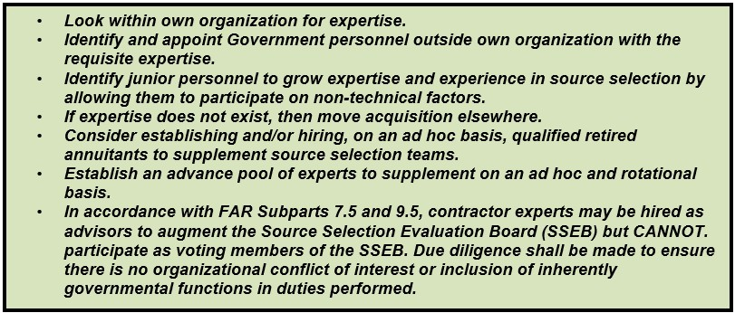
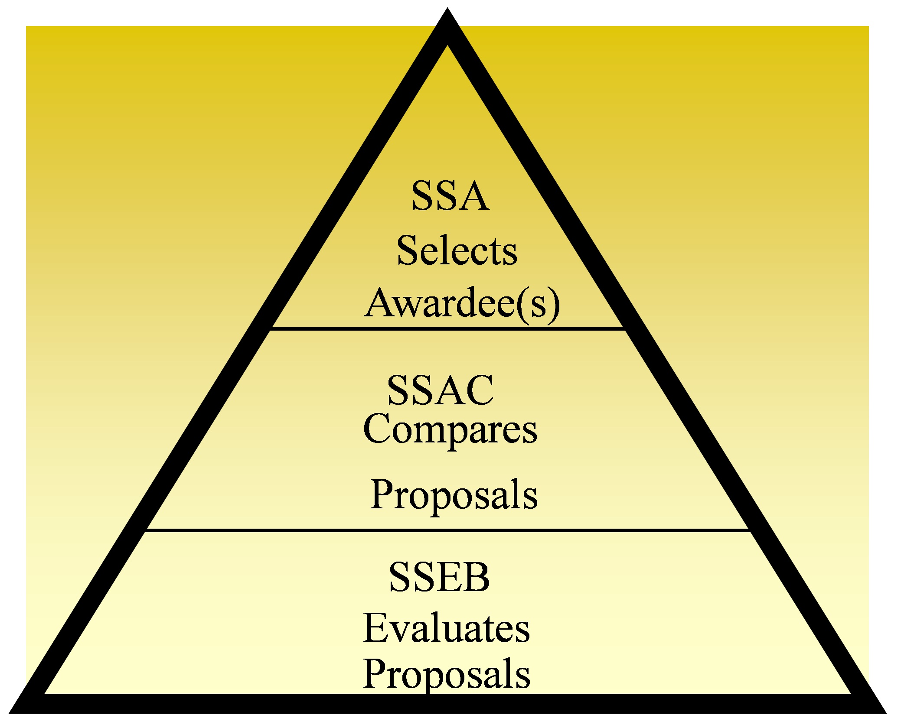
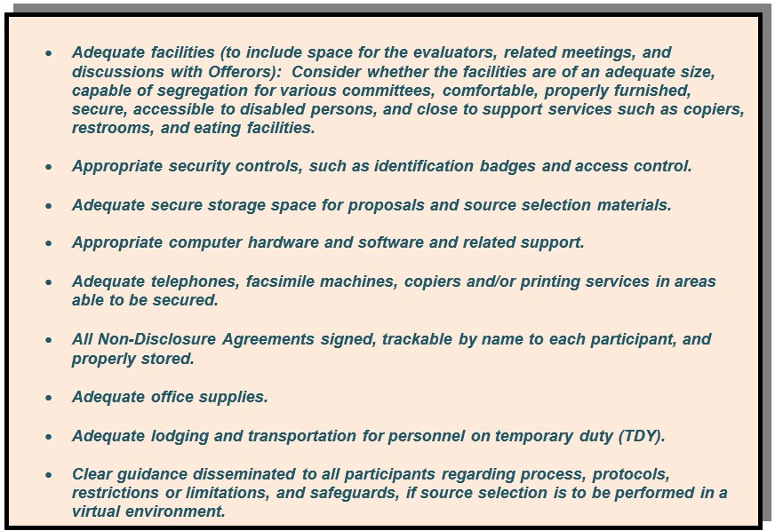
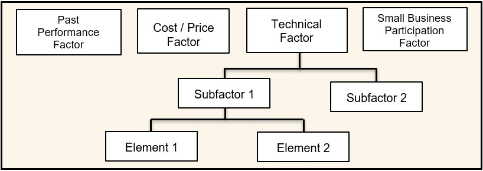
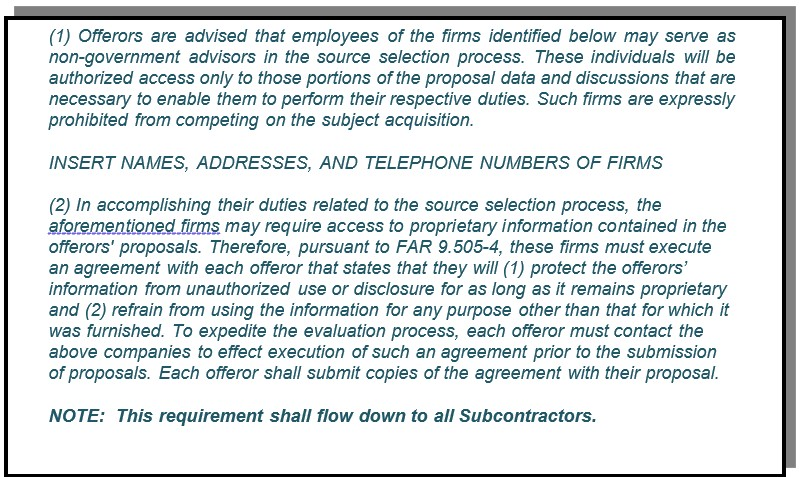
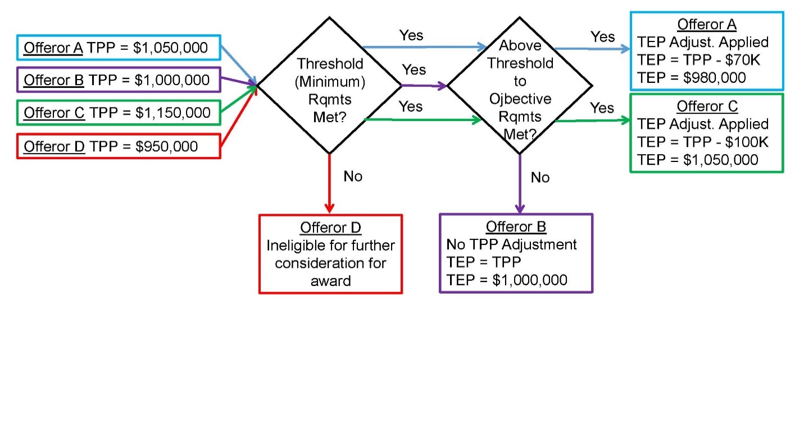
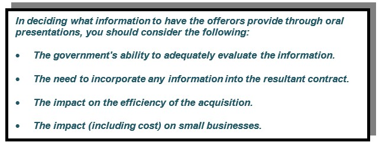
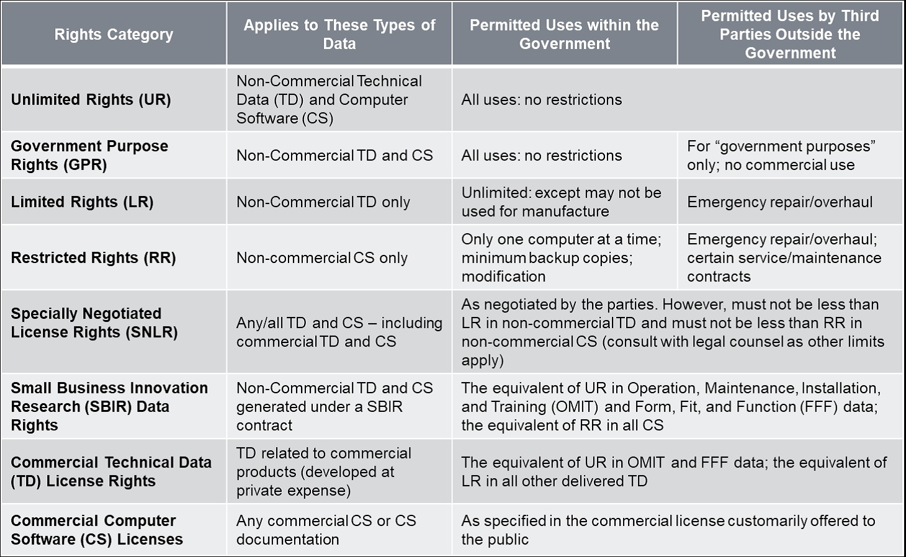
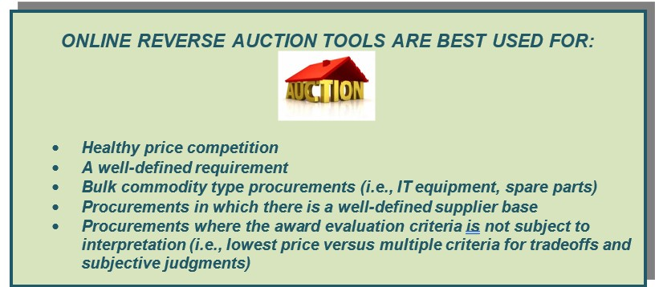

Appendix - AA ARMY SOURCE SELECTION SUPPLEMENT
(Revised 31 December 2024)
CHAPTER 1 PURPOSE, ROLES, AND RESPONSIBILITIES
1.4 Source Selection Team Roles & Responsibilities
CHAPTER 2 PRESOLICITATION ACTIVITIES
2.1 Conduct Acquisition Planning
2.2 Develop a Source Selection Plan
2.3 Develop the Request for Proposals
2.4 Release the Request for Proposals – (No Supplemental Army Guidance)
CHAPTER 3 EVALUATION AND DECISION PROCESS
3.2 Documentation of Initial Evaluation Results
3.4 Competitive Range Decision Document – (No Supplemental Army Guidance)
3.6 Final Proposal Revisions – (No Supplemental Army Guidance)
3.7 Documentation of Final Evaluation Results
3.8 Conduct and Document the Comparative Analysis
3.9 Best-Value Decision – (No Supplemental Army Guidance)
3.10 Source Selection Decision Document
3.11 Debriefings – See Appendix A
3.12 Integrating Proposal into the Contract
CHAPTER 4 DOCUMENTATION REQUIREMENTS
4.2 Electronic Source Selection
A-3 Notification of Debriefing
A-6 Preparing for the Debriefing
A-7 Outline for the Debriefing – (No Supplemental Army Guidance)
A-9 Sample Offeror Questions – (No Supplemental Army Guidance)
B-2 Value Adjusted Total Evaluated Price Tradeoff
APPENDIX C Lowest Priced Technically Acceptable Source Selection Process
C-5 Quick Comparison of Best Value Basics
C-6 Comparing Key Characteristics
C-8 Common Concerns for Each Methodology
C-9 Tips and Best Practices for Using LPTA
C-10 LPTA Requirement and Standard of Proof Samples
C-11 Flow Chart For Selection of Best Value Methodology
C-12 LPTA – Sample Evaluator Write-Up
APPENDIX D Streamlining Source Selection
D-1 General Streamlining Tactics – (No Supplemental Army Guidance)
D-2 Preparation for Proposal Evaluation and Source Selection – (No Supplemental Army Guidance)
D-3 Source Selection Management Plan – (No Supplemental Army Guidance)
D-4 Tiered or Gated Approaches – (No Supplemental Army Guidance)
D-6 Using Demonstration in Source Selection – (No Supplemental Army Guidance)
D-7 Highest Technically Rated Offeror (HRTO) Approach – (No Supplemental Army Guidance)
D-8 Performance Price Tradeoff – (No Supplemental Army Guidance)
D-9 Useful Websites and Training
APPENDIX E Intellectual Property, Data Deliverables, and Associated License Rights
CHAPTER 1 PURPOSE, ROLES, AND RESPONSIBILITIES
E-1.2 Applicability and Waivers – (No Supplemental Army Guidance)
E-1.4 Source Selection Team Roles and Responsibilities
CHAPTER 2 PRESOLICITATION ACTIVITIES
E-2.1 Conduct Acquisition Planning
E-2.2 Develop a Source Selection Plan (SSP)
E-2.3 Develop the Request for Proposals (RFP)
CHAPTER 3 EVALUATION AND DECISION PROCESS
E-3.2 Documentation of Initial Evaluation Results – (No Supplemental Army Guidance)
E-3.3 Award Without Discussions – (No Supplemental Army Guidance)
E-3.4 Competitive Range Decision – (No Supplemental Army Guidance)
E-3.5 Discussion Process – (No Supplemental Army Guidance)
E-3.6 Final Proposal Revisions – (No Supplemental Army Guidance)
E-3.7 Documentation of Final Evaluation Results – (No Supplemental Army Guidance)
E-3.8 Conduct and Document the Comparative Analysis – (No Supplemental Army Guidance)
E-3.9 Best-Value Decision – (No Supplemental Army Guidance)
E-3.10 Source Selection Decision Document – (No Supplemental Army Guidance)
E-3.11 Debriefings – See Appendix A of the AS3
E-3.12 Integrating Proposal into the Contract – (No Supplemental Army Guidance)
CHAPTER 4 DOCUMENTATION REQUIREMENTS
E-4.1 Minimum Requirements – (No Supplemental Army Guidance)
E-4.2 Electronic Source Selection – (No Supplemental Army Guidance)
CHAPTER 6 Laws, Regulations, and Policies
CHAPTER 9 Templates – Sections L & M
Technical Volume: Intellectual Property, Data Deliverables, and Associated License Rights
Diminishing Manufacturing Source and Material Shortage (DMSMS)
Hardware Sustainment Activities
Modular Open Systems Approach (MOSA) (10 U.S. Code § 4401)
Operation, Maintenance, Training, and Installation
Operator and Maintainer Training
Organic Field Level Support Provisioning
Product Support/Sustainment Strategy
Software Sustainment Environment (SSE)
Test, Troubleshooting, and Repair
APPENDIX F Small Business Participation Commitment Document
APPENDIX G Online Reverse Auctions
G-2 Applicability to Best Value Acquisitions
CHAPTER 1 PURPOSE, ROLES, AND RESPONSIBILITIES
1.1 Purpose
The Army Source Selection Supplement (AS3) implements and supplements the mandatory Department of Defense (DoD) Source Selection Procedures to establish consistent policies and procedures for Army source selections. The Federal Acquisition Regulation (FAR) and its supplements (Defense FAR Supplement (DFARS), DFARS Procedures, Guidance, and Information (PGI), Army FAR Supplement (AFARS) and the AFARS PGI) prescribe the general policies governing these acquisitions.
1.2 Applicability and Waivers
The AS3 applies to best value, negotiated, competitive source selections with an estimated value greater than $10 million, and may also be used as guidance in all other acquisitions. DoD Source Selection Procedures: https://www.acq.osd.mil/dpap/policy/policyvault/USA000740-22-DPC.pdf, Paragraph 1.2, content for applicability and waivers also applies to Army waiver procedures.
The AS3 is not a stand-alone document and shall be used in conjunction with FAR Part 15, DFARS and DFARS PGI Subpart 215, AFARS and AFARS PGI Subpart 5115 and the DoD Source Selection Procedures. Any conflicts shall be resolved through the Office of the Deputy Assistant Secretary of the Army (Procurement) (ODASA(P)), Policy Directorate, mailbox usarmy.pentagon.hqda-asa-alt.mbx.office-of-the-dasa-p@army.mil.
Any request for waiver of the DoD Source Selection Procedures shall be submitted by the cognizant Senior Contracting Official (SCO), through their Head of the Contracting Activity (HCA), to the DASA(P), Attn: Policy Directorate (SAAL-PP). ODASA(P) will process all waivers as follows:
For solicitations valued at $1 billion or more, waivers may only be approved with the express, written permission of the Director, Defense Pricing, Contracting, and Acquisition Policy (DPCAP).
For solicitations valued below $1 billion, waivers must be approved by the DASA(P).
1.3 Best Value Continuum
Subjective Tradeoff. Use of subjective tradeoff is appropriate for most Army source selections. See Appendix B for more information. (Reference DoD Source Selection Procedures https://www.acq.osd.mil/dpap/policy/policyvault/USA000740-22-DPC.pdf , Section 1.3.1.3)
Value Adjusted Total Evaluated Price (VATEP). Use of VATEP may be most suitable for procuring developmental items when the government can determine the value (or worth) of “better performance” and quantify it in the Request for Proposal (RFP). See Appendix B for more information. (Reference DoD Source Selection Procedures 1.3.1.4)
1.4 Source Selection Team Roles & Responsibilities
Source selection is a multi-disciplined team effort. The Source Selection Team (SST) should include representatives from appropriate functional areas such as contracting, small business, technical, logistics, cost/price, legal, and program management. User organizations should also be represented.
The success of any source selection is usually determined by the personnel involved at all levels, and their degree of active participation. Likewise, the Source Selection Authority (SSA), with assistance from the SCO, will ensure the appointment of personnel with the requisite skills, expertise, and experience to ensure the success of the source selection, to include members appointed to the Source Selection Advisory Council (SSAC).
The SCO is responsible for determining the capability of the organization to effectively resource the SST as set forth in the hierarchy of source selection expertise below (See Figure 1-1). In the event the SCO determines the required expertise is not obtainable, the HCA will be consulted. If the HCA concurs the appropriate resources are still unavailable, the DASA(P) will be notified and will assist in providing resources from other contracting activities or assign the procurement to another contracting activity for execution.

Figure 1-1: Hierarchy of Source Selection Expertise
The size and composition of the SST will vary depending upon the requirements of each acquisition. For example, major hardware acquisitions frequently involve requirements impacting various organizations from across the Army (or from other services on joint-service programs). In such cases, and when forming the SST, SSEB Factor/Subfactor teams should include evaluator representation from each major requirements organization. These evaluators should be assigned to the evaluation criteria associated with their specific area of requirements and expertise. Inclusion of technical evaluators who are subject matter experts on the requirement(s) being evaluated is essential to a successful evaluation process providing fair/accurate assessment of the proposals, and absolutely critical where joint-service and/or multiple functional requirements are involved.
Whether the team is large or small, it should be structured to ensure teamwork, unity of purpose, and allow for appropriate open communication among the team members throughout the process. This will facilitate a comprehensive evaluation and selection of the best value proposal.
Key Components of the SST
For source selections with a total estimated value of $100M or more, the SST shall consist of the SSA, a SSAC, and an SSEB. Each of these SST entities has distinct and separate functions (See Figure 1-2).

Figure 1-2: SST Responsibilities
NOTE: Source selections using LPTA methodology do NOT require the SSAC or require a SSAC Report be prepared.
The SSEB is usually comprised of multiple groups of evaluators who are responsible for evaluating specific areas of the proposal against the RFP requirements. Additionally, legal counsel, small business professionals, cost/price, and technical experts may also serve as SST advisors. The precise structure of the SSEB is a matter within the SSA’s discretion.
The information below supplements the Roles and Responsibilities found in the DoD Source Selection Procedures (See paragraph 1.4).
The SSA.
Appointment. The AFARS 5115.303 provides the policy on SSA appointments.
o All appointed SSAs are considered procurement officials and are subject to the associated statutory / regulatory rules.
o Once appointed, the SSA cannot further delegate their SSA authorities.
o For source selections exceeding $100M, the SSA is other than the PCO.
Ensures the Source Selection Plan (SSP) and evaluation criteria are consistent with the requirements of the solicitation and applicable regulations.
NOTE: The identity of the SSA shall be considered procurement sensitive and shall not be disclosed to anyone who has not signed a non-disclosure agreement for that RFP / acquisition.
The Procuring Contracting Officer (PCO).
(No Supplemental Army Guidance.)
The SSAC.
The SSAC will consist of senior government personnel and may include representation from the cognizant contracting office and legal office.
For Acquisition Category I/II source selections involving requirements organizations from across the Army (or from other services on joint-service programs), the SSAC must include representation from all significant requirements organizations. The SSAC representatives must be at an organization / grade level commensurate with the other members of the SSAC, usually military 0-6/GS-15 or higher.
The SSEB.
The SSEB Chairperson.
o Ensures the SSEB members understand the evaluation criteria and establishes a uniform approach to the evaluation and rating effort. Seeks to build consensus among the SSEB members.
o Isolates policy issues and major questions requiring decision by the SSA.
o Relieves and replaces SSEB members from assignment only in the event of a demonstrated emergency or other appropriate cause.
o Arranges for the SSEB members to work compensatory time, when necessary, authorized, and approved.
o Arranges for the needed administrative staff at the evaluation work site.
The SSEB Members.
o Prepare the evaluation notices (ENs).
o Briefs the SSAC/SSA (as requested) and responds to comments / instructions from the SSAC/SSA.
Legal Counsel.
Non-disclosure agreements (NDAs) will not be requested or required of HQDA Office of General Counsel (OGC) attorneys.
Other Advisors.
(No Supplemental Army Guidance.)
Program Manager (PM) / Requiring Activity (RA).
(No Supplemental Army Guidance.)
Small Business Team.
Assists requirements office and PCO with Market Research during planning and throughout the various acquisition phases.
Assists in shaping Acquisition Strategy in support of small businesses when applicable.
Provides review of draft and final documents prior to release to potential offerors.
Tools.
Army’s Virtual Source Selection Advisory Team (VSSAT) Tile is accessible through Army’s Knowledge Management Portal Procurement.Army.Mil (PAM) Source selection tile (https://armyeitaas.sharepoint-mil.us/sites/ASA-ALT-PAM-ProcProc/SitePages/SourceSelection.aspx).
Administrative Support.
Each acquisition will vary in terms of the administrative support requirements.
Figure 1-3 on the following page contains a checklist of some important requirements common to many acquisitions.

Figure 1-3: Administrative Support Requirements
CHAPTER 2 PRESOLICITATION ACTIVITIES
2.1 Conduct Acquisition Planning
Acquisition Planning. Acquisition planning should start when an agency identifies a need for supplies, construction and/or services. When practical, utilize an integrated product team (IPT) approach to develop the acquisition plan and/or strategy as required. This early teaming effort may reduce false starts and resulting delays that frequently accompany the preparation of a complex procurement. (Reference DoD Source Selection Procedures 2.1.1)
Best Practice: Some of the decisions/determinations made during the planning phase are key and will impact the entire acquisition from source selection through contract administration. Including key stakeholders, such as contract administrators, small business professionals (SBPs), Contracting Officer’s Representatives (CORs), Quality Assurance (QA) and Property Administrator, will help to ensure consideration of issues that may impact the requirements, performance, and acquisition strategy as a whole.
Risk Assessment. Risk analysis is a critical component of acquisition planning, and the market research results should be a primary consideration as part of this analysis. Early identification, formation, and direct involvement of the acquisition team (and key stakeholders) will help to ensure a comprehensive understanding of the requirements and any marketplace influences on risk and risk mitigation. (Reference DoD Source Selection Procedures 2.1.1.2)
Peer Reviews. See AFARS 5101.170 for Preaward peer reviews. Planning and including realistic time allowances for all requisite reviews when establishing milestone schedules, is essential to the success of your acquisition.
Market Research. Market research is a shared responsibility and continuous process conducted by the PM, requiring activity, PCO, SBP, and other acquisition team members which directly influences how the acquisition strategy and source selection process is shaped. (Reference DoD Source Selection Procedures 2.1.2 and AFARS 5110.002)
Some techniques you may use in conducting market research include:
Use general sources of information available from the marketplace, other DoD/ government agencies, and the internet.
Contact knowledgeable individuals, such as SBPs, regarding market capabilities and business practices.
Review the results of recent market research for same or similar requirements.
Query government and/or commercial databases (e.g., Dynamic Small Business Search https://dsbs.sba.gov/search/dsp_dsbs.cfm, System for Award Management (SAM.Gov); https://sam.gov/content/home.)
Conduct industry engagement/industry days in coordination with supporting Small Business Office.
Prepare a draft Request for Proposal (RFP) and ensure review by a SBP prior to issuing. (DoD Source Selection Procedures 2.1.2.3)
2.2 Develop a Source Selection Plan
Selection of Evaluation Factors. Selecting the correct evaluation factors is the most important decision in the evaluation process. Structure the evaluation factors and their relative importance to clearly reflect the needs of your acquisition, with consideration given to the inclusion and evaluation of intellectual property/data rights and what is necessary and prudent be included in the acquisition.
Mandatory Evaluation Considerations. For source selections, you must evaluate cost/price (unless the exception at FAR 15.304(c)(1)(ii)(A) applies) and the acceptability/quality of the proposed product or service through one or more non-cost evaluation factors (e.g., past performance, technical excellence, management capability, and key personnel qualifications).
As stated at FAR 15.304(c)(1)(ii)(A)), the PCO may exclude cost/price as an evaluation factor for a Multiple Award IDIQ effort issued for the same or similar services if the Government intends to make award to all "qualifying offerors" and Cost/Price will be considered as one of the factors for all tasks/delivery orders.
Additionally, you must evaluate past performance on all negotiated competitive acquisitions expected to exceed the thresholds identified in FAR 15.304 and DFARS 215.304, unless the PCO documents why it would not be appropriate. There may be other required evaluation factors, such as small business participation, based upon regulatory and/or statutory requirements. (See FAR 1 5.304 and its supplements)
From this vantage point, the acquisition team must apply prudent business judgment to add other evaluation factors, subfactors, and elements that are important to selecting the most advantageous proposal(s). The number of factors and subfactors should be kept to the absolute minimum required to effectively assess the proposal(s). The use of more factors than needed to conduct the evaluation can complicate and extend the process, while providing no additional value and thereby diluting meaningful discriminators. Limiting factors also serves to reduce the evaluation oversight span-of-control responsibilities of the SSEB leadership, SSA/SSAC, PCO, and legal counsel, thereby permitting more focused oversight on the remaining (and most important) factors/subfactors and reducing the likelihood of evaluation errors.
Common evaluation factors are cost/price, technical, past performance, and small business participation.
NOTE: Ensure small business participation remains an independent factor, not subordinate and a subfactor to any other evaluation factor. Additionally, if appropriate for the requirement, you may have other evaluation factors and/or may use one or more levels of subfactors. The standard Army naming convention for the various levels is: Evaluation Factor, Subfactor, and Element. (See Figure 2-1)

Figure 2-1: Sample Evaluation Factor Structure
Establishing Evaluation Factors and Subfactors. The acquisition team develops the evaluation factors and any appropriate subfactors and elements. The team should select the factors based on user requirements, acquisition objectives, thorough market research and risk analysis. Figure 2-2 illustrates the steps involved in developing the factors and subfactors. The use of elements should only be utilized on rare occasions. (AFARS 5115.304)
Once the RFP is issued, the factors and subfactors give the offerors insight into the significant considerations the government will use in selecting the best value proposal and help them to understand the source selection process. Carefully consider whether minimum “acceptable/unacceptable” entry-gates can be included.
The team must also specify whether technical ratings will be applied at the subfactor level or rolled up to the factor level, with the information contained and clearly stated in the RFP so all stakeholders know how the evaluation of ratings will be applied.
NOTE: The Small Business Subcontracting Plan is not a factor or subfactor to be rated but, as stated at FAR 19.705-4, shall be reviewed for adequacy and determined to be “acceptable or unacceptable based the requirements identified at FAR 19.704. When used properly, this use of entry-gate criteria can streamline the evaluation process significantly.”

Figure 2-2: Steps Involved in Formulating Evaluation Factors and Subfactors
Nongovernment Advisors. Allowance and guidelines for use of contracted advisory services is stated at FAR 37.203, FAR 37.204, and FAR 37.205. If utilized, prior to issuing a solicitation, the head of the agency shall make a written determination based on availability of qualified personnel withing the agency. Nongovernment advisors may assist in and provide input regarding the evaluation, but they shall not determine ratings or rankings of the offeror’s proposals. Recommend clarifying allowances and or access that will be given the advisors (e.g., access to the entire proposal or only access to the part concerning their particular expertise? Can they write strengths and weaknesses or only assist other evaluators in this process? Can they participate in the consensus process without participating in/providing input for the rating assignment?).
Reminder, nongovernment sources can include academia, nonprofit institutions, and industry.
Reminder: When using nongovernment advisors, you must advise potential offerors of the nongovernment advisors’ participation in the source selection and obtain the offerors consent to provide access to its proprietary information to the nongovernment advisor or the company which employs the nongovernment advisor. Figure 2-3 identifies suggested RFP language relative to the use of commercial firms to support the source selection process. (Reference DoD Source Selection Procedures 2.2.8)
Figure 2-3: Suggested RFP Language for the use of Nongovernment Advisors
Source Selection for Services. The source selection process for services, including development of the SSP, is often very complex. Organizations must ensure that the SST is comprised of qualified personnel with specific knowledge of the types of services to be acquired.
The use of Sample Tasks is an effective tool in the evaluation of services. Sample Tasks can provide insight as to the offeror’s level of understanding of the work to be performed, as well as how the technical approach relates to the cost/price proposed for that Sample Task. (See Appendix H for an example of a Sample Task.)
To the maximum extent practicable, sample tasks should set forth requirements that are contemplated for award, establishing the expectation that offerors will be held accountable for the resources and costs they propose.
The use of generic or hypothetical sample tasks may unintentionally create an environment that misleads offerors to understate resources and costs due to the fact that the sample tasks will not be awarded. Care must be taken to draft the sample tasks as closely as possible to the types and scope of services expected to be acquired from the Performance Work Statement (PWS). If possible, consider the use of a “live” task, which would be awarded at time of contract award.
Evaluation criteria should be limited to essential areas of performance that are measurable during the proposal evaluation process. This will permit a more focused evaluation of the offeror’s proposed solution to the sample task.
If utilizing a sample task, ensure this is accounted for and aligned with Sections L and M (or equivalent sections for procurements not using uniform contract format (UCF)).
2.3 Develop the Request for Proposals
The success of an acquisition is directly linked to the quality of the RFP. A well-written RFP will:
Facilitate fair competition;
Convey a clear understanding of the government’s requirements;
Clearly identify the evaluation and award criteria;
Clearly detail information required by the offerors;
Limit criteria to discriminators that are not overly restrictive, but add value and reduce risk;
Preserve the offeror’s flexibility to propose innovative solutions when appropriate;
Specify areas where the offerors can make technical and cost tradeoffs in their proposals;
Ensure that Sections L and M (or equivalent sections) relate back to each other and the SSP.
Ways to Improve the RFP Process
Ensure Consistency in the RFP and Related Documents. RFP inconsistencies can create ambiguity and result in less advantageous offers, require RFP amendments, cause delays in the acquisition, and result in litigation. Inconsistencies between the descriptions of the government’s requirements, instructions on how to prepare a proposal, and information related to the evaluation factors and subfactors are particularly troublesome and can be a result of various groups of personnel developing different RFP sections without adequate coordination and review. Additionally, when one document is revised, those revisions must also be made to other corresponding documents.
It may be beneficial to develop a matrix that correlates the RFP sections and content to ensure consistency. Figure 2-4 illustrates how key documents and evaluation standards map to one another, showing the recommended sequencing for document preparation. Providing industry with a similar copy of the matrix as a reference tool and part of the solicitation can aid in proposal preparation. You may also consider including a column for offerors to complete in the tracking matrix (as shown in Figure 2-4), denoting where in their proposal the requirement is addressed. This approach promotes understanding of the linkage within the solicitation, explains how all parts of the proposal will be used in the evaluation process, and enables a crosswalk for both the government and offerors to ensure all requirements have been addressed.
| SPECIFICATION AND PWS |
EVALUATION FACTORS, SUBFACTORS EVALUATION AND SUBMISSION INFORMATION |
PROPOSAL REFERENCE | ||
| SPECIFICATION | PWS |
PROPOSAL EVALUATION INFORMATION RFP Section M Factor – Technical Subfactor – Software Modification Approach |
PROPOSAL SUBMISSION INFORMATION RFP Section L |
OFFEROR TO COMPLETE Provide Page and Paragraph Number Where Addressed |
| Software code shall meet the computer software design and coding requirements as defined in International Standards Organization (ISO) 9000-3. |
3.1.1. The contractor shall modify, integrate and test software as specified in the system specification. 3.1.1.3 The contractor shall prepare a software modification plan. |
The offeror’s software modification approach will be evaluated relative to the modified software’s ability to accommodate open architecture, tracking accuracy, and reliability. | The offeror will describe its approach to software modification and explain how the software will accommodate open architecture, conforms to ISO-9000-3, tracks accurately, and maintains reliability. | |
Figure 2-4 Requirements to RFP to Proposal Tracking Matrix
Avoid Requesting Too Much Information from the Offerors. Instructions for preparing and submitting proposals are critical to the acquisition. Always keep in mind:
There must be a direct linkage between solicitation requirements and objectives, each evaluation factor and subfactor, and the proposal preparation instructions.
Request only the essential information needed to evaluate proposals against the evaluation factors and subfactors.
Never ask for information that will not be evaluated. Instructions that require voluminous information can unintentionally limit or reduce competition by causing potential offerors to forego responding to the solicitation in favor of a less costly business opportunity.
Excessively large proposals may increase the time and costs associated with performing the evaluation. Specific guidance such as proposal page limitations or page recommendations and narrative font style and size are encouraged but need to be clearly defined and tailored to the needs of the acquisition.
Focus exclusively on true discriminators (discriminators linked to critical requirements which are based on market research, the assessment of risk, and that enables the evaluation to discern between various values in the offeror’s proposal). Failure to do so dilutes the evaluation and compromises the SSA’s ability to identify the best value proposal.
Use performance-based requirements but remain mindful that design requirements that are too detailed, or overly prescriptive performance work statements, severely limits the offerors’ flexibility to propose their best solutions. Instead, use functional or performance-based requirements to the maximum extent practicable. While it may be more difficult to develop evaluation criteria and conduct the evaluation process using this approach, the benefits warrant and support it. These benefits can include increased competition, access to the best commercial technology, better technical solutions, and fewer situations for protests.
Drafting Instructions to Offerors (Section L or Equivalent)
Provide specific guidance to offerors regarding the structure of their proposals. The proposal should be divided into distinct volumes or files. These volumes/files should correlate to each of the evaluation teams (e.g., technical, cost/price, past performance, etc.) or factors. How each volume/file is to be structured should be stated. These practices will facilitate distributing and aligning the proposal material to the various teams or specific factors, making it easier for evaluators to locate specific information in the proposals.
NOTE: Clearly advise offerors to keep technical and pricing information separate and not inter-mixed between proposal volumes.
Past Performance Information . Tailor the proposal submission requirements to reflect the complexity of the procurement and the relative importance assigned to past performance. Request only the information necessary for the evaluation. Consider the following when developing proposal submission requirements:
Contract references. Request offerors to submit a list of government and non-government contract references to include joint venture participation. References are to include contract number, contract type and dollar value, place of performance, date of award, whether performance is on-going or complete, extent of subcontracting, and the names, phone numbers, and e-mail addresses of at least two points of contacts for each contract.
o Require the list to include all relevant on-going contracts, or contracts completed during a specified period. This approach will provide an ‘unfiltered’ view of the offeror’s contract efforts, not just the ‘select’ contract efforts. If you anticipate the number of contracts will be excessive, limit the submission to a specified number of the most recent, relevant contracts. In such cases, require the contracts to have been active for a specified period of time, since newly awarded contracts will probably not provide sufficient information.
o Recommend limiting the specified period to contracts performed within the last three years, or no greater than six years for simple construction, architect-engineering (A-E) contracts, and more complex works. Recency of past performance should be calculated using the RFP release date as a benchmark. A shorter period may be appropriate for acquisitions where there are numerous actions and/or many vendors providing the required items.
o When appropriate and determining recency for certain types of large construction works (e.g., military housing, navigation projects or other large civil works), a greater time period in excess of six years should be considered and used to obtain realistic examples of past performance.
o When offerors are likely to be large, multi-function firms, limit the contract references to those performed by the segment of the firm (e.g., division, group, and unit) that is submitting a proposal.
Past Performance Information of a Prospective Subcontractor. When planning how a subcontractors’ past performance is intended to be evaluated, explain how any related adverse past performance information will be handled. In some acquisitions, an offeror’s prospective subcontractor may be the offeror’s competitor on other acquisitions. In such cases, the prospective subcontractor may be hesitant to have any adverse information related to its past performance released to the offeror. The acquisition should be tailored accordingly and advise offerors in the RFP how the disclosure of such information will be handled.
Questionnaires.Questionnaires or interviews may be utilized to obtain the information from individuals having knowledge about the offeror’s past performance, and details such as contract points of contact (name, email, and phone numbers) shall be included in the information provided back to the government in the proposal.
Consider the following when using questionnaires:
o Keep the questionnaire short. Typically, it should be no longer than 1-2 pages.
o Format the questionnaire to easily facilitate electronic completion (e.g., fill-in blocks, and electronic checkboxes).
o Include a copy of the questionnaire in the RFP.
o Either distribute the questionnaires to the points of contact or have the offerors distribute the questionnaires. Prior to the government sending out the questionnaires, and when practical, contact the respective points of contact and emphasize the importance of the completed questionnaires returned to the government promptly. Having the offerors send out the questionnaires may save time and resources.
Small Business Participation Past Performance. All offerors shall submit information substantiating their past performance and compliance with FAR 52.219-8 Utilization of Small Business Concerns, FAR 52.219-9 Small Business Subcontracting Plan, and DFARS Subpart 215.305 Proposal Evaluation, to maximize opportunities for small business subcontractors. Offerors shall also provide a statement indicating whether any negative information has been reported in the past three years (or other number of years as identified in the solicitation) concerning their past compliance with FAR 52.219-8 or FAR 52.219-9. If any such negative information is reported, the offeror may submit explanations or comments responding to such negative information. Offerors with no prior contracts containing FAR 52.219-8 and/or 52.219-9 shall certify stating as such. For other than small business, include SF 294 and SF 295 (or Individual Subcontracting and Summary Subcontracting Reports in eSRS) information for Government contracts with these reporting requirements for the last X (fill in number, same as period stated elsewhere for past performance) number of years.
Relevant Past Performance. Include in the RFP a definition of what constitutes relevant past performance. Factors that may be used to define relevancy include similarity, size, complexity, dollar value, contract type, and degree of subcontracting/teaming. As appropriate, require the offeror provide a description of how the contract references are relevant to the immediate acquisition. In some cases, previous contracts as a whole may be relevant to the immediate acquisition, while only portions of other contracts may be relevant.
Small Business Participation . The Army methodology for evaluating small business participation in unrestricted source selections is to establish a separate factor (versus a subfactor under technical) with an assigned relative order of importance for small business participation as it relates to the other source selection evaluation factors as stated at FAR 15.304(c)(3)(ii) and (c)(4).
When evaluating small business participation, solicitations must be structured to give offers submitted by small business concerns the highest rating for this evaluation factor in accordance with FAR 15.305(a)(5). In addition, small businesses are not required to submit any information (see C.F.R.125.3(g)(3)) in connection with the small business participation evaluation factor or required to submit a proposed Small Business Participation Commitment Document.
Proposal Submission Instructions. The submission instructions should be written clearly enough to indicate that:
o Other than small business contractors may achieve the small business participation goals through subcontracting to small businesses.
o Small business contractors may achieve small business participation goals through their own performance/participation as a prime and also through a joint venture, teaming arrangement, and/or subcontracting to other small businesses.
Small Business Participation Commitment Document (SBPCD). The SBPCD format is designed to streamline and bring uniformity to responses and evaluations for small business participation when required under FAR 15.304. The format provides clarity that is distinctly different from the Small Business Subcontracting Plan required for other than small businesses. (See FAR 52.219-9)
A sample SBPCD format is located at Appendix F and can be provided in the instructions to offerors or as an attachment to the RFP. NOTE: The SBPCD is to be rated acceptable/unacceptable. (Ref DoD Source Selection Procedures 2.3.2.8 and 3.1.4.1.2. Table 6).
Subcontracting Plan. Separate from the SBPCD, other than small business offerors must also submit a small business subcontracting plan meeting the requirements of FAR 52.219-9 and DFARS 252.219-7003 (or DFARS 252.219-7004 if the offeror has a comprehensive subcontracting plan).
o Other than small businesses must submit acceptable subcontracting plans to be eligible for award. Subcontracting plans shall reflect, and be consistent with, the commitments offered in the SBPCD.
o When a specific small business is identified in a proposal, the same small businesses identified and considered in the evaluation shall be listed in the subcontracting plan submitted pursuant to FAR 52.219-9 to facilitate compliance with DFARS 252.219-7003(e).
o The Subcontracting Plan is determined acceptable / unacceptable (See FAR 19.705-4(c)).
Drafting Evaluation Criteria (Section M or Equivalent)
In Section M (or equivalent) of the RFP, clearly state how each factor will be evaluated and the relative importance of evaluation factors.
Past Performance Information . Clearly state how past performance will be evaluated, its relative importance, and how offerors with no relevant past performance will be evaluated. Consider the following when drafting this section:
Use Past Performance to streamline the source selection process. Instead of evaluating management as a separate evaluation factor, consider assessing management effectiveness in meeting Technical and Schedule requirements as part of the past performance evaluation. Using past performance in this way may, under appropriate circumstances, eliminate the need for the offeror to submit management and quality plans.
Past Performance Considerations. At a minimum, consider the offeror’s record of complying with contractual requirements in the areas of schedule, technical quality, and cost control (for cost reimbursement contracts). You may also consider the offeror’s record of business relations. Tailor the scope of the areas considered to the immediate acquisition.
Small Business Participation . Other than small businesses will be evaluated on their level of proposed small business participation in the performance of a resulting contract relative to the objectives established herein. Offerors shall submit a SBPCD which specifies the offeror’s level and degree of commitment to small business utilization/participation in performance of this requirement. A SBPCD is required from all offerors, including companies with commercial plans and comprehensive subcontracting plans.
Small businesses are not required to submit subcontracting plans but will be required to address the extent of small business performance (participation) in their proposals when required by the solicitation.
The government may evaluate:
The extent to which such firms, as defined in FAR Part 19, are specifically identified in proposals;
The extent of commitment to use such firms (and enforceable commitments will be considered more favorably than non-enforceable ones);
Identification of the complexity and variety of the work small firms are to perform;
The realism of the proposal; and
Past performance of the offerors in complying with requirements of the clauses at FAR 52.219-8, Utilization of Small Business Concerns, and 52.219-9 Small Business Subcontracting Plan.
Small business participation goals/Minimum Quantitative Requirement (MRQ) is based on market research (e.g., inclusive of researching historical data and contacting subject matter experts). Research can entail the type and complexity of work, the availability of small businesses, and their capability and capacity.
If using the percentage of subcontracted dollars for the SBPCD, the dollars should correlate directly to the percentage of subcontracted dollars in the small business subcontracting plan for other than small businesses. NOTE: DoD’s assigned subcontracting goals may be used to establish small business participation minimum goals when market research results confirms that these goals are achievable or when market research is lacking sufficient data to use another source as a baseline.
Small business prime offerors shall be advised that their own participation as a prime can be counted towards the percentages set in this evaluation factor. Small businesses shall not be required to subcontract to other small businesses in order to achieve the small business participation goals, unless small business goals are set as a percentage of planned subcontracting dollars.
Requiring offerors to provide both the percentage and the associated total dollar equivalent of work to be performed by small businesses can assist in providing consistency in the evaluation. Additionally, the information may be helpful to provide transparency for small businesses when previously performed services are currently consolidated and/or bundled into an unrestricted acquisition.
NOTE: Dollars awarded to a firm with multiple SB designations should be counted in each applicable category. For example, a firm that is a WOSB and a SDVOSB would be counted in the SB, WOSB, VOSB, and SDVOSB categories.
The extent of participation of small business prime offerors and small business subcontractors. The Army’s preferred methodology for evaluating small business participation goals in source selections is in terms of the percentage of the VALUE of the total acquisition. However, it is permissible to set goals as a percentage of ‘planned subcontracting’ dollars.
o Total Contract Value/Dollars Example: This scenario provides clear results for the evaluation. Scenario: Small business participation goal is set at 15% of total contract value and dollars equivalent on a procurement valued at $1,000,000:
Other than Small Business Offeror A: 20% (20% of $1,000,000 = $200,000)
Other than Small Business Offeror B: 25% (25% of $1,000,000 = $250,000)
Small Disadvantaged Business (SDB) Offeror C: 15% (SDB self-performs 15% of the $1,000,000 = $150,000)
o Sample language: The extent to which the offeror meets or exceeds the goals: Goals for this procurement are -- Small Business: {a%} of the total contract value; Small Disadvantaged Business (SDB): {b%} of the total contract value; Women-Owned Small Business (WOSB): {c%} of the total contract value; Historically Underutilized Business Zone (HUBZone) Small Business: {d%} of the total contract value; Veteran Owned Small Business (VOSB): {e%} of the total contract value; Service Disabled Veteran Owned Small Business (SDVOSB): {f%} of the total contract value. (NOTE: a participation plan that reflects {c%} of the contract value for WOSB would also count towards the overall Small Business Goal; percentages for SDVOSB also count towards VOSB).
Percentage of participation in terms of subcontracted dollars is the LEAST preferred methodology.
o Percentage of Planned Subcontracting Dollars Example: Since each offeror in the scenario below is allowed to determine how much of the work is planned for subcontracting, including small business and other than small business, using the percentage of planned subcontracting dollars methodology can provide a skewed evaluation of small business participation if not analyzed thoroughly. Percentage of planned subcontracted dollars can reflect a high percentage with low dollars going to small businesses (e.g., Other than Small Business Offeror B below), and vice versa with a lower percentage but higher dollars (e.g., Other than Small Business Offeror A below) going to small business, as shown in the scenario below.
Scenario: Small business participation goal is set at 15% of the planned subcontracted dollars on a procurement valued at $1,000,000:
Other than Small Business Offeror A: 22% (22% of $200,000 planned for total subcontracting = $44,000 small business subcontracted dollars)
Other than Small Business Offeror B: 30% (30% of $10,000 planned for subcontracting = $3,000 small business subcontracted dollars)
SDB Offeror C: 15% (SDB self-performs 15% of the total contract = $150,000)
o Sample language: (Alternate when using planned subcontracted dollars) The extent to which the offeror meets or exceeds the goals: Goals for this procurement are -- Small Business: {a%} of the total subcontracted
dollars; SDB: {b%} of the total subcontracted dollars; WOSB: { c%} of the total subcontracted dollars; HUBZone: {d%} of the total subcontracted dollars; VOSB: {e%} of the total subcontracted dollars; SDVOSB: {f%} of the total subcontracted dollars. (Note: The total must equal 100%).
Establishing Relative Importance. When using the tradeoff process, you must assign relative importance to each evaluation factor and subfactor. Tailor the relative importance to your specific requirements.
Use priority statements to express the relative importance of the evaluation factors and subfactors. Priority statements relate one evaluation factor (or subfactor) to each of the other evaluation factors (or subfactors). Figure 2-5 below contains a sample priority statement. (Reference DoD Source Selection Procedures 2.3.3)
Reminder: Numerical weighting (i.e., assigning points or percentages to the evaluation factors and subfactors), is NOT an authorized method of expressing the relative importance of evaluation factors and subfactors (See AFARS 5115.304(b)(2)(B)).

Figure 2-5: Sample Priority Statement
2.4 Release the Request for Proposals – (No Supplemental Army Guidance)
CHAPTER 3 EVALUATION AND DECISION PROCESS
3.1 Evaluation Activities
While the specific evaluation processes and tasks will vary between source selections, the basic objective remains constant – to provide the SSA with the information needed to make an informed and reasoned selection. To this end result, the evaluators will identify strengths, weaknesses, deficiencies, risks, and uncertainties applicable to each proposal. The process of identifying these findings is crucial to the competitive range determination, the conduct of meaningful discussions and debriefings, and the tradeoff analysis described in the Source Selection Decision Document (SSDD).
Reminder: The SSEB shall not perform comparative analysis of proposals or make source selection recommendations unless requested by the SSA (Reference DoD Source Selection Procedures 1.4.4.4.3).
While the below steps are identified in a linear manner, some of the process is iterative and some steps may be accomplished concurrently. Except where noted, these steps apply to the evaluation of both the cost and non-cost factors. The groups responsible for evaluating past performance, other non-cost factors, and cost/price normally perform their evaluations in parallel. The PCO and SSEB Chairperson shall ensure that the evaluation of each proposal is performed in a fair, integrated and comprehensive manner.
Best Practice: Identify acquisition teams at the requirements development phase and provide comprehensive training on the entire process, from acquisition planning through source selection decision. Provide SSEB training covering the final RFP and SSP approximately one to two weeks prior to receipt of proposals.
Step 1: Conduct SSEB Training – Prior to receipt of proposals, each evaluator must become familiar with all pertinent documents (e.g., the RFP and SSP). Source selection evaluation training shall be provided/required for each evaluation and conducted by the PCO, at the PCO’s request, and under their supervision; the evaluation training may be conducted by another qualified source selection expert or an agency team. Training shall include an overview of the source selection process, required documents, and include a detailed focus on how to properly document rationale for the assigned rating, as well as the assessment of each offeror’s proposal’s strengths, weaknesses, uncertainties, risks, and deficiencies. Designated Legal Counsel is recommended to assist in the source selection evaluation training as well, providing content relating to ethics, procurement integrity, the protection of source selection information, and signing of non-disclosure agreements.
The training will be based on the contents of the DoD Source Selection Procedures and this supplement. Defense Acquisition University (DAU) training may be useful and can be required for SSEB members at the PCO or SSA’s discretion. Ensuring all SSEB members have current, and a standardized level of training is a priority and is especially crucial when evaluators have no previous or varying levels of prior source selection evaluation experience, as is frequently the case. Specific organization or requirement information should be included as part of the initial SSEB training.
Step 2: Perform Initial Screening of Proposals – Upon receipt of proposals, the PCO or designee shall conduct an initial screening to ensure offerors’ proposals comply with the RFP instructions for submission of all required information, including electronic media, in the quantities and format specified in the RFP. The screening of prime and major subcontractor names to ensure no conflict of interest for the SST is strongly recommended, especially if contract advisors are used as part of the evaluation team. Figure 3-1 is an extract of a sample proposal screening checklist that may be used to accomplish this initial screening and should be tailored to match the specific proposal submission requirements of the RFP.
|
TAB |
TECHNICAL PROPOSAL |
Circle Applicable Response |
| 1: Executive Summary |
Does this tab include a brief synopsis of the technical proposal? Does it identify the offeror’s proposed teaming partners and/or subcontractors and discuss the nature and extent of their proposed involvement in satisfying the government’s requirements? Is a letter of commitment from each proposed team member and key subcontractor included at this tab? |
Y / N Y / N Y / N |
| 2: Matrix | Does this tab include a matrix which cross-references the proposal and Volume 1 RFP paragraphs (at least all titled paragraphs)? | Y / N |
| 3: Exceptions | Are any exceptions identified at this tab? | Y / N |
| 4: Install/ Modify/ Terminate and Restore Service | Does this tab address paragraph 2.1 of the RFP? Is there a description of the format and content of a typical service restoration plan (as required by PWS para 2.1.5.a)? | Y / N |
| 5: Customer Coordination | Does this tab include a detailed description of the proposed customer coordination services…. | Y / N |
Figure 3-1: Sample Proposal Screening Checklist (Extract)
Step 3: Sharing of Cost/Price Information – The SSEB Chairperson and PCO, in coordination with the SSA, shall determine whether cost information will be provided to the technical evaluators and, if it will be provided, under what conditions, when, and what information shall be provided. The SSEB Chairperson and PCO shall ensure the small business participation evaluation team verifies the total proposed price (not individual cost elements) and any subcontracting information with the Cost/Price team. This will ensure the dollar amounts are consistent with what is being proposed in the small business participation proposal.
Step 4: Conduct Initial Evaluation – Evaluators will independently read and evaluate the offeror’s proposal against the criteria identified in the RFP and SSP, document their initial evaluation findings (e.g., strengths, weaknesses, deficiencies, risks, and uncertainties), and draft proposed evaluation notices (ENs) for each finding to be addressed, ensuring resulting narrative is sound and meaningful.
Step 5: Identify and Document Areas of the Proposal That May Be Resolvable
Through Clarifications or Communications – If information is required to enhance the government’s understanding of the proposal, the PCO may request amplifying or other relevant information from the offeror by means of the clarification or communication process (see FAR 15.306). The PCO should engage the legal advisor prior to conducting this process. (See Figure 3-3 for a detailed discussion of the differences between clarifications, communications, and discussions.)
Step 6: Assign Ratings for Non-Cost Evaluation Factors When Using the Tradeoff Process – At this point, the evaluators may or may not individually assign ratings to each evaluation factor or subfactor for which they are responsible. At a minimum, each evaluation team (factor, subfactor) must convene to discuss the offeror’s proposal. The purpose of the discussion is to share their views on the offeror’s strengths, weaknesses, deficiencies, risks, and uncertainties related to their assigned evaluation factor(s) / subfactor(s) and to reach a team consensus on findings and rating as appropriate.
NOTE : Ratings must be supported by evaluation findings and narrative statements.
Consensus requires a meeting of the minds on the assigned rating and associated deficiencies, strengths, weaknesses, uncertainties, and risks. NOTE: A simple averaging of the individual evaluation results does not constitute consensus.
In exceptional cases where the evaluators are unable to reach consensus without unreasonably delaying the source selection process, the evaluation report shall include the majority conclusion and the dissenting view(s) in the form of a minority opinion, each with supporting rationale. The report must be briefed to the SSAC (if used) and the SSA.
Step 7: Finalize ENs – ENs will include deficiencies, significant weaknesses, weaknesses (and any uncertainties not resolved through clarifications or communications) as well as ENs for significant strengths, and strengths, if dictated by the SSP.
Step 8: Prepare Summary Evaluation Reports for Each Factor – Each Factor Chair will prepare a summary report for their respective factor which provides a discussion of their associated findings. These reports will help form the Summary SSEB Evaluation Report and must be prepared at each phase of the process: initial, interim, and final evaluations.
Step 9: Prepare a Summary SSEB Evaluation Report – The final step is for the SSEB Chairperson to prepare a summary report for each proposal that includes the evaluated price, the rating for each evaluation factor and subfactor, and a discussion of the associated findings (strengths, weaknesses, deficiencies, risks, and uncertainties). A Summary SSEB Evaluation Report must be prepared at each stage of the process: initial, interim, and final evaluations.
Cost or Price Evaluation
Figure 3-2 below provides a side-by-side comparison of what price analysis, cost analysis, and cost realism analysis should include and when each must be used. For detailed instructions and professional guidance on how to conduct these analyses, refer to FAR 15.4, and the Army Cost and Price Portal on the ODASA(P) PAM Knowledge Management Portal. https://armyeitaas.sharepoint-mil.us/sites/ASA-ALT-PAM-ProcProc/SitePages/CostPrice.aspx.
| Price Analysis | Cost Analysis | Cost Realism Analysis | |
| What is it? |
The process of examining and evaluating an offeror’s proposed price to determine if it is fair and reasonable without evaluating its separate cost elements and proposed profit/fee. Price analysis always involves some type of comparison with other prices; e.g., comparing an offeror’s proposed price with the proposed prices of competing offerors or with previously proposed prices for the same or similar items. |
The review and evaluation of the separate cost elements in an offeror’s proposal and the application of judgment to determine how well the proposed costs represent what the cost of the contract should be, assuming reasonable economy and efficiency. |
The process of independently evaluating specific elements of each offeror’s cost estimate to determine whether the estimated cost elements are: realistic for the work to be performed; reflect a clear understanding of the requirements; and consistent with the unique methods of performance and materials described in the Offeror’s technical proposal. The probable cost estimate is a product of a cost realism analysis. |
| When must you perform it? |
When cost and pricing data is not required to determine if the overall price is fair and reasonable. Price realism may be performed to determine that the price offered is consistent with the effort proposed. |
When Certified Cost or Pricing Data has been submitted. When Data Other Than Certified Cost or Pricing Data is submitted if being evaluated for cost reasonableness or cost realism. May also be used when a fair and reasonable price cannot be determined through price alone. (See FAR 15.404-1(a)(4). |
When cost-reimbursement contracts are anticipated. Also, you may use it on fixed price (FP) incentive contracts or, in exceptional cases, on other competitive FP contracts when the Offerors may not fully understand new requirements, there are quality concerns, or past experience indicates contractors’ proposed costs have resulted in quality/ service shortfalls. However, when cost realism analysis is performed on FP contracts, proposals shall be evaluated using the criteria in the solicitation, and the offered prices shall not be adjusted as a result of the analysis. |
Figure 3-2: Comparison of Price, Cost, and Cost Realism Analysis
The following are some general evaluation guidelines and recommendations for evaluating cost/price:
The Independent Government Cost Estimate (IGE) may play a key role in cost/price analysis. It serves as a benchmark for price analysis and in cost realism and may also serve as a benchmark for individual cost elements. The IGE must contain a rationale of how it was developed (e.g., what estimating tools were used and what assumptions were made) in order to properly evaluate cost/price.
With the approval of the SSEB Chairperson and the PCO, the cost/price evaluators should coordinate with the non-cost factor evaluation team leads, as necessary, to ensure consistency between the proposed costs/prices and other portions of the proposal. This interchange between SSEB factor teams is part of the initial validation exercise and should be continued throughout the evaluation process to ensure that interrelationships are promptly identified, and the evaluation findings reflect their recognition. For example, the technical evaluation may reveal areas where each offeror’s approach is inadequate or its resourcing unrealistic, given the proposed approach. The technical evaluators and the cost evaluators should crosswalk technical deficiencies and weaknesses and their impact on cost to ensure an adequate understanding of risks and to ensure proper cost realism adjustments can be made to the proposed costs, if applicable.
When conducting price analysis, consider not only the total price, including options, but also the prices for the individual Contract Line Items to ensure they are not unbalanced. Unbalanced pricing exists when the price of one or more contract line items is significantly over or understated as indicated by the application of cost/price analysis techniques. The PCO, with concurrence of the SSA, if permitted by the RFP may reject the offer if they determine that this poses an unacceptable risk to the government. For more information on unbalanced pricing, see FAR 15.404-1(g).
For fixed-price contracts, the evaluation can be as simple as consideration of adequate price competition/comparison of proposed prices received in response to the solicitation and ensuring prices are fair and reasonable.
Pricing from proposals with marginal or unacceptable technical ratings should only be included in comparison of proposed prices after determining that the offeror included all necessary requirements in the proposed price (for example, a proposal with a significant weakness or deficiency based on a missing item, process, or labor category in the technical proposal is likely to have omitted the same in the proposed price). If only one proposal is determined to be technically acceptable, adequate price competition should not be used as the sole basis for determining price reasonableness.
For cost-reimbursement contracts, you must analyze the offerors’ estimated costs for both realism and reasonableness. In a competitive environment, the cost realism analysis enables you to determine each offeror’s probable cost of performance. This precludes an award decision based on an overly optimistic cost estimate.
Technical Evaluation
Either of DoD’s two methodologies for evaluation (Reference DoD Source selection Procedures 3.1.2.1. Methodology 1 – Separate Technical/Risk Rating Process or 3.1.2.2. Methodology 2 – Combined Technical/Risk Rating) may be utilized when evaluating proposals. The methodology chosen should appropriately ‘fit’ the individual requirement and procurement action with all factors considered.
Past Performance Evaluation
In past performance evaluations, the offeror’s performance record on similar contract efforts is examined, with the information used to reasonably predict whether the offeror will successfully perform the subject requirement. It is important to understand the difference between an offeror’s experience and its past performance – experience is what (work) the offeror has done; past performance is how well the offeror did it.
FAR Parts 9, 12, 15, 36, and 42 contain regulatory policies related to the evaluation of past performance. FAR Part 36 provides specific procedures, forms, and thresholds for evaluation of Architect & Engineering and construction acquisitions.
The Army provides source selection guidance, resources, and best practices for use by the Army Contracting Enterprise (ACE) on the Procurement.Army.Mil (PAM) platform (see https://armyeitaas.sharepoint-mil.us/sites/ASA-ALT-PAM-ProcProc/SitePages/SourceSelection.aspx).
Recency. (No Supplemental Army Guidance. – Reference DoD Source Selection Procedures 3.1.3.1.1.)
Relevance. A helpful tool that may assist in determining/verifying the relevancy of a contract referenced in an offeror’s past performance is to locate and review the contract and requirements in Electronic Document Access (EDA). NOTE: EDA requires user registration within the Wide Area Workflow (WAWF) suite of tools located on the Procurement Integrated Enterprise Environment (PIEE) site https://piee.eb.mil/. To ensure your ability to access contract records, complete this process well in advance of the start of source selection. . (Reference DD Source Selection Procedures 3.1.3.1.2)
Quality of Products or Services. (No Supplemental Army Guidance. Reference DoD Source Selection Procedures 3.1.3.1.3.)
Sources of Past Performance Information. Where possible, use past performance information available from government-wide and agency-wide databases. Use of such information will help to expedite and streamline the evaluation process.
If possible, contact two points of contact on each contract effort selected for in-depth review. The PCOs, SBPs, CORs, Fee Determining Officials, and program management office representatives are often excellent sources of information.
If multiple points of contact are providing past performance information on contract (for example, the PCO, SBP, and PM), arrange for submission of consolidated input from these sources. This may remove the need for the evaluation team to reconcile variances in past performance information submitted.
In assessing the feedback, pay particular attention to the source of that feedback and their familiarity with the requirements of the contract being assessed. For example, end users may be unfamiliar with the contract requirements or certain issues and resolution arising from contract performance may not be apparent to them.
The agency has an obligation to consider information that has a bearing on an offeror’s past performance if the SST is aware of (or should have been aware of) the information. For example, an agency may not ignore contract performance by an offeror involving the same agency, the same services, and/or the same PCO, simply because an agency official fails to complete the necessary assessments or documentation. Consult legal counsel on how to address this type of information.
Addressing Adverse Past Performance Information. When adverse past performance is obtained, as appropriate, contact the respective point of contact for that contract to obtain further information about the circumstances surrounding the situation. Additionally, and when practical, contact at least one other individual to get a second perspective on the offeror’s performance on the subject acquisition. Consider the context of the performance problems, any mitigating circumstances, the number and severity of the problems, the demonstrated effectiveness of corrective actions taken, and the overall work record.
If there is past performance information that adversely impacts an offeror’s proposal assessment, provide the offeror an opportunity to address any such information on which it has not had a previous opportunity to comment. This opportunity may occur during clarifications, communications, or discussions, depending upon whether discussions are anticipated.
When addressing adverse past performance information, identify the contract, but do not identify the name of the individual who provided the information. Summarize the problem(s) with sufficient detail to give the offeror a reasonable opportunity to respond.
NOTE: Past performance is considered a responsibility-type determination for purposes of SBA’s Certificate of Competency (COC) program, even if the next acceptable offer is also from a small business (See FAR 19.601). FAR 19.602-1(a) requires agencies to refer a finding of non-responsibility to the SBA if the determination would preclude award. Therefore, if the PCO refuses to consider a small business concern for award after evaluating the concern's past performance as a non-trade-off evaluation factor (e.g., a pass/fail, go/no-go, or acceptable/unacceptable), the matter must be referred to the SBA. Alternatively, when past performance will be an evaluation factor in the trade-off process, SBA referral is not required because the evaluation of past performance is part of a comparative, best value evaluation and not a responsibility determination.
Small Business Evaluation
The Army methodology for rating the small business participation factor is to utilize the DoD Source Selection Procedures rating scheme for Small Business Participation (See DoD Source Selection Procedures 3.1.4.1.2 – Table 6). Solely relying on acceptable/unacceptable or pass/fail rating schemes are the least preferred method of evaluating small business participation in best value tradeoff source selections. This rating scheme does not allow evaluators to give higher ratings to offerors that significantly exceed the stated small business goals or submit proof of binding agreements with small businesses and therefore are discouraged.
Additionally, small business past performance should be considered and is required in some cases (See FAR 15.304(c)(3)(ii)). In looking at small business past performance, the government evaluates how well the offeror has performed in achieving its small business goals. Remember that this should only be evaluated for other than small businesses in assessing their compliance with FAR 52.219-9. A tool regularly used by the government is the electronic Subcontracting Reporting System (eSRS).
NOTE: DFARS PGI 215.304 provides an example that indicates evaluation of past performance compliance within a separate small business participation factor. This may instead be evaluated under the past performance factor, but not in both factors .
Small business offerors (other than firms utilizing the HUBZone price preference) proposing on unrestricted requirements are not held to the requirements of FAR 52.219-14 Limitations on Subcontracting because the clause is applicable to small business set-aside procurements only. However, small business offerors should meet the small business participation factor goals through any, or a combination of the following: performance as a prime small business, performance as a joint venture, or small business subcontracting.
DoD Source Selection Procedures 3.1.6 require the offeror to include a commitment signed by both the offeror and the subcontractor certifying that, if a contract is awarded resulting from the proposal, the parties commit to joint performance as proposed when subcontractor experience is submitted for consideration as part of the proposal. If the signed commitment is not fully executed by both parties and provided with the Past Performance Proposal, subcontractor references will not be evaluated or considered.
3.2 Documentation of Initial Evaluation Results
See Army template source selection documents located in PAM - Template Library https://spcs3.kc.army.mil/asaalt/procurement/SitePages/NewTemplates.aspx).
Following initial evaluations and all required reviews (see DoD Source Selection Procedures 3.2.1), award will either be made without discussions or with discussions (see DoD Source Selection Procedures 3.2.2 and 3.2.3).
Types of Exchanges
After receipt of proposals, there are three types of exchanges that may occur between the government and offerors -- clarifications, communications, and negotiations / discussions. When they occur, their purpose and scope, and whether offerors are allowed to revise their proposals as a result of the exchanges are different for each.
Clarifications may only be used when an award will be made without discussions (see FAR 15.306(a)(1) and DoD Source Selection Procedures 3.3.1).
Communications (see FAR 15.306(b) and DoD Source Selection Procedures 3.5.2) and discussions (see FAR 15.306(b) and DoD Source Selection Procedures 3.5) are used when a competitive range will be established. All SSEB exchanges must be accomplished through the use of evaluation notifications (ENs) .
| Clarifications | Communications | Negotiations/Discussions | |
| When They Occur |
Limited exchanges, between the government and offerors when award WITHOUT discussions is contemplated. NOTE: Award may be made without discussions if the solicitation announces that the government intends to evaluate proposals and make award without discussions. See section 3.3 for acquisitions with an estimated value over $100M. |
After receipt of proposals, leading to the establishment of the competitive range of offerors with which the government intends to conduct discussions. May only be held with those offerors (other than offerors under FAR 15.306(b)(1)(i)) whose exclusion from the competitive range is uncertain. |
After establishing the competitive range NOTE: The term “negotiations” applies to both competitive and non-competitive acquisitions. In competitive acquisitions, negotiations are also called discussions. |
| Scope of the Exchanges | Most limited of the three types of exchanges. Clarifications are not required to be held with all offerors. | Limited; similar to fact finding | Most detailed and extensive. When conducting discussions with one offeror must conduct with all offerors in the competitive range. |
| Purpose | To clarify certain aspects of proposals | To enhance the government’s understanding of the proposal by addressing issues that must be explored to allow a reasonable interpretation of the offeror’s proposal to determine whether a proposal should be placed in the competitive range | To allow the offeror an opportunity to revise its proposal so that the government obtains the best value, based on the requirement and applicable evaluation factors |
| Examples of Topics of Exchanges |
Relevance of an offeror’s past performance Adverse past performance information Resolution of minor or clerical errors |
Address issues that must be explored to determine whether a proposal should be placed in the competitive range Ambiguities or other concerns (e.g., perceived deficiencies, weaknesses, errors, omissions, or mistakes) Relevance of an offeror’s past performance Adverse past performance information |
Examples of potential discussion topics include the identification of all evaluated deficiencies, significant weaknesses, weaknesses, and any adverse past performance information to which the offeror has not yet had an opportunity to respond. Additionally, it is a best practice to identify strengths and significant strengths to ensure that the offeror does not remove when submitting the FPR. Finally, the PCO may inform the Offeror that its price is too low or too high with the basis of these conclusions. |
| Are Resultant Proposal Revisions Allowed? | No | No | Yes |
Figure 3-3: Comparison of Types of Exchanges (After Receipt of Proposals
Conducting Exchanges with Offerors
The PCO controls all exchanges with offerors. Before participating in any exchanges, the PCO shall review the ground rules with the team members. Exchanges may be conducted in-person, telephonically, via videoconference, or via written correspondence.
During exchanges with offerors, the government may not:
Favor one offeror over another;
Reveal an offeror’s technical solution to another offeror;
Reveal an offeror’s price to another offeror without that offeror’s permission;
Knowingly disclose source selection information, or reveal the name of individuals providing past performance information;
Reveal source selection information in violation of statutory and regulatory requirements.
3.3 Award Without Discussions
Reminder: Discussions should be conducted and are the expected course of action for all acquisitions with an estimated value of $100 million or more unless inappropriate for a particular circumstance. Award without discussions on complex, large procurements is discouraged and seldom in the government’s best interest. (Reference DFARS 215.306 and DoD Source Selection Procedures 3.2.3)
3.4 Competitive Range Decision Document – (No Supplemental Army Guidance)
3.5 Discussion Process
Competitive Range
If the competitive range is further reduced for purposes of efficiency, the basis for this reduction must be adequately documented. Considerations for further restricting competition may include expected dollar value of the award, complexity of the acquisition and solutions proposed, and extent of available resources (see FAR 15.306(c)).
NOTE: Predetermined cut-off ratings (e.g., setting a minimum rating or identifying a predetermined number of offerors to be included in the competitive range) must not be established. The government may not limit a competitive range for the purposes of efficiency on the basis of technical scores alone.
The PCO, with approval of the SSA, should continually reassess the competitive range as discussions and evaluations continue to ensure neither the government nor the offerors waste resources by keeping proposals in the competitive range that are no longer contenders for award (see DoD Source Selection Procedures 3.4 and 3.5.3).
Discussions
The government’s objectives, to include the competitive range decision narrative, shall be fully documented in the prenegotiation objective memorandum (POM) prior to entering into discussions (See FAR 15.406-1 and DFARS PGI 215.406-1).
Meaningful discussions do not include advising the individual offerors on how to revise their proposal nor does it include information on how their proposal compares to other offerors’ proposals.
Additionally, discussions must not be misleading. An agency’s framing of a discussion question may not inadvertently mislead an offeror to respond in a manner that does not address the agency’s concerns, or that misinforms the offeror concerning its proposal weaknesses or deficiencies or the government’s requirements.
3.6 Final Proposal Revisions – (No Supplemental Army Guidance)
3.7 Documentation of Final Evaluation Results
At the request of the SSA, the SSAC and/or SSEB members may also present the evaluation results by means of one or more briefings. Figure 3-4 illustrates a sample proposal evaluation matrix that can be used during for the briefing. The documentation should be clear and concise and should cross-reference, rather than repeat, information in existing documents as much as possible (e.g., the SSP, evaluation team reports, etc.). In rare instances, if the SSA identifies concerns with the evaluation findings and/or analysis, the SSA may require the SSEB and/or SSAC to conduct a re-evaluation and/or analysis to address these concerns. The evaluation results shall clearly be documented in the SSEB Report (See DoD Source Selection Procedures Paragraph 1.4.4.4.1.5.1, Paragraph 2.2.6, Paragraph 3.2, Paragraph 3.3.2, Paragraph 3.7, and Paragraph 4.1.9).
| OFFEROR* | TECHNICAL EVALUATION | PAST PERFORMANCE CONFIDENCE | SMALL BUSINESS PARTICIPATION | TOTAL EVALUATED PRICE |
| A | Outstanding | Substantial Confidence | Good | $171,503,971 |
| B | Outstanding | Limited Confidence | Good | $134,983,305 |
| C | Good | Limited Confidence | Outstanding | $120,976,836 |
| D | Outstanding | Limited Confidence | Outstanding | $150,840,308 |
| E | Acceptable |
Substantial Confidence |
Acceptable | $115,751,933 |
Figure 3-4: Sample Proposal Evaluation Matrix.
*There is NO significance implied by use of alphabetic identifiers to differentiate between the example offerors.
3.8 Conduct and Document the Comparative Analysis
When performing the comparative analysis, the SSAC will consider each offeror’s total evaluated price and the discriminators in the non-cost ratings as indicated by the SSEB’s evaluation findings for each offeror. Consider these differences in light of the relative importance (or weight) assigned to each evaluation factor .
3.9 Best-Value Decision – (No Supplemental Army Guidance)
3.10 Source Selection Decision Document
(See Army source selection template documents located in PAM - Template Library https://spcs3.kc.army.mil/asaalt/procurement/SitePages/NewTemplates.aspx).
3.11 Debriefings – See Appendix A
3.12 Integrating Proposal into the Contract
When planning the acquisition/source selection, coordinate closely with legal counsel to select the best method to incorporate beneficial aspects, such as the small business participation commitment document or above-threshold performance, into the award document. This is vital when aspects of a proposal are cited or emphasized in the SSDD because they were identified as beneficial to the government, especially when the aspects of the proposal support a price premium paid by the government. The following methods may be considered:
Use of Attachment. Beneficial aspects can be captured in a separate document attached to the PWS/Statement of Work (SOW)/SOO which clearly defines the changes to requirements based on specific beneficial aspects but leaves the original PWS/SOW/SOO untouched.
Section C PWS/ SOW/ SOO, System Specifications, Section H – Special Contract Requirements, or Other. Above-threshold performance may be captured within the PWS/SOW/SOO, System Specifications, Section H - Special Contract Requirements, or otherwise captured in the contract document, depending upon what is proposed. If using this method, care must be executed not to permanently increase the government’s requirements in future RFPs unless it is an intentional decision on the part of the organization to do so.
Best Practice: Methods other than an addendum to the PWS/SOW/SOO addendum may be preferred due to the possibility of inadvertent inclusion in subsequent contracts (causing requirements creep). The intent is not to increase the government’s minimum requirements, but to hold a particular offeror to their proposal. (The government may later determine that the minimum requirement should include the higher performance and include it at time of re-compete).
Model Contract Process. The RFP should discuss the model contract process (if used) in Section L (or equivalent) to ensure that offerors know that they will be contractually bound to their proposed above-threshold performance. Include language in the RFP describing how the government will capture the promised above-threshold performance prior to award. Above-threshold performance and significant strengths the government expects to capture in the contract should be addressed with the offerors during the discussions process.
When used, model contracts are typically sent to offerors prior to closing discussions and submission of Final Proposal Revisions (FPRs) to include the above-threshold performance that will be captured upon contract award, thereby ensuring that all parties are aware of what is expected of the prospective awardee. Ensure that each offeror’s proposed above-threshold performance is carefully and correctly incorporated into each model contract and the final narrative is consistent with the letter to the offeror requesting the FPR.
Incorporation of Portions of Offeror’s Technical Proposal by Reference. The RFP should advise offerors that any part of their proposal can be incorporated by reference. Only incorporate those portions of an offeror’s technical proposal that provide benefit to the government.
Awarding the Contract(s) and Posting to SAM.gov
After the SSA has signed the source selection decision document, the PCO will execute and distribute the contract award(s) and post to SAM.gov in accordance with FAR 5.303, DFARS 205.303, and AFARS 5105.303 Announcement of contract awards. Congressional notification may be required IAW FAR 5.303 and AFARS 5105.303. For Section 8(a) Set-Asides, the SBA shall be notified IAW FAR 19.804. For Small Business Programs, the apparent unsuccessful offerors shall be provided the pre-award notice required by FAR 15.503.
Notification to Unsuccessful Offerors
The PCO must notify unsuccessful offerors in writing after contract award or whenever their proposals are eliminated from the competition within the timeframe identified in Figure 3-5 below. This chart provides a side-by-side comparison of the differences between preaward and postaward notices. The type of information that must be included in the notice will depend upon whether it is sent before or after contract award.
|
PREAWARD NOTICE FAR 15.503(a) |
POSTAWARD NOTICE FAR 15.503(b) |
|
| Who Must be Notified? | Any offeror whose proposal was excluded from the competitive range or otherwise eliminated from the competition before contract award. | Any offeror whose proposal was in the competitive range but was not selected for award or who had not received a preaward notice. |
| When Must it be Sent? | Promptly after the offeror’s proposal was eliminated from the competition. | Within three days after the date of contract award. |
| What is Included in the Notice? |
A summary of the basis for the determination. A statement that the government will not consider any further proposal revisions from the offeror. NOTE: Small business offerors are entitled to additional information as well as the timelines associated with small business offerors as described at FAR Part 15. 503(a)(2) and FAR Part 19.302(d). After contract award, and upon request from an offeror who previously received a preaward notice, the PCO must provide the offeror the information normally provided as part of a postaward notice. |
Number of offerors solicited. Number of proposals received. Name(s) and address(s) of awardee(s) Items, quantities, and unit prices of each awardee. However, unit prices may not be freely releasable under Freedom of Information Act (FOIA). Therefore, PCOs should always consult legal counsel prior to disclosing unit prices. A summary of the reason(s) the offeror’s proposal was not selected, unless the price information readily reveals the reason. Notice of right to request a debriefing. |
Figure 3-5: Comparison of Preaward and Postaward Notices
CHAPTER 4 DOCUMENTATION REQUIREMENTS
4.1 Minimum Requirements
All documentation, from requirement concept and initiation through all phases of the procurement process, shall be properly safeguarded and appropriately handled. Unless documentation is to be marked at a higher classification, it will be properly marked in accordance with government (CUI) policy and procedures. https://www.dodcui.mil/.
4.2 Electronic Source Selection
If the PCO determines use of an electronic system for storing and handling source selection documentation is appropriate for the acquisition, the Army’s Virtual Contracting Enterprise (VCE) Acquisition Source Selection Interactive Support Tool (ASSIST) is available.
ASSIST is a secure web-based contracting tool, accessible by Common Access Card (CAC) or External Certificate Authority (ECA), used to facilitate the coordination and management of all evaluation documentation generated in a source selection. For more information, please reference the ASSIST user guide at https://assist1.army.mil.
CHAPTER 5 DEFINITIONS
Adverse past performance is defined as past performance information that supports a less than satisfactory rating on any evaluation. Adverse past performance that must be addressed with Offerors includes unfavorable comments received from sources such as those received from respondents from past performance questionnaires or interviews that have not been finalized within a formal rating system. A best practice can be to discuss adverse past performance which caused a rating to be lowered to Satisfactory Confidence.
Due Diligence (Industry) – The process followed by prospective contractors to fully understand the government requirement in order to submit a complete, responsive proposal to the government which will result in a successful acquisition. Methods may include such activities as conducting site visits, attending industry days, one-on-one sessions with the acquisition teams, pre-proposal conferences and responding to draft requests for proposals.
Due Diligence (Government) – The process followed by the government acquisition team to ensure all prospective contractors are as informed of the government requirement and method of acquisition as possible in order to receive a reasonable number of competitive proposals from industry. Methods may include such activities as providing for site visits, conducting industry days, one-on-one sessions with interested vendors, pre-proposal conferences and sending draft requests for proposals to industry.
Evaluation Findings are the evaluator’s written observations/judgments regarding the individual merits of the proposal against the RFP requirements.
Formal Source Selection means the source selection process used where someone other than the PCO is the SSA, normally for high dollar value or complex acquisitions.
Other than Small Business means businesses determined to be other than a small business based upon industry size standards assigned to North American Industry Classification System (NAICS) code. Includes: large businesses, state and local government and non-profit companies. May also include public utilities, educational institutions, and foreign-owned firms based in the U.S. and contributing to the U.S. economy through the payment of taxes or otherwise.
Minor or Clerical Error is a minor informality or irregularity that is merely a matter of form and not of substance or a clerical error apparent on its face in the proposal. These may include obvious misplacement of decimal points, incorrect discounts, reversal of prices, and mis-designation of units.
Probable Cost or also known as Most Probable Cost is the government’s best estimate of the costs that a contractor will incur in performing a cost-reimbursement contract (FAR 15.404-1(d)(2)(i)). The probable cost must be ascertained by making a cost realism analysis during the evaluation of each proposal and must be used in making the source selection decision for best value.
Program Manager or Requiring Activity is the entity responsible for providing contract requirements documents within the RFP that communicates those requirements to the offeror.
Rating is the adjective/color descriptor assigned by the evaluators to the non-Cost/Price Factors and corresponding Subfactors. It represents their conclusions as to the quality of the proposal, supported by narrative write-ups identifying the associated findings (strengths, weaknesses, deficiencies, risks, and uncertainties).
Requirements Documents are all aspects of the RFP that convey the needs of the government to offerors, including the PWS/SOW/SOO, technical requirement documents, and system requirement documents. NOTE: All documents are to be properly safeguarded, to include marking, handling, and storage in accordance with government controlled unclassified information (CUI) policy and regulations if not properly marked at a higher level.
Sample Task is a hypothetical task that is given to Offerors during source selection to evaluate their understanding of the work and their ability to perform the work. It must be a reasonable representative of the type of work that will be required. Some rates used to price the task order must be binding on the contractor for the sample to be valid. Incorporation of binding rates also applies to any live/real task order.
Statement of Objectives (SOO) is an alternative to a statement of work and is provided as part of a request for proposal (RFP). The SOO provides the government’s overall objectives of an acquisition/procurement to which an offeror responds, providing in their proposal a solution and possible means of support to achieve the contractual objective.
Small Business Professional (SBP) is the all-inclusive term used to identify the individuals working in small business offices that assist requiring activities and contracting personnel throughout the acquisition process. SBP support to maximize opportunities for small businesses through document reviews and procedural guidance relating to market research, small business goals and subcontracting opportunities among other functions internal and external to the government.
Source Selection is the process used in competitive, negotiated contracting to select the proposal that offers the best value to the government.
NOTE: A SSAC is only required for acquisitions over $100M and is NOT required for LPTA evaluation methodology.
Source Selection Team is a team that is tailored to the unique acquisition, tasked with carrying out a source selection. Composition of the team generally consists of the SSA, PCO (if different from the SSA), SSAC (if applicable), SSEB, Advisors, Cost/Price Experts, Legal Counsel, small business professionals, and other subject-matter experts.
Standard of Proof is the evidence or standard by which the government (evaluator) determines whether an offeror has complied with the government’s stated requirement.
Tradeoff Process is the competitive negotiation process where the government evaluates both cost/price and non-cost/price factors and awards the contract to the offeror proposing the combination of factors which offer the best value to the government. The process is appropriate when it is in the government’s best interest to consider award to other than the lowest priced offeror or the highest technically rated offeror.
The SSA must then determine if a higher rated technical offer is “worth” the additional cost to the government.
Appendix A Debriefing Guide
A-1 Purpose of Debriefing
Constructive Communication with Industry
Transparency, to the extent allowable by applicable regulations and laws, throughout the process can help to build trust and confidence on the part of offerors regarding the treatment of their proposal and the source selection decision outcome.
Unsuccessful offerors are sometimes able to accept negative findings in a debriefing if they perceive that the government acted with fairness, consistency, objectivity, and in accordance with the evaluation criteria described in the RFP.
A-2 Requirements
Figure A-1 below provides a comprehensive side-by-side comparison of the requirements for preaward and postaward debriefings.
|
PREAWARD DEBRIEFING FAR 15.505 |
POSTAWARD DEBRIEFING FAR 15.506 |
|
| Who is Entitled to a Debriefing? | Offerors excluded from the competitive range or otherwise excluded from the competition before award. |
Any unsuccessful Offeror who has not had a preaward debriefing. A successful offeror may also be provided a debriefing. |
| When Must the Government Conduct a Debriefing? | As soon as practicable after receipt of a timely, written request. However, the PCO may refuse the request for a preaward debriefing if it is not in the best interest of the government to conduct a preaward debriefing. (1) (2) | Within five days, to the maximum extent practicable, after receipt of a timely, written request for a debriefing. (3) |
| What is a Timely Request? | A request received by the contracting activity within 3 calendar days after the offeror received notice of exclusion from the competition. (4) | A request received by the contracting activity within 3 calendar days after the offeror received notice of contract award. (4) |
| What Can Not Be Disclosed? |
Number of offerors Identity of other offerors Content of other offerors ‘proposals Ranking of other offerors Evaluation of other offerors Point-by-point comparisons of a debriefed offeror’s proposal with other proposals Information prohibited from disclosure by FAR 24.202 or information exempt from release under the FOIA (5) |
Point-by-point comparisons of a debriefed offeror’s proposal with other proposals. (The ratings of a debriefed offeror and the awardee may be disclosed to the subfactor level without violating this principle.) Information prohibited from disclosure by FAR 24.202, or information exempt from release under the FOIA. (5) |
| Legal counsel must be consulted if there is any question regarding the releasability of information | ||
| What Should Be Discussed? |
The agency’s evaluation of significant elements in the offeror’s proposal (6); A summary of the rationale for eliminating the offeror from the competition; Reasonable responses to relevant questions about whether source selection procedures contained in the RFP, applicable regulations, and other applicable authorities were followed in the process of eliminating the Offeror from the competition. |
The government’s evaluation of the significant weaknesses, weaknesses, or deficiencies in the offeror’s proposal, if applicable. The overall evaluated cost/price (include unit prices only if releasable under FOIA, and DO NOT disclose the IGE); technical rating, if applicable, of the successful offeror and the debriefed offeror; and past performance information on the debriefed offeror; The overall ranking of all offerors, when any ranking was developed by the agency during the source selection; A summary of the rationale for award; For acquisitions of commercial items, the make and model of the item to be delivered by the successful offeror; and Reasonable responses to relevant questions about whether source selection procedures contained in the RFP, applicable regulations, and other applicable authorities were followed. Other information, as appropriate. |
Figure A-1: Comparison of Preaward and Postaward Debriefings
Notes to Figure A-1:
(1) The offeror may request the debriefing be delayed until after contract award. When delayed, the debriefing shall include all the information provided in a postaward debriefing.
(2) In the event either the government or offeror delays the debriefing, the PCO must provide the debriefing within the timeframe established for postaward debriefings.
(3) If an offeror submits an untimely request for debriefing, the PCO may nonetheless conduct a debriefing if feasible. In such case, inform the offeror the request is untimely. NOTE: If new information is provided during an untimely debriefing, it may form the basis of a timely protest. Therefore, obtain legal advice prior to providing an untimely debriefing
(4) Do not count the day the offeror received the notice; start with the next day. Consider sending the notice by mail with return receipt requested or by electronic means (facsimile transmission or e-mail) with immediate acknowledgment requested so that you can easily establish the date the offeror received it.
(5) Includes such things as trade secrets; privileged or confidential information, e.g., manufacturing processes and techniques, commercial and financial information, and cost data; and the names of individuals providing past performance information. It does not include information otherwise available without restriction to the government or public.
(6) If the element was significant enough to eliminate the offeror from the competitive range, it is significant for debriefing purposes. Include both positive and negative aspects of the offeror’s proposal to help improve future proposals.
Other Information to Ensure a Meaningful Debriefing
In a postaward debriefing, disclose the evaluation ratings of the debriefed offeror and awardee to the subfactor level of evaluation; and all significant weaknesses, weaknesses, strengths, and deficiencies (if any) of the debriefed offeror’s proposal.
Disclose the debriefed offeror’s total evaluated prices and the awardee’s total evaluated cost/price (include unit prices only if releasable under FOIA, but DO NOT disclose the IGE).
Disclose a summary of the rationale for the contract award decision. The rationale is contained in the SSA’s SSDD. Evaluation information concerning the other unsuccessful offerors and information not releasable under FOIA must be redacted prior to release of an SSDD, ensuring no information listed in FAR 15.506(e) is released.
For award of a contract in excess of $10 million and not in excess of $100 million with a small business or nontraditional defense contractor, the debrief must include an option for the small business or nontraditional defense contractor to request a redacted copy of the SSDD (Reference DFARS Subpart 215.506(d)(i)).
For all other awards below $100M, consider furnishing the debriefed offerors with a redacted copy of the SSDD.
For award of a contract exceeding $100M, a redacted copy of the SSDD is required to be furnished to offerors (Reference DFARS Subpart 215.506(d)(ii)).
Clearly indicate when the debriefing has been concluded. Formal conclusion of the debriefing begins the protest window.
A-3 Notification of Debriefing
Regardless of the method of debriefing, the PCO should document all aspects of the process for arranging the debriefing date to include written acknowledgement from the offeror.
A-4 Debriefing Location
The PCO should always consider the needs of the offeror as well as the ability of the government to accommodate when selecting the debriefing location. Just as important is the inclusion of the right personnel in the debriefing process. Therefore, all reasonable efforts should be made to ensure key individuals from distant locations can participate.
For face-to-face debriefings, the PCO shall ensure that all access and security requirements for offerors and government personnel attendance are met. This may include requirements to access the installation or debriefing facility.
A-5 Debriefing Attendees
Government Personnel. As chair of the debriefing, the PCO should coordinate attendance of the appropriate government participants and ensure legal counsel attends, especially when the offeror’s legal counsel is going to attend. (Reference DoD Source Selection Procedures Appendix A.5.1) The PCO shall also invite the SBP.
Debriefed Offeror Personnel. Subcontractors may attend the prime contractor’s debriefing with the invitation and consent of the prime contractor. (Reference DoD Source Selection Procedures Appendix A.5.2)
A-6 Preparing for the Debriefing
Because debriefings are time-sensitive, the prioritization of (and preparation for) this event(s) is critical. The extent of preparation may vary considerably with the complexity of each acquisition. This documentation (in addition to the outline, if used) will establish a “framework” to ensure the debriefing remains focused and productive.
Establish and Prepare Debriefing Documentation
Briefing charts alone (with information taken directly from final briefing slides presented to the SSA) may be sufficient.
A written script (which may later be provided to the offeror) may be prudent in addition to briefing charts.
Review and be familiar with the final evaluation report for the debriefed offeror.
Practice the Debriefing
Rehearse the order and execution of the debriefing.
Ensure the government participants understand their roles and when to speak.
Set rules for taking new questions and caucusing.
A-7 Outline for the Debriefing – (No Supplemental Army Guidance)
A-8 Conducting the Debriefing
Handling Questions
You may request that questions from the offeror’s personnel be funneled through their main spokesperson (this facilitates the orderly conduct of the debriefing).
As a general rule, do not answer questions “on the fly”.
Hold a government caucus to formulate a response before providing an answer (maintain source selection materials in caucus room for reference, if needed).
Government participants should only speak when requested by the PCO with discussions tightly controlled.
Additional questions may be answered during the debrief. DFARS Subpart 215.506-70 and DoD Source Selection Procedures Appendix A both provide specific guidance and timeframes for handling questions received during or following the debrief of offerors. Note: When providing a required postaward debriefing to successful and unsuccessful offerors, pay careful attention to the procedures and timeframes in DFARS 215.506-70. The number of days for these actions are in business days, not calendar days.
The postaward debriefing is NOT considered concluded until all criteria specified in the DFARS and DoD Source Selection Guide has been properly met or performed.
Ensure redacted SSDD is legally sufficient, as applicable, and all actions are performed timely per DFARS and DoD Source Selection Procedures.
The Post Debriefing Memorandum
The PCO must include a summary of each debriefing as a record in the contract file. This post-debriefing memorandum should include, at a minimum:
o A list of all debriefing attendees;
o A summary of the information disclosed during the debriefing. (The most efficient means for doing this is to attach the debriefing slides to the memorandum.);
o The offeror’s request for a debriefing, if any;
o The substance of all questions and answers discussed at, or provided subsequent to, the debriefing. This includes previously submitted questions, any hand-outs, and a list of written questions/answers;
o Any other relevant documents.
A-9 Sample Offeror Questions – (No Supplemental Army Guidance)
Appendix B Tradeoff Source Selection Process: Subjective Tradeoff and Value Adjusted Total Evaluated Price Tradeoff
B-1 Subjective Tradeoff
Where the tradeoff source selection process is used to obtain best value, the subjective tradeoff process is appropriate for most Army source selections. The subjective tradeoff process provides the following benefits in source selection:
The ability for offerors to propose various technical approaches that may be of benefit to the government. The competitive environment should encourage the freedom to do so depending upon what the solicitation places the most value/importance upon;
The ability to have meaningful comparisons and establish discriminators among competing proposals;
The ability to place a greater value on past performance by enabling discernment of an offeror’s performance record;
The ability of the SSA to give consideration to the benefit/value of non-cost/price factor differences between offerors and to determine if those differences justify paying the cost/price differential between them.
When using this process, clearly:
State the relative importance of the factors and subfactors;
Describe, in Section L, the approaches or capabilities that the government places a higher value on for exceeding the threshold (minimum) requirements if applicable, and;
Describe, in Section M, how the government will evaluate these areas and assign findings (strengths or significant strengths) correlated to the expected positive impact or benefit received when the offeror exceeds threshold requirements.
Use of Entry-Gate Criteria – As part of the subjective tradeoff source selection process, the DoD Source Selection Procedures allows for the use of entry-gate criteria. This is considered a combination approach utilizing concepts from both LPTA and Subjective Tradeoff. When determining your evaluation criteria, the PM and the PCO should closely examine the key requirements and carefully consider whether some objective elements (i.e., entry-gate criteria) could be evaluated using an acceptable/unacceptable or pass/fail rating methodology. During the evaluation of proposals, offerors must be determined to be acceptable or pass the entry-gate criteria in order to advance in the subjective tradeoff evaluation. When the requirement can be clearly stated with a corresponding standard of proof, using this combination approach with entry-gate criteria can simplify and streamline the evaluation process. See also Appendix C for more information on acceptable/ unacceptable criteria.
B-2 Value Adjusted Total Evaluated Price Tradeoff
VATEP may be appropriate where the PM is able to establish an affordability cap (limits on pursuing any above-threshold requirements), determine a relative order of importance for above-minimum performance or criteria, and assign a monetary value. Use of VATEP may be most suitable for procuring developmental items, where the government can determine the value (or worth) of “better performance” and quantify it in the RFP.
VATEP Example 1
Scenario: This effort is for the purchase of an aircraft with multiple minimum performance specifications (threshold), some of which also have desired performance specifications (objective). The PM / RA has identified the 3 most desired objectives for which a Value Adjusted Total Evaluated Price will be determined.
SECTION M LANGUAGE: At the end of the paragraph, “Basis of Award”, insert the following language:
This RFP employs the use of Value Adjusted Total Evaluated Price (VATEP) techniques which identifies, in advance, the value placed on above-threshold performance or capabilities in the Air Movement Mission-Range and Payload, Self-Deployment, and/or Cruise Airspeed requirements. The specific VATEP procedures and values for this effort are set forth below:
If an offeror’s proposal exceeds the mandatory minimum performance specifications for the Air Movement Mission-Range and Payload, Self-Deployment Mission, and/or Cruise Airspeed requirements set forth in the Air Vehicle technical subfactor, the following VATEP procedures will be applied:
An offeror can earn VATEP evaluation credit for meeting performance between the threshold and objective for the Air Movement Mission-Range and Payload and/or Cruise Airspeed requirements. An offeror can also earn VATEP evaluation credit for meeting the objective for the Self-Deployment Mission. The VATEP eligible objectives shall be embodied in the FUA Aircraft and also priced and delivered in Contract Line Item Number (CLIN) X001AA.
The offeror’s total evaluated price for CLIN X001AA will be adjusted, for evaluation purposes only, in accordance with the chart below where above-threshold performance has been achieved for any of the three objectives identified. The VATEP objectives must be available on the first aircraft in order to be eligible for VATEP evaluation credit. Risk will not be assessed in VATEP since risk was already assessed in the Air Vehicle subfactor.
| VATEP Objectives | Specification Paragraph | Maximum VATEP % Reduction in CLIN X001AA Proposed Price | Calculation of VATEP % | Identify where in Offeror’s proposal the VATEP objective is met or partially met |
| Air Movement Mission-Range and Payload | 6.3.2 | 3% |
(Offerors proposed payload less the threshold of 2100)/600*3% [Not-to-Exceed 3%) NOTE: 2100 is the threshold and 600 is the delta between the threshold and objective |
|
| Self-Deployment | 6.3.1 | 2% | Objective is binary. An Offerors proposal will either meet or fail to meet the objective. | |
| Cruise Airspeed | 6.1.6 | 1% |
(Offerors proposed cruise airspeed less the threshold of 250)/150*1% [Not-to-Exceed 1%] NOTE : 250 is the threshold and 150 is the delta between the threshold and objective |
The SSA will consider the VATEP of the cost/price factor, along with the other evaluation factors, in making the source selection decision.
VATEP is a technique used for evaluation purposes only. The value adjusted total evaluated price will not change the proposed unit prices set forth in Section B of the proposal, nor will it change the estimated contract value for award purposes.
SECTION L LANGUAGE : The offeror shall complete RFP Attachment L-5 (VATEP Calculations) to facilitate the government’s review process.
(NOTE: RFP Attachment L-5 contains the chart identified in Section M above.)
VATEP Example 2
Example: The Army is buying a large equipment trailer (LET) using VATEP, and one of the requirements is maximum payload. The threshold is 80,000 lbs., and the objective is 85,000. As stated in the RFP, During Step 2 of the VATEP process the SST will adjust each offeror’s total proposed price (TPP) to derive the total evaluated price (TEP) by $1,000 for each 50 lbs. of increased payload over the threshold, for a maximum adjustment to the TEP of $100,000. This adjustment is for evaluation purposes only, and will not change the proposed pricing, which will become the awarded price. If an offeror proposes the threshold for payload, then they will receive no adjustment.
In this example, four proposals are received:
Offeror A: TPP=$1,050,000; at least an “acceptable” rating for all minimum requirements, proposes a maximum payload of 83,500 lbs., an increase of 3,500 lbs. over the threshold.
Offeror B: TPP=$1,000,000; at least an “acceptable” rating for all minimum requirements, proposes the threshold maximum payload of 80,000 lbs.
Offeror C: TPP=$1,150,000; at least an “acceptable” rating for all minimum requirements, proposes a maximum payload at the objective level of 85,000 lbs., an increase of 5,000 lbs. over the threshold
Offeror D: TPP=$950,000; “unacceptable” for two minimum requirements, proposes a maximum payload at the objective level of 85,000 lbs., an increase of 5,000 lbs. over the threshold. Offeror D is eliminated in Step 1.
At the conclusion of Step 1, offeror B has the lowest TPP, with offeror A as the second-lowest cost/price and Offeror C as the highest price. However, offerors A and C have their TPPs adjusted since they have proposed maximum payloads above the threshold, while offeror B has no adjustment since they have proposed only the threshold maximum payload. The TEP adjustments are as follows:
Offeror A has proposed an increase of 3,500 lbs., which leads to a decrease of their TPP by $70,000, for a TEP of $980,000.
Offeror B has proposed the threshold and receives no adjustment to their TPP. Therefore, their TEP is $1,000,000.
Offeror C has a proposed increase of 5,000 lbs., which leads to a decrease of their TPP by the maximum amount of $100,000, for a TEP of $1,050,000.

Requirement: The US Government (USG) is soliciting for a large equipment trailer (LET). The LET has a rated payload of a minimum of 80,000 lbs. (40 tons), with an objective payload of 85,000 lbs. (42.5 tons). The LET is to be used to transport a variety of equipment. The LET will be employed for use on primary and secondary roads. The payload objective will be used to determine a Value Adjusted Total Evaluated Price (VATEP).
SECTION M LANGUAGE : At the end of the “Basis of Award” paragraph, insert the following language:
This RFP employs the use of the Value Adjusted Total Evaluated Price (VATEP) technique, which identifies in advance the value placed on above-threshold performance for the payload requirement. The specific VATEP procedures and value for this effort are set forth below.
The offeror’s total proposed price will be adjusted to arrive at a total evaluated price, for evaluation purposes only, in accordance with the chart below where above-threshold performance has been achieved for the payload requirement. The VATEP objective must be available on the first LET in order to be eligible for VATEP evaluation credit. Risk will not be assessed in VATEP. For each 50 lbs. of increased payload, the total evaluated price (TEP) will be reduced by $1,000, for a maximum adjustment to TEP of $100,000. No credit will be provided above the maximum for performance over the objective.
| VATEP Objectives | ATPD Paragraph | Maximum VATEP Reduction to Total Evaluated Price | Calculation of VATEP % | Identify where in Offeror’s proposal the VATEP objective is met or partially met |
| Payload | 4.3.2 | $100,000 |
(Offeror’s proposed payload less the threshold of 8000)/50*$1,000 [Not-to-Exceed $100,000 total reduction] NOTE: 8000 is the threshold and 5,000 is the delta between the threshold and objective |
The SSA will consider the VATEP of the cost/price factor, along with the other evaluation factors, in making the source selection decision.
The VATEP adjustment is for evaluation purposes only, and will not change the proposed pricing, which will become the awarded price. If an Offeror proposes the threshold for payload, then they will receive no adjustment.
SECTION L LANGUAGE : The offeror shall complete RFP Attachment L-X (VATEP Calculations) to facilitate the government review process.
The offeror’s LET shall meet or exceed the threshold identified in the table below. LETs that fail to meet the threshold will not be considered. If an offeror’s proposed payload exceeds the threshold performance specification set forth in the technical subfactor, the following VATEP procedures will be applied:
An offeror can earn VATEP evaluation credit for meeting performance between the threshold and objective, or for meeting the objective requirement. This credit will be assessed as a reduction in the total evaluated price. If performance between threshold and objective is being proposed, the exact performance value shall be listed in Attachment L-X. A LET that meets the proposed above-threshold payload performance shall also be priced and delivered in CLIN X001AA.
Appendix C Lowest Priced Technically Acceptable Source Selection Process
C-1 Purpose
The purpose of this Appendix is to assist acquisition professionals in making sound decisions for determining whether to use a Tradeoff or LPTA source selection process to obtain best value. LPTA is an available source selection approach. However, a lack of understanding of when it is an appropriate choice may result in misapplication of this process. This Appendix includes “side-by-side” comparisons of LPTA vs. Tradeoff characteristics, methodologies, common concerns associated with each, tips and best practices.
C-2 References
1. Federal Acquisition Regulation Part 15 https://www.acquisition.gov/far/part-15.
2. Defense Federal Acquisition Regulation Supplement (DFARS and Procedures, Guidance, and Information (PGI) Part 215 https://www.acq.osd.mil/dpap/dars/dfarspgi/current/index.html.
3. Army Federal Acquisition Regulation Supplement (AFARS) and AFARS Procedures, Guidance, and Information (AFARS-PGI) Part 5115 https://spcs3.kc.army.mil/asaalt/procurement/AFARS/AFARS_5115.aspx.
4. Department of Defense Source Selection Procedures https://www.acq.osd.mil/dpap/policy/policyvault/USA000740-22-DPC.pdf.
5. Government Accountability Office Cases - Various
6. News Article ‘Putting Best Value Back into the trade Off Acquisition Process” May 20, 2019 USAAC https://asc.army.mil/web/news-putting-best-value-back-into-the-trade-off-acquisition-process/.
C-3 Purpose
Policy Perspective on Use of LPTA. The DoD Source Selection Procedures includes a separate Appendix C devoted to the LPTA Source Selection Process (reference 4).
Of note, and identified upfront in the DoD Source Selection Guide, is reference to DFARS 215.101-2-70 Limitations and Prohibitions specific to types of procurements and when LPTA is NOT to be used as a source selection procedure and when contracting officers are required to avoid using LPTA or are prohibited from using the process.
The use of LPTA has increased but not necessarily successfully in all cases, causing concern by both the government and industry partners. Some specific concerns include:
Government officials are not able to adequately define the requirement and, therefore, not able to adequately define technical acceptability.
Awarded prices are unrealistically low.
o Incumbent contractors underbid at unrealistic prices.
o Winning contractors cannot attract qualified employees.
o Contractors are unable to perform at acceptable quality levels.
Poor outcomes from using LPTA endanger the security of government resources, to include information systems and networks and personnel.
C-4 What is Risk?
Whether using Tradeoff or LPTA, the focus should always be on identifying the key discriminators based upon market research and the assessment of risk. Risk, as it pertains to source selection, is the potential for unsuccessful contract performance. Increased risk comes with numerous possible complicating factors including:
| Disruption of Schedule | Funding/Budget Availability |
| Increased Cost or Degradation of Performance | Contract Type – Pricing Arrangement |
| Need for Increased Government Oversight | Dependencies on Other Projects/Systems |
| The Likelihood of Unsuccessful Contract Performance | Possible Effect on Other Simultaneous Projects |
| Technical Feasibility | Operational Risk |
While it is impossible to eliminate all risk, the objective is to reduce or mitigate risks by selecting the best value offeror through a sound source selection evaluation process.
The Government’s risk is increased where the criteria (standards) are set too low. The source selection team must work together to ensure the PWS/SOW/SOO/ Specification is complete and reflects the government’s needs at the right quality level.
Identifying key discriminators that are linked to the critical requirements where key risks lie is one of the most important steps in the process of determining the right process to achieve best value.
|
Key Risk Areas = Discriminators = Possible Evaluation Criteria Crystal Clear, Non-Debatable Evaluation Criteria + Evaluation on Basis of Technical Acceptability + Objective Standard of Proof for Each Criteria = Candidate for LPTA Source Selection Process |
If the evaluation criteria cannot be objectively defined strictly on the basis of acceptable/unacceptable, and a clear “standard of proof” be determined for each, the procurement is not a candidate for the LPTA process.
NOTE: If some, but not all, evaluation criteria fit the LPTA requirements a combination approach may be a consideration.
Caution – If the customer/requiring activity is concerned about improving performance, LPTA is not an appropriate source selection approach.
C-5 Quick Comparison of Best Value Basics
The FAR on Tradeoff vs LPTA Source Selection Processes
| FAR 15.101-1 Tradeoff Process | FAR 15.101-2 LPTA Process | ||
| Permits tradeoffs among cost or price and non-cost factors and allows the government to accept other than the lowest price proposal. | Does not permit tradeoff among cost or price and non-cost factors. | ||
| Used in competitive negotiated contracting. | Used in competitive negotiated contracting. | ||
| Select the most advantageous offer. | Select the lowest price proposal that meets/exceeds minimum requirements. | ||
| Evaluate and compare factors in addition to cost or price. | |||
| Proposals may be ranked. | No ranking of proposals. | ||
| Exchanges may occur. | Exchanges may occur. | ||
| IF | THEN | IF | THEN |
|
- Generally considered complex items or services - Less definitive - Developmental or developmental work is required - Non-price factors play a dominant role in the source selection decision |
Use the Tradeoff Process |
- Commercial/non-complex items or services - Clear and well-defined requirements - Stable requirements - Items or services are readily and consistently available in the marketplace - Risk of unsuccessful performance is minimal - There is neither value, need or willingness to pay for higher performance - Cost/price plays a dominant role in the source selection decision |
Consider using the LPTA Process |
C-6 Comparing Key Characteristics
| Tradeoff vs LPTA Methods of Source Selection | |
| TRADEOFF | LPTA |
| SUMMARY OVERVIEW | SUMMARY OVERVIEW |
|
A Tradeoff process is appropriate when it may be in the best interest of the government to: a) consider award to other than the lowest-priced Offeror or: b) other than the highest technically rated Offeror. Therefore, if the ability to distinguish between the quality of non-cost/price factors and cost/price factors within Offerors’ proposals and give credit (assign strengths) for aspects which provide a benefit to the government and for which it might be willing to pay more for (premium), then the tradeoff process is the best approach. Less definitive More complex and time-consuming development work Greater performance risk/integration risk Technical and past performance considerations more important than price Price based on performance-based approach Past performance is critical in reducing risk |
An LPTA process is appropriate when best value is expected to result from selection of the technically acceptable proposal with the lowest price. Award is made to the responsible contractor who is technically acceptable and has the lowest evaluated price. government design or stable requirements, clearly definable Risk of unsuccessful performance is minimal No mission-related reason to pay a premium for quality or performance exceeding the acceptable level Only use LPTA when able to clearly define and strictly evaluate Offerors’ proposals based on technical acceptability Technical evaluation lends itself to acceptable/unacceptable basis When requirement is easy to price When past performance is not critical to reducing risk When a “standard of proof” is identifiable for each evaluation criteria |
| Tradeoff vs LPTA Methods of Source Selection | |
| TRADEOFF | LPTA |
| Encourages Innovation | Innovation Not Needed, Encouraged, nor Rewarded |
| Proposals can offer various technical approaches that may be of benefit to the government and the competitive environment should encourage this depending upon what the solicitation places the most value/importance upon. | LPTA inherently places the most value on the technical acceptability to provide known, stable requirements for the lowest price and the government will not benefit from/is not willing to pay for above threshold performance. |
| Maximum Flexibility | Minimum Flexibility |
|
The tradeoff process provides the most discretion/flexibility when it comes to the award decision. The Source Selection Evaluation Board (SSEB) can identify strengths within proposals that may benefit the government and increase the value of the proposal. The Source Selection Authority can give consideration to the benefit/value of non-cost/price factor differences between Offerors to determine if those differences justify paying the cost/price differential between them. |
Tradeoffs not permitted – intended to be a simple selection process based upon technical acceptability/lowest price. Use a checklist or form to document the technical evaluation (1) to ensure the requirements/criteria/standards are suitable for this process; and (2) enable the offeror to provide the standard of proof and determine whether the offeror should be rated as acceptable or unacceptable for that item. - You must be able to evaluate everything included in your “checklist” using an objective standard of proof. - By associating minimum standards with relative risks for execution of each task, risk of unsuccessful performance can be mitigated or decreased. -The offeror is required to provide clear proof that they meet the requirement (and the government determines what the standard of proof is and announces it in the RFP). No additional “credit” can be given for exceeding established standards. |
| Tradeoff vs LPTA Methods of Source Selection | |
| TRADEOFF | LPTA |
| Competitive Range and Discussions | Competitive Range and Discussions |
|
52.215-1, Instructions to Offerors – Competitive Acquisition enables the government to provide notice to prospective Offerors of the intent to make award without discussions as well as limit the number of proposals in the competitive range to the number at which an efficient competition can be conducted. Contracting officer can provide the opportunity for offerors to eliminate weaknesses and deficiencies through the discussion process. |
If few or no acceptable offers are received or proposals indicate that the requirements are misunderstood, the contracting officer may set a competitive range and conduct discussions with technically unacceptable Offerors and provide them the opportunity to eliminate deficiencies. A proposal rated technically acceptable cannot be further improved through the discussion process. However, all offerors in the competitive range must be afforded the opportunity to submit a revised proposal after discussions have concluded. See Commercial Design Group, Inc., B-400923.4, August 6, 2009, CPD ¶ 157. |
| Enables Meaningful Comparisons | No Comparisons Permitted |
| Tradeoff allows for meaningful comparisons and discrimination between and among competing proposals. | If some, but not all, evaluation criteria fit the LPTA requirements, a combination approach may be a consideration. If a combination approach is used, comparison is allowable only for those factors based on tradeoff. |
| Evaluation is More Complex But Can Be Simplified Using a Hybrid Approach When Appropriate | Evaluation is Straightforward |
|
By using a combination approach, the government can simplify some aspects of the evaluation where criteria are clear, can be evaluated on an acceptable/unacceptable basis, and a clear standard of proof can be linked to each one. Examples of may include professional qualifications, special certifications, licensing. |
Well-written evaluation criteria and “standard of proof” that the Offeror must provide to satisfy each, should enable the evaluation to be conducted in an efficient and straightforward manner. If not all evaluation criteria is clear and objective with an objective standard of proof for evaluation, a combination approach may be appropriate. |
| Tradeoff vs LPTA Methods of Source Selection | |
| TRADEOFF | LPTA |
| Performance Risk and Past Performance Assessment | Past Performance Rated Acceptable or Unacceptable |
| In the case of an offeror without a record of recent/relevant past performance, or for whom information on past performance is not available, or so sparse that no meaningful past performance rating can be assigned, you must evaluate the offeror’s lack of past performance as “Neutral Confidence”, having no favorable or unfavorable impact on the evaluation. |
Past performance shall be evaluated unless waived. However, a comparative assessment is not allowed. When using LPTA, unknown past performance shall be considered acceptable. - You may utilize a combination approach where past performance is evaluated as part of the tradeoff and technical approach is assessed on acceptable/unacceptable basis. |
| Planning Considerations | Planning Considerations |
|
The tradeoff methodology generally involves in-depth planning and more time and resources. Tradeoffs must be clearly documented and supported. |
The LPTA process is not necessarily faster. Requires significant up-front time investment to clearly identify the critical technical requirements (standards) for evaluation and the standard of proof (evidence of the offeror’s compliance with the requirement) to determine whether each one is met (technical acceptability). The time investment is key to establishing whether the requirement is suitable for LPTA, and if so, setting up the procurement for success. |
C-7 Rating Methodologies
Rating Methodologies. Tradeoff and LPTA each have a unique rating methodology as summarized below.
| COMPARING HOW OFFERORS ARE RATED FOR EACH APPROACH | |
| TRADEOFF | LPTA |
| Technical Performance | Technical Performance |
|
Subjective evaluation in accordance with DoD Source Selection Procedures and the Army Source Selection Supplement Allows the government to: a) consider award to other than the lowest-priced offeror, or; b) other than the highest technically rated offeror |
Objective evaluation of minimum requirements in accordance with DoD Source Selection Procedures and the Army Source Selection Supplement Evaluated as acceptable or unacceptable |
| Past Performance | Past Performance |
|
Confidence Assessment Comparative analysis permitted |
Acceptable or Unacceptable No comparative analysis permitted |
| Small Business Participation | Small Business Participation |
| Factor or Subfactor |
Exempt from evaluation (DFARS 215.304(c)(i)). However, if desired as an evaluation factor, it should be considered one of the technical factors/subfactors and evaluated accordingly |
| Price | Price |
|
Not rated adjectively Evaluated in accordance with the Source Selection Plan and Sections L and M (or equivalent sections) of the RFP |
Not rated adjectively Of the acceptable proposals, lowest evaluated price wins |
| Tradeoffs | Tradeoffs |
| In accordance with the Source Selection Plan and Sections L and M (or equivalent sections) of the RFP |
Tradeoff not permitted No additional credit for exceeding standards |
C-8 Common Concerns for Each Methodology
It is important to understand and consider the benefits and possible down-sides of each approach in order to ensure you select the one that will help you achieve best value for the customer/program. Below are some of the common concerns.
| COMPARING COMMON CONCERNS | |
| TRADEOFF | LPTA |
|
Will the Government Get What It Is Paying More For? |
Will the Government Get What It Needs At the Price Proposed? |
|
The government shall incorporate evaluated strengths as a contractually binding requirement to the greatest extent possible (particularly when offeror was selected under VATEP). Post-award management must follow through to ensure receipt of the anticipated benefits. |
The government sometimes has difficulty identifying with enough clarity and specificity what its requirements are (even when we think we’ve done a good job). If this occurs, the contract may require modifications to ensure the government’s needs are met, which may increase the price over time. Thorough, upfront analysis is essential. Careful post-award management is equally as important. Apply lessons learned to appropriately determine the source selection methodology for follow-on contracts. |
| Ensure the Tradeoff Decision Is Sound | Low Acceptability Standards/Evaluation Criteria Increase Performance Risk |
|
Does the order of importance of factors and subfactors reflect the goals of the program, and what is most important to the customer and the end user/warfighter? Was the order of importance adequately described in the RFP? Did the evaluation follow the Source Selection Plan and RFP? |
Acceptability standards that are set too low can result in low prices that are also too low, resulting in award to the wrong Offeror at increased performance risk. LPTA should not mean buying cheaper goods or services. Minimum requirements does not mean “bare bones”. No additional credit for exceeding standards |
C-9 Tips and Best Practices for Using LPTA
Below are some general tips and agreed-upon best practices to guide application of LPTA techniques.
| Tips and Best Practices for Using LPTA |
| Establishing Technical Factors For Evaluation |
|
When establishing technical factors for evaluation, each must link to specific critical technical requirements in the PWS/SOW/SOO. Using a Technical Information Questionnaire (TIQ), which includes the requirement (and PWS/SOW/SOO reference), the criteria, and the “standard of proof” will make the job of the evaluator far easier. Also, providing a technical information questionnaire to the Offeror to complete which includes the requirement (and PWS/SOW/SOO reference), the criteria, and the “standard of proof” required, will ensure consistency throughout the process. See Attachment C-1, Technical Information Questionnaire. |
| “Buy-In” and Performance Risk Can be Mitigated |
|
In LPTA –a very low price is often the result of acceptability standards (criteria) that are set too low or are ill-defined. Rigorous Definition and Evaluation of “Technical Acceptability” is key to success. By associating minimum standards with relative risks for execution of each task, the overall performance risk can be mitigated or decreased. |
| Source Selection Evaluation Training |
| Train the SSEB on the specific process of evaluating the proposal against the standard of proof relative to each evaluation criteria and documentation. |
| Brand Name or Equal RFPs |
| Ensure the salient characteristics are included in the solicitation. If a firm is offering an equal product, the proposal must demonstrate that the product conforms to the salient characteristics listed in the solicitation. If the firm fails to comply, its product is properly rejected as technically unacceptable. Nas/Corp-Telmah, Inc., B-405893, Jan.10, 2012, 2012 CPD ¶ 88 at 2. |
C-10 LPTA Requirement and Standard of Proof Samples
| LPTA REQUIREMENT/STANDARD OF PROOF SAMPLES | ||
|---|---|---|
| SUPPLIES |
PROFESSIONAL SERVICES Corporate |
SIMPLE SERVICES |
|
Criteria: All illumination must be provided by LED lights drawing a maximum of 5 amps (C.13.1) Question on Technical Information Questionnaire (TIQ): Are all the lights of the Light Emitting Diode (LED) type and a maximum combined draw of 5 amps? Standard of Proof: Manufacturer’s spec sheets showing LED characteristics. |
Criteria: Five program analysts with a Bachelor’s Degree in a business discipline with a minimum of 10 years of program analyst experience or a post-graduate degree in a business discipline (Master’s or Doctorate) with a minimum of 5 years of program analyst experience. Question on Technical Information Questionnaire (TIQ): Do all of the program analyst executives possess either a Bachelor’s Degree in a business discipline with a minimum of 10 years of program analyst experience or a post-graduate degree in a business discipline (Master’s or Doctorate) with a minimum of 5 years of program analyst experience? Standard of proof: Resume showing degree and years of experience as specified. |
Criteria: Contractor shall possess storage facility to store all equipment listed in attachment X within 15 miles of Arsenal (15 radial miles from geographic center of Arsenal). Question on Technical Information Questionnaire (TIQ): Does the Offeror possess storage facility that meets 15-mile requirement listed in Section C.4.4? Standard of proof: Provide evidence of ownership or lease of facility that meets requirements listed in Section C.4.4. |
|
Criteria: The vehicle must be transportable by C-17, C-5, and military sea and rail IAW ATPD XXXX Section 3.1.X and 3.1.X Question on Technical Information Questionnaire (TIQ): Does the width of the vehicle exceed 96”? Standard of Proof: CAD drawing with all outside dimensions noted. |
Criteria: Five Communications Personnel with minimum of 4 years of experience with military tactical or satellite communications system. Question on Technical Information Questionnaire (TIQ): Do all of the candidates have a minimum of 4 years of experience with military tactical or satellite communications system? Standard of Proof: Resumes showing years of experience as specified. |
Criteria: Offerors must possess the equipment required to refinish a 3,500 sq. ft. wood floor. Question on Technical Information Questionnaire (TIQ): Does the Offeror own or lease equipment that will be used to refinish a 3,500 sq. ft. wood floor IAW C.4.5? Standard of Proof: Specify list of equipment and certificates of ownership for equipment or lease agreements. |
|
Requirement: Engine must be able to be operated with JP-8 (C.1.3) Question on TIQ: Does the vehicle run on JP-8 IAW ATPD- XXXX Section 3.3.5.1? Standard of Proof: Manufacturer’s spec sheet for engine. |
||
C-11 Flow Chart For Selection of Best Value Methodology

C-12 LPTA – Sample Evaluator Write-Up
Describe the Evaluation Process in the Source Selection Plan – Then Fully Document the Evaluation in Accordance With the SSP
Use a checklist or evaluation form such as the one below:
|
FACTOR 3: Usability |
SUBFACTOR 3.2: Setup and Breakdown | OFFEROR: | |||
| RFP No: | |||||
| Instruction to Offeror | Evaluation Criteria | ||||
| The offeror shall setup its radar system for test to the point of data recording. After completion of the test, the Offeror shall breakdown its system and return the system to its pre-setup state. |
The government will evaluate the offeror’s radar system setup and breakdown. To receive an acceptable rating, the Offeror must demonstrate all of the below items: a. The system must be transportable by a two person carry. b. The system must be setup, broken down and operated by one person. c. The offeror must set up its radar system within a time not to exceed one hour using one person and break down its radar system within a time not to exceed one hour using one person. d. Cable connectors connect and disconnect using no more than one turn, or other quick-disconnect system. e. When the radar system antenna is mounted on the tripod, the range of motion must be +90 degrees to -10 degrees in elevation (horizontal is 0 degrees) and 360 degrees azimuth, without antenna removal. |
||||
|
Acceptable Standard of Proof |
* The system is transportable by a two person carry; and is setup, broken down and operated by one person. * The offeror sets up its radar system within a time not to exceed one (1) hour using one person, and breaks down its radar system within a time not to exceed one (1) hour using one person. * Cable connectors are quick to connect and disconnect using no more than one turn, or other quick-disconnect system. * When the radar system antenna is mounted on the tripod, the range of motion is +90 degrees to -10 degrees in elevation (horizontal is 0 degrees) and 360 degrees azimuth, without antenna removal. |
||||
| Unacceptable | Not clearly meeting the requirements required to be acceptable. | ||||
| Acceptable | Unacceptable | ||||
| SETUP/ BREAKDOWN | |||||
| NARRATIVE: | |||||
| TEAM MEMBER: | DATE: | ||||
Evaluation Criteria: The Government will evaluate the offeror’s radar system setup and breakdown.
To receive an acceptable rating, the offeror must demonstrate all of the below items:
a. The system must be transportable by a two person carry.
b. The system must be setup, broken down and operated by one person.
c. The Offeror must set up its radar system within a time not to exceed one hour using one person and break down its radar system within a time not to exceed one hour using one person.
d. Cable connectors connect and disconnect using no more than one turn, or other quick-disconnect system.
e. When the radar system antenna is mounted on the tripod, the range of motion must be +90 degrees to -10 degrees in elevation (horizontal is 0 degrees) and 360 degrees azimuth, without antenna removal.
Evaluation narrative write-up below provides an example of both ‘Acceptable” and “Unacceptable” proposal responses:
Standard of Proof
Narrative:
Acceptable: The offeror proposed a system that can be transported by two people (page 12); can be setup, broken down, and operated by one person (page 13); and can be assembled and disassembled in less than one hour (45 minutes) (page 14). The offeror’s approach uses cable connectors that connect and disconnect using only one turn and the range of motion of the radar system antenna is +90 degrees to -10 degrees in elevation and 360 degrees azimuth (page 22).
Unacceptable: The offeror proposed a system that can be transported by two people (page 12); can be setup, broken down, and operated by one person (page 13); however, the system cannot be assembled and disassembled in less than one hour (90 minutes, as stated in the offeror’s proposal in Volume 1, page 16). Based on the evaluation criteria, this is unacceptable and results in the entire factor being unacceptable. The offeror’s approach uses cable connectors that connect and disconnect using only one turn and the range of motion of the radar system antenna is +90 degrees to -10 degrees in elevation and 360 degrees azimuth (page 22).
|
ATTACHMENT C-1 TECHNICAL INFORMATION QUESTIONNAIRE/EVALUATION MATRIX |
|||||
|
OFFEROR NAME:_________________________________________ RFP NUMBER:____________________________________________ |
|||||
| Factors | RFP Requirement Reference | Proposal Reference | Standard of Proof |
Acceptable/ Unacceptable |
Evaluators Comments |
| 1.0 TECHNICAL EXECUTION | |||||
| 1.1. Key Personnel Professional Qualifications | |||||
| 1.2 Technical Certifications | |||||
| 1.3 Onsite Courseware Acceptance | |||||
| 1.4 Onsite Training Course | |||||
| 1.5 Electronic Classroom Upgrade | |||||
| 2.0 PROGRAM MANAGEMENT | |||||
| 2.1 Integrated Master Schedule (IMS) | |||||
| 2.2 Computer-Based Training Development Schedule/Plan | |||||
| 2.3 Electronic Classroom Upgrade Schedule / Plan | |||||
| 3.0 ON-SITE PERSONNEL AND CERTIFICATIONS | |||||
| 3.1 Manning Chart Provided | |||||
| 3.2 Labor categories to perform courseware and electronic classroom requirements. Minimum labor categories include Instructional Systems Specialists, Graphic Artists, Programmers, Computer Specialists and/or Engineers and Subject Matter Experts.. | |||||
| 4.0 SECURITY | |||||
| 4.1 Classified Information Security Requirements | |||||
| 5.0 PAST PERFORMANCE | |||||
Appendix D Streamlining Source Selection
D-1 General Streamlining Tactics – (No Supplemental Army Guidance)
D-2 Preparation for Proposal Evaluation and Source Selection – (No Supplemental Army Guidance)
D-3 Source Selection Management Plan – (No Supplemental Army Guidance)
D-4 Tiered or Gated Approaches – (No Supplemental Army Guidance)
D-5 Oral Presentations
Introduction
Oral presentations, as presented at FAR Part 15.102, provides offerors an opportunity to substitute or augment written information and can be conducted in person, via video teleconferencing, or a mix of the two. Pre-recorded videotaped presentations do not constitute an oral presentation since it does not represent a real-time exchange of information, however, recordings may be included in offeror submissions when appropriate.
Oral presentations can be beneficial in a variety of acquisitions and are most useful when the requirements are clear, complete, and are stated in performance or functional terms. Oral presentations may be ideal for gathering information related to how well offerors understand, will approach, and qualifications offerors are to perform required work.
Scope of the Oral Presentation
Before deciding if oral presentations will be allowed for a given acquisition, the PCO or SSA must first consider and determine if applicable state or country privacy laws will impact and or restrict recordings of presenters/presentations. If oral presentations are deemed acceptable, the PCO or SSA then decides if the information needed to be evaluated and if factors and subfactor criteria is best presented orally, in writing, or through a combination of both means.
Oral presentations cannot be incorporated into the contract by reference, so any information to be made part of the contract needs to be submitted in writing. At a minimum, the offeror must submit certifications, representations, and a signed offer sheet (including any exceptions to the government’s terms and conditions) in writing. Additionally, as a rule of thumb, the offeror must submit other hard data ("facts"), such as pricing or costing data and contractual commitments, as part of the written proposal.
Oral presentations can convey information in such diverse areas as responses to sample tasks, understanding the requirements, experience, and relevancy of past performance.

Require offerors to submit their briefing materials in advance of the presentations. This will allow government attendees an opportunity to review the materials and prepare any associated questions.
Request for Proposal Information
If oral presentations are appropriate, all offerors must be notified in the RFP that the government will use oral presentations to evaluate and select the contractor. The proposal preparation instructions must contain explicit instructions and guidance regarding the extent and nature of the process that will be used. Elaborate presentations should be discouraged since they may detract from the information being presented. At a minimum, include the following information in the RFP:
The types of information the offeror must address during the oral presentations and how it relates to the evaluation criteria,
The required format and content of the presentation charts and any supporting documentation,
Any restrictions on the number of charts, the number of bullets per chart, and how material/ documentation will be handled that does not comply with the restrictions,
The required submission date for presentation charts and/or materials,
The approximate timeframe when the oral presentations will be conducted and how the order of the offerors’ presentations will be determined,
Whether any rescheduling will be permitted if an offeror requests a change after the schedule has been established,
The total amount of time each offeror will have to conduct their oral presentation,
Who will make the presentation and a requirement that the offeror provide a list of names and position titles of presenters,
Whether presentations will be by video, or audio taped,
The location and a description of the presentation site and resources available to offerors,
Any rules and/or prohibitions regarding equipment and media,
How will documents or information referenced in the presentation material but never presented orally be treated,
Any limitations on Government-Offeror interactions during and or after presentations,
Whether presentations will constitute discussions (See Fi gu re 3-3),
Whether use of information provided during oral presentations is solely for source selection purposes, or whether information will become part of the contract (which will in turn require a subsequent written submission of that information), and
Whether offerors should include any cost/price data in their presentations.
Timing and Sequencing
Oral presentations can be conducted either before or after establishing the competitive range. When oral presentations are the only means of proposal submission, they must be presented by all offerors. If oral presentations are conducted prior to establishing the competitive range, care must be taken to ensure the presentations do not result in discussions.
Since preparing and presenting oral presentations involves time and expense, thought should be given regarding requiring offerors who are not likely to be serious candidates for award having to conduct oral presentations. This can be an important consideration with some small businesses. When this is or will likely be a concern, it is recommended to establish the competitive range prior to oral presentations and clearly articulate the methodology and order of process in the RFP.
The PCO will often draw lots to determine sequence of the offerors’ presentations. The time between the first and the last presentations should be as short as possible to minimize any perceived or actual advantages to the offerors that present later in the sequence.
Time Limits
Establish a total time limit for each offeror’s presentation. It is not advisable to limit the time for individual topics or sections within the presentation as this detail is at the discretion of and is the presenter’s responsibility to decide. If planning a question-and-answer session, it is excluded from the allotted time for presentations and a separate time limit it is established.
There is no ideal amount of time to be allotted for presentations and or question-and-answer sessions. The decision of how much time to allocate is determined based on prudent business judgment supported by the complexity of the acquisition and the PCO’s or others’ experience and lessons learned.
Facility
Ideally presentations will be conducted in a facility and environment that can be controlled. This helps guard against interruptions, distractions, and helps to ensure a more level playing field for all offerors and presenters. Nothing precludes oral presentations being conducted at offeror's facilities. This may be more efficient if site visits, or other demonstrations are part of the source selection process.
If using a government-controlled facility it should be made available for a pre-inspection, and if warranted a brief run-through of the agenda and order of events. Allowing offerors to get acquainted with the facility can help to minimize distractions during the presentation of content.
Recording the Presentations
Having an exact record of the presentation can prove useful during the evaluation process, and in the event of a protest or litigation. Oral presentations can be recorded using a variety of media, e.g., videotapes, audio tapes, written transcripts, or a copy of the offeror’s briefing slides or presentation notes. The SSA is responsible for determining the method and level of detail of the record.
Recording the presentation by some appropriate means is not only required by FAR 15.1029(e), but it also makes good business sense.
If using videotaping, allow for the natural behavior of the presenters. If slides or view graphs are used, the camera should view both the podium and screen at the same time. Microphones shall be placed so that all communications can be recorded clearly and at adequate volume. Every effort should be made to avoid letting the recording become the focus of the presentation.
The recording, which is considered source selection information, will become part of the official record. A copy of the recording shall be provided to the offeror, with the master copy sealed and securely stored by the government to ensure there are no allegations of tampering in the event of a protest or court action.
Government Attendance
The PCO should chair every presentation. All of the government personnel involved in evaluating the presentations should attend every presentation.
Presenters
The offeror’s key personnel who will perform or personally direct the work being described should conduct their relevant portions of the presentations. Key personnel include project managers, task leaders, and other in-house staff of the offerors, or their prospective key subcontractors’ organizations. This will avoid the oral presentation becoming the domain of a professional presenter, which would increase costs, detract from the advantages of oral presentations, and adversely affect small businesses.
Reviewing the Ground Rules
Prior to each presentation, the PCO shall review the ground rules with the attendees. This includes discussing any restrictions on Government-Offeror information exchanges, information disclosure rules, documentation requirements, and housekeeping items. These ground rules should also be included in the RFP.
If using a quiz as part of your evaluation, the PCO needs to discuss the related ground rules. For example, can the offeror caucus or contact outside sources by cell phone before answering?
Too much control and regulation should be avoided since it will inhibit the exchange of information. However, if intent is to avoid discussions, the PCO should control all exchanges during the presentations. If conducting oral presentations after opening discussions, compliance with FAR 15.306 and 15.307 is required.
Evaluation of Presentations
Evaluations should be performed immediately after each presentation. Using preprinted evaluation forms will help the evaluators collect their thoughts and impressions. Remember, even if preprinted forms are used, evaluators have to provide the rationale for their conclusions.
D-6 Using Demonstration in Source Selection – (No Supplemental Army Guidance)
D-7 Highest Technically Rated Offeror (HRTO) Approach – (No Supplemental Army Guidance)
D-8 Performance Price Tradeoff – (No Supplemental Army Guidance)
D-9 Useful Websites and Training
Source Selection templates are located on the ODASA(P) Procurement.Army.Mil (PAM) Knowledge Management Portal, in the Army Templates and Guides Library:
https://spcs3.kc.army.mil/asaalt/procurement/SitePages/NewTemplates.aspx
Appendix E Intellectual Property, Data Deliverables, and Associated License Rights
CHAPTER 1 PURPOSE, ROLES, AND RESPONSIBILITIES
E-1.1 Purpose
The purpose of Appendix E is to provide acquisition professionals with guidance and/or best practices for conducting market research, developing solicitations, evaluating proposals, and awarding acquisitions requiring intellectual property (IP), data deliverables, and associated license rights. IP, data deliverables, and associated license rights are required for the operation, maintenance, installation, and training (OMIT); modernization; and sustainment of Army systems and services throughout a program’s lifecycle.
Historically, the acquisition of IP, data deliverables and associated licenses has been constrained by the Government’s inability to accurately define requirements, resulting in a number of programs becoming “vendor locked” into sole source agreements. The Government is now focused on reducing the number of sole source arrangements, promoting competition to the maximum extent practical, and avoiding or mitigating scenarios where a small amount of proprietary technology restricts a competitive re-procurement or sustainment of a system or service.
Title 10, U.S.C. § 2464(a)(1) states that the DoD must maintain a “ready and controlled” source of technical competencies and resources necessary to ensure effective and timely response to mobilization, national defense contingency situations, and other emergency requirements. In order to achieve that objective, appropriate levels of IP, data deliverables, and associated license rights must be obtained. The acquisition authority for licensing, management of IP, data deliverables and associated license rights is Title 10, U.S.C. Chapter 275, Proprietary Contractor Data and Rights in Technical Data.
The Program Office is responsible for preparing an IP Strategy, which is summarized, or wholly contained within, in the Acquisition Strategy/Plan sent to the Contracting Officer. The IP Strategy is a living document that identifies and manages the full spectrum of required IP, data deliverables, and associated license rights from inception of a program through the complete life cycle. The continuous assessment of program needs can lead to achieving greater competition and more affordable sustainment costs within the business objectives of the program.
The information provided in this Appendix and referenced templates are focused on generating thoughts and discussions among and across the respective acquisition teams. Use and/or modify as appropriate for individual acquisitions.
NOTE: This guide may be used for all source selections, however, the language used in this guide is tailored to FAR Part 15 processes and procedures.
E-1.2 Applicability and Waivers – (No Supplemental Army Guidance)
E-1.3 Best Value Continuum
Subjective Tradeoff. Subjective tradeoff can be utilized for the acquisition of IP, data deliverables, and associated license rights. (Reference DoD Source Selection Procedures identified at 1.3.1.3, Appendix B, and Army Source Selection Supplements Appendix B).
Value Adjusted Total Evaluated Price (VATEP). Use of VATEP may be suitable for procuring Intellectual Property when the Government can determine the value (or worth) and quantify it in the Request for Proposal (RFP). (See DOD Source Selection Procedures identified at 1.3.1.4, Appendix B, and Army Source Selection Supplement Appendix B).
Lowest Price Technically Acceptable. Lowest Price Technically Acceptable (LPTA). Use of LPTA is not suitable for procuring Intellectual Property or data rights.
E-1.4 Source Selection Team Roles and Responsibilities
Key Components of the Source Selection Team (SST)
The Procuring Contracting Officer (PCO).
Early in the acquisition process, the PCO will work with program personnel to ensure the acquisition strategy includes identifying, acquiring, licensing, and enforcing the U.S. Government’s rights to IP, data deliverables, and associated rights necessary to support operation, maintenance, installation, training (OMIT); modernization; and sustainment of a system or service throughout the acquisition lifecycle.
Work with the Program Manager (PM) to: 1) clearly define the overall requirement; 2) determine what IP, data deliverables, and associated license rights are necessary to achieve lifecycle goals; and 3) include in the solicitation/contract.
Negotiate for IP, data deliverables, and associated license rights early in the acquisition lifecycle and/or when competition exists in order to achieve a more affordable cost/price for the Government.
Provide business advice regarding IP strategy to PMs and Product Support Managers, as appropriate.
Assist in crafting the evaluation criteria.
Legal Counsel.
Consult cognizant legal offices (IP Attorney and/or Patent Attorney, if available) for detailed advice on IP, data deliverables, and associated license rights. Include IP Attorney or Patent Attorney if available, as an additional legal advisor to the source selection team.
Program Manager (PM) / Requiring Activity (RA).
Establish an Integrated Product Team (IPT) including subject matter experts (SMEs) from a variety of disciplines, including early coordination with PCOs and an IP or patent attorney.
In conjunction with Materiel Developers (MATDEVs), prepare an IP Strategy as a standalone document, or wholly contained within the Acquisition Strategy or Simplified Acquisition Management Plan (SAMP), which is required for all program types covered by DoDI 5010.44, Intellectual Property Acquisition and Licensing, starting at inception of a program. Although a team effort, the PM is ultimately responsible for preparing all comprehensive requirement documentation, subject to approval by the cognizant Milestone Decision Authority or other provisions within the Adaptive Acquisition Framework (AAF) (e.g., Urgent Capability Acquisition, Middle Tier of Acquisition, Major Capability Acquisition, etc.). The development and continuous updating of an effective and robust IP strategy will require active participation of SMEs from a wide variety of disciplines, including but not limited to, engineering, logistics, contracting, cost, and accounting, legal, etc. In addition, Implementation Guidance for Army Directive 2018-26, Enabling Modernization through Management of Intellectual Property, 17 December 2020, Appendix C provides a sample negotiated license.
Ensure program personnel engaged in all stages of the acquisition life cycle have relevant knowledge of the rights and obligations of the Government regarding IP matters, including IP law and regulations.
Identify early in the acquisition process the intellectual property, data deliverables, and associated license rights needed in all phases of a defense business system or weapons system lifecycle.
For identified license rights, identify whether the Government: has already received these rights under another agreement; would be entitled to these license rights by operation of standard DFARS clauses; or would need to negotiate a separate license agreement to receive these license rights.
Support the PCO in development of the negotiation objectives and be accessible for participation in the negotiation process for required IP, data deliverables, and associated license rights.
Coordinate with Product Support Managers, logistics chief, technology lead, or other project office personnel, as appropriate.
Assist in crafting evaluation criteria.
CHAPTER 2 PRESOLICITATION ACTIVITIES
E-2.1 Conduct Acquisition Planning
The Program Managers and MATDEVs are required to document an IP strategy for all program types covered by DoDI 5010.44, Intellectual Property Acquisition and Licensing, starting at the Materiel Development Decision (MDD) and out through the declaration of a Program of Record (POR). The IP strategy is summarized in the Acquisition Strategy/Plan or SAMP and identifies the program’s comprehensive approach to managing the IP, data deliverables, and license rights requirements that will affect the program’s cost, schedule, and performance throughout the acquisition lifecycle. The IP strategy evolves over time and should continuously reflect the current status and desired goals of the program which is achieving greater competition and more affordable sustainment costs within the business objectives of the program. Acquisition planning includes all members of the IPT, to include PM, Engineering, Scientists, PCOs, Legal Counsel, etc.
Defense Acquisition University courses and learning modules to assist in Intellectual Property acquisitions are listed below. The courses are current as of the publication date of this appendix, please reference https://www.dau.edu/blogs/dau-intellectual-property-ip-and-data-rights-resources for additional offerings.
Courses/Learning Assets
CLM 002, Intellectual Property (IP) Valuation
CLE 068, Intellectual Property and Data Rights
CLE 069, Technology Transfer
CLE 019, Modular Open Systems Approach
CLM 071, Introduction to Data Management
CLM 072, Data Management Strategy Development
CLM 073, Data Management Planning System
CLM 075, Data Acquisition
CLM 076, Data Markings
CLM 077, Data Management Protection and Storage
LOG 2150, Technical Data Management
CACQ 008, Foundational IP Credential.
CACQ 011: Foundational Software Acquisition Management Credential
CON 0180: Data Rights
IP Strategy
When developing the comprehensive IP strategy and the capability requirements for performance and sustainment, consider the following in respect to IP, data deliverables, and associated license rights (for additional information consult Army Directive 2018-26, Enabling Modernization Through the Management of Intellectual Property.):
1. Develop an IP strategy that accounts for both short-term and long-term needs, covering the full lifecycle of the system or service. The IP strategy should continuously be assessed (e.g., sustainment reviews (SR)) and updated to reflect current status (i.e. evolving technology, reduced program cost or schedule, etc.) and desired goals/objectives. At a minimum, customize IP strategies based on the common, shared, and unique characteristics of the system and its components: system architecture and interfaces: product support/sustainment strategy: organic industrial base strategy of the DoD Component concerned; whether the item can be found in the commercial market: and whether the standard commercial licensing terms meet DoD needs. (NOTE: These can be considered strengths during a tradeoff, but cannot be mandated.)
2. Determine the appropriate sustainment approach to use for the IP strategy. The strategy should focus on achieving greater competition and more affordable sustainment costs. Anticipate the impact of sustainment costs within program business objectives over the entire system or service lifecycle. (NOTE: This can be considered a strength during a tradeoff, but cannot be mandated.)
3. Determine what kind of data (e.g., form, fit, and function data), software, and associated license rights are required/desired for all stages of the acquisition life cycle, including operation, maintenance, installation, and training (OMIT); modernization; and sustainment. The IP strategy should be customized to meet specific sustainment needs of the program (i.e., data deliverable and any required computer software source code).
4. The Government should consider the following techniques for securing data/software and associated/corresponding license rights:
a. Consider including contract provisions providing for the transfer of a detailed data/software package with the corresponding license rights to the Government if the original contractor goes out of business or drops the particular item from production.
b. Consider including data escrow provisions (see DFARS PGI 227.7203-2(b)(2)(ii)(D)).
5. Describe the Modular Open System Approach (MOSA) objectives that drive modularity decisions to support the operational and lifecycle needs. Describe how IP, and related matters, necessary to support the program’s use of modular open systems approaches, in accordance with 10 U.S.C. Sections §§ 3771-3775 and §§4401 - 4403, will be addressed. This includes providing guidance for how solicitations and contracts will:
a. Identify and require all major systems interfaces to be based on widely supported and consensus-based standards (if available and suitable), which are preferably non-proprietary.
b. Include requirements to acquire the appropriate IP rights in such major systems interfaces.
c. Include appropriate requirements for other non-major systems interfaces (e.g., interfaces necessary for segregation and reintegration activities).
d. Include request for Government Purpose Rights, when appropriate, for Circuit Card Assemblies in support of organic industrial base (OIB) DSOR and DSOS capabilities.
6. Appropriately reflect the IP strategy in both the solicitation and the resultant contract. Contents of both documents should include the IP, data deliverables, and associated license rights necessary to accomplish program objectives.
7. Request that offerors propose their own sustainment transition plan (to transition sustainment from their organization to the Government or another contractor) as an evaluation factor (technical sub factor – Supportability and Maintenance).
8. The Government should only seek the IP, data deliverables, and associated license rights necessary to support the mission of the program. In some instances, where offerors are willing to provide the Government with additional license rights to technical data and software, such additional costs may not be cost effective. Having an evaluation factor in a competitive procurement environment may drive down the associated costs for broader technical data or software license rights.
9. Consult with a Government IP attorney on IP, data deliverables, and associated license rights. Statutes and regulations related to technical data, software, and associated rights are set forth in 10 USC § Chapter 275 (and DFARS 227.7102-1, DFARS 227.7103-1, DFARS 227.7202-1, and DFARS 227.7203-1). The statute and DFARS regulations should be read carefully before procuring any technical data or software. Ensure the Government receives sufficient rights in technical data and software to enable organic or competitively established sustainment of items.
IP Strategy Checklist
| IP Strategy Checklist* | |
| Phases of Acquisition | Key IP Management and Acquisition Activities, Considerations, Resources |
| Pre-Solicitation |
1. Align the initial design studies to the major functional elements 2. Establish a clear understanding of the IP, data deliverables, associated license rights requirements. If it is likely that an Offeror may propose IP that was not developed at private expense, the Contracting Officer should engage with DCAA to determine what assistance can be provided to verify funding source/existing data rights, specific to that requirement. 3. Contracting Officer/Specialist serves as Business Adviser in development of acquisition documentation. 4. PM and Contracting Officer/Specialist conduct market research, including through the Defense Innovation Marketplace 5. Write an IP strategy for the system modules that align with Modular Open Systems Approach (MOSA): Technology developed all/part by USG Funding, get delivery of what you're going to pay for (in native format, if it seems too early or costly to reformat the data for DoD’s usual standard) (Guidance Intellectual Property Strategy - 2015 (IP Strategy Brochure_Final 2-10-15.pdf (dau.edu) and Army Implementation Guidance, Appendix C (requires CAC)) 6. Verify that the strategy includes an approach for the remainder of modules that can be competitively acquired under the Restricted-Proprietary Model: Technology developed entirely at private expense (IP Strategy Brochure 2015 (IP Strategy Brochure_Final 2-10-15.pdf (dau.edu) and Army Implementation Guidance, Appendix C (requires CAC)) 7. Verify the IP strategy accounts for both short-term and long-term needs, covering the full life cycle of the system. 8. Incorporate Modular Open Systems Approach (MOSA) considerations into Acquisition Strategy. |
| Solicitation |
1. The solicitation should clearly and effectively communicate and prioritize IP goals. 2. Be transparent in articulating intellectual property; data deliverables; associated license rights requirements; Government operation, maintenance, installation, and training (OMIT); modernization; and sustainment objectives. 3. The Performance Work Statement (PWS)/Statement of Work (SOW) should identify the license rights and data deliverables (including OMIT data) required and be linked to CDRL(s). The offeror may need to provide costs/prices, if separately priced. a. License Rights and data deliverables (including OMIT data) described under CDRLs should comprise a complete package (or as much as needed) of all technical data and computer software for enabling maintenance of an entire system. 4. Request that the offeror identify restrictions on license rights. 5. Incorporate delivery requirements and require offerors to assert their specific restrictions on license rights. 6. Required data or software must be a deliverable, assigned to a CLIN. 7. Incorporate appropriate provisions and contract clauses. 8. For commercial technologies, request information similar to that required in the DFARS listing and assertion requirements provision (DFARS 252.227-7017) and include CDRL requirements for copies of commercial and negotiated licenses in the solicitation. 9. Request that offerors propose their own sustainment transition plans. Suggestion: Use sustainment transition plans as an evaluation factor. 10. Use the deferred ordering and deferred delivery clauses (but don’t overestimate its power!) Should not be used in place of proper acquisition planning. Acquisition planning for the data deliverables, and incorporate in the solicitation. 11. Consider incorporating statement for trademark license rights in solicitations and contracts *Army Source Selection Supplement, Section H-2.3, Develop the Request for Proposal 12. Consider adding in Section H – Special Contract Requirement language regarding background patent rights. 13. Consider adding in Section H – Special Contract Requirement language regarding Modular Open Systems Approach (MOSA) – including interfaces, patent and data rights, and data deliverables. 14. If the IP strategy includes recompeting a system, subsystem, or component, consider requesting the offeror’s proposed terms and conditions for delivering a Technical Data Package (TDP) that grants rights to the TDP for the system/subsystem/component. Proposal shall clearly outline the terms and conditions, all associated costs, and any minimum quantity (if applicable), in addition to providing the Government with the capability to obtain an IP license from the date of notification of award. Government should be granted sufficient IP rights including technical data rights and background patent rights necessary to allow the Government to compete the design, potentially secure additional sources for the system/subsystem/component, and/or use submitted technical data on any other Government programs. 15. Consider the use of escrow. A data escrow account is an account, held by a third-party or even a prime (provided the prime is not the owner of the data to be placed in escrow), which is populated by the offeror with designated technical data, computer software, and/or computer software documentation (“the escrow data”) and will only be released to the Government under specified, mutually agreed to, conditions. |
| Evaluation |
1. Evaluate IP, data deliverables, license rights, and MOSA in accordance with section M of the solicitation and the source selection plan. Negotiate, as needed, whether sole source or competitive. 2. Evaluate the proposed assertions (as to the restrictions on license rights). 3. With the assistance of a cognizant IP attorney, research to verify IP and data rights assertions made by each offeror. If there is reason to believe an offeror correctly asserted an item was developed exclusively at private expense, audit the offeror’s records with the assistance of the Defense Contracting Audit Agency (DCAA). (NOTE: The Contracting Officer should engage with DCAA as early in the process in the procurement planning process as possible to determine DCAA’s availability to assist.) See DFARS 252.227-7019 or DFARS 252.227-7037 for additional information. 4. Evaluate the offeror’s provided information for commercial technologies (similar to that required in the DFARS listing and assertion requirements provision (DFARS 252.227-7017)). 5. Evaluate offeror’s proposed terms and conditions for delivering a TDP and granting rights to the TDP for the system/subsystem/component, as requested in Section L, in accordance with the evaluation criteria stated in the RFP. 6. Ensure specific up-front delivery requirements for technology being developed under the contract are met; determine if cost-effective/fair and reasonable. 7. Evaluate and negotiate competitively-priced options for IP deliverables for which Army’s “need” for the deliverable is dependent on future uncertain events or decisions – When it is not certain whether an up-front purchase is cost-effective/fair and reasonable 8. Research to determine the cost of same or similar license rights or data deliverables (including data for OMIT). Research and understand any market trends specific to data and license rights that may directly impact cost. (This is typically necessary when license rights are a significant portion of the price and the evaluation will include a cost realism analysis or a complex price reasonableness analysis.) 9. When applicable, in accordance with the stated evaluation criteria in the solicitation: a. Determine whether the software developer/owner is identified. b. Determine whether the offeror wholly owns the rights necessary to make, use, sell, or offer for sale. c. Determine whether there is a third-party software developer/owner. d. Determine whether offeror proposed third-party software is open source software. e. Confirm the offeror will ensure negotiated rights are passed down to subcontractors. f. Determine whether the offeror has the capability and/or willingness to deliver license rights for technical data and computer software necessary for depot level maintenance. g. Confirm whether the offeror’s proposed special licenses meet the solicitation criteria and are reasonable. |
| Negotiations |
1. Early in negotiation process, when competition exists, establish an environment of open communication and negotiations of prices/costs. 2. Consider negotiating license rights and data deliverables (including data for OMIT) required (should be linked to CDRL(s)) and costs/prices, if separately priced. 3. Consider negotiating to ensure a complete package (or as much as needed) of all technical data and computer software for enabling maintenance of an entire system is delivered, when appropriate. 4. Contract Officer should discuss the proposed level of rights and proposed price/cost. 5. Ensure requirements for license rights, and data deliverables – including data for OMIT (developed, delivered, or provided by subs of any tier) are understood and request inclusion of required/desired terms in contracts with subcontractors. |
| Award |
1. Incorporate into contract all asserted license rights restrictions. 1. Incorporate into contract all applicable IP clauses and provisions. 2. Document (within contract) specific up-front delivery requirements for: 1) Technology being developed under the contract (i.e., you’re already paying for it!); and 2) Known requirements for proprietary technology deliverables, when cost-effective/fair and reasonable. 3. Ensure all data deliverables are assigned CLIN(s) and CDRL(s) and are traceable to the PWS/SOW 4. Incorporate proposed product support/sustainment strategy in the final contract. 5. If escrow account is used, ensure it is assigned a priced CLIN(s). |
| Post Award/ Administration |
1. Make sure the award is clear on what will be delivered and delivery date. 2. If there is a patent clause (usually in research and development contracts), ensure the invention disclosures are timely, patent applications are properly filed when appropriate, and the Government’s rights are established. Establish follow-up procedures. 3. Monitor to ensure the deliverable schedule is being met and the data quality is as required. 4. Review the IP strategy as major development milestones are completed. 5. Continuously, assess and update the IP strategy and ensure a life cycle consideration for competition is sustained within the costs of the program’s business objective. 6. Create a Program or PEO Repository to ensure that the data can be retrieved and [re] used when it is needed later (bonus: transfer to, and reuse by, other programs whenever possible). 7. Technical/operational needs are the responsibility of the Government. Do not rely on industry to ensure Government requirements can be competitively replaced. 8. Business/legal needs are the responsibility of the Government program office with support from appropriate contacting office and legal office (e.g., tracking Gov’t investment to support challenging IP restrictions/assertions). 9. Update as necessary any post-award changes to the list of asserted data rights restrictions. 10. Monitor compliance of requirement to report inventions developed during contract performance. 11. Conduct reviews to verify data is delivered and complies with contract requirements: 1) Does the data delivered match the technical/functional requirements identified in the contract; and 2) Asserted data rights markings (Do the markings match up with the list of assertions?). 12. Assess Technical compliance (audit or Independent Verification & Validation). 13. Regularly audit deliverables for Restrictive Markings (recurring) conforming and justified. 14. Invoke withhold payment clause (DFARS 252.227-7030, Technical Data-Withholding of Payment) for non-compliant technical data. 15. Initiate a validation procedure when markings are not justified (i.e., do not accurately describe the Army’s license right) Refer to DFARS 252.227-7019 and 252.227-7037. 16. Follow procedures under DFARS 252.227-7013 and 252.227-7014 when markings are nonconforming (i.e., not a marking prescribed by the DFARS). |
*Adapted from: “Intellectual Property Acquisition and Licensing Checklist” DoD Brochure on Intellectual Property Strategy, Prepared by the Department of Defense Open Systems Architecture—Data Rights Team August 2014
Market Research
Once the Government’s requirements are sufficiently defined, market research in accordance with FAR Part 10, begins and is a coordinated effort by the PM or MATDEVs and the PCO. The market research technique utilized is at the discretion of the acquisition professionals. When conducting market research, consider the critical characteristics and needs of the requirement to include the following with respect to IP, data deliverables, and associated licensing rights:
1. Are there any hardware or software solutions that meet the requirement(s) that were developed using Government funding? If so, what?
2. Does Industry have any input to assist the Government in reaching the Government’s objectives or meeting the Government’s requirement(s)? If so, what?
3. Industry Standards
a. What are the usual terms in commercial transactions for the sale of the product or service you require?
b. Are the license and other intellectual property rights adequate for Government’s needs?
c. Are there any proprietary processes or materials (e.g., trade secrets) that may limit future competition?
d. Do the commercial terms and conditions violate laws or policies applicable to Government contracting?
Note: Rights related to commercial software are governed by the standard commercial software license agreement, rather than any DFARS clauses.
e. Does the Government need/want to negotiate revisions to the standard commercial software license agreement in instances where the commercial software license agreement conflicts with Federal procurement law or does not meet the Government user’s needs?
Note: In some instances, substantial revisions to the standard commercial software license agreement (e.g., additional software copies) may result in additional costs.
4. Technical Data Delivery Format
a. Contractors often do not have technical data in formats that DoD typically expects to receive. The Government should be willing to accept standard commercial data formats, to the maximum extent practicable.
b. Competitive: What are industry standards for technical data deliverable format(s)?
c. Sole Source: What is the contractor’s usual deliverable format for technical data?
5. Technology Maturity
a. How much of the software and/or hardware is mature?
b. How much of the software and/or hardware is still in development or testing?
c. What is the overall Technology Readiness Level (TRL)?
d. Software is typically not delivered 100 percent “bug” free. It may take several years to mature. The logistics product support/sustainment strategy should address software maintenance including “bug” fixes.
6. Support and Sustainment
a. Offerors typically provide software bug fix support, but length of support varies. The Government may consider bug fix support (including cost, length, and scope of such support) during source selection as a trade-off.
Are software bug fixes supported?
If so, how long are they supported?
b. Offerors may provide software upgrades and cybersecurity updates. The Government may consider offeror provided software upgrades (including cost, length, and scope of such support)
Are software upgrades and cybersecurity updates provided at no additional cost?
If so, how long are they provided? What are the terms and conditions?
c. Is there a plan to later modify deliverable hardware, data, or software?
d. Will a data package be required?
e. Will access to support and support-related technical information be obtained, for hardware and software, to cost-effectively maintain the system at each of the designated levels of maintenance and to foster competition for sources of support throughout the life-cycle.
f. Will government purpose rights (GPR) to a Level 3 Technical Data Package enable 3D Modeling for hardware to avoid vendor lock and allow for hardware repairs within the organic industrial base (OIB)?
7. Logistics
a. What is the approximate period of time required to prepare validated procedures addressing software and configuration file loading and to maintain the software baseline?
b. What period of time is required to transition and set-up the necessary tools and test equipment for the Government to conduct maintenance on the software baseline?
c. What is the approximate period of time required to train Government personnel on required hardware testing, troubleshooting, and repair procedures and procedures for maintaining the software baseline?
E-2.2 Develop a Source Selection Plan (SSP)
When developing the SSP, consider the evaluation elements contained within the IP Strategy Checklist.
E-2.3 Develop the Request for Proposals (RFP)
In accordance with FAR 15.203, an RFP is used in negotiated acquisitions to communicate the Government’s requirement(s) to prospective offerors and to solicit proposals. When developing the RFP, consider the following:
1. The RFP should clearly and effectively communicate the Government’s IP and data rights priorities. Incorporate delivery requirements and require offerors to assert their specific restrictions, if any.
2. Establish a clear understanding of the IP, data deliverables, and associated license rights requirements.
3. The required data or software must be a deliverable, assigned to a CLIN and associated with a CDRL.
4. Be transparent in articulating IP, data deliverables, and associated license rights requirements. Also, provide transparency for requirements related to data for operation, maintenance, installation, and training (OMIT); modernization; advanced/additive manufacturing; and sustainment objectives with industry.
5. Communicate early with industry. Provide details of the Army’s intended program product support/sustainment strategy (including sustainment needs and broad categories of data and/or software required).
6. Determine whether an offeror has the capability to deliver license rights for technical data and computer software necessary for depot level maintenance.
7. Consistent with 10 U.S.C. §§ 3771-3775, the contractor or subcontractor is not required to sell or relinquish to the Government any additional rights in technical data the Government is not already entitled to as a condition of being responsive to a solicitation or as a condition of contract award. However, additional rights conveyed to the Government may be considered part of a source selection tradeoff.
8. Once the technical data and/or software required to complement the maintenance and supply support strategies has been identified, include solicitation provisions and contract clauses related to patent, data, and software license rights. Typical clauses that should be considered for inclusion are:
Federal Acquisition Regulation (FAR)
FAR 52.227-1 Authorization and Consent
FAR 52.227-2 Notice and Assistance Regarding Patent and Copyright Infringement
FAR 52.227-3 Patent Indemnity
52.227-5 Waiver of Indemnity
FAR 52.227-6 Royalty Information
52.227-7 Patents-Notice of Government Licensee
FAR 52.227-9 Refund of Royalties
52.227-10 Filing of Patent Applications-Classified Subject Matter
FAR 52.227-11 Patent Rights – Ownership By the Contractor
FAR 52.227-13 Patent Rights – Ownership By the Government
FAR 52.232-39 Unenforceability of Unauthorized Obligations
Defense Federal Acquisition Regulation Supplement (DFARS)
DFARS 252.227-7013Rights in Technical Data—Other Than Commercial Products and Commercial Services.
DFARS 252.227-7014Rights in Other Than Commercial Computer Software and Other Than Commercial Computer Software Documentation.
DFARS 252.227-7015 Technical Data–Commercial Products and Commercial Services.
DFARS 252.227-7016 Rights in Bid or Proposal Information.
DFARS 252.227-7017 Identification and Assertion of Use, Release, or Disclosure Restrictions.
252.227-7018, Rights in Other Than Commercial Technical Data and Computer Software--Small Business Innovation Research (SBIR) Program
DFARS 252.227-7019 Validation of Asserted Restrictions--Computer Software.
DFARS 252.227-7020 Rights in Special Works.
DFARS 252.227-7025 Limitations on the Use or Disclosure of Government-Furnished Information Marked with Restrictive Legends.
DFARS 252.227-7026 Deferred Delivery of Technical Data or Computer Software.
DFARS 252.227-7027 Deferred Ordering of Technical Data or Computer Software.
DFARS 252.227-7028 Technical Data or Computer Software Previously Delivered to the Government.
DFARS 252.227-7030 Technical Data--Withholding of Payment.
DFARS 252.227-7037 Validation of Restrictive Markings on Technical Data.
(NOTE: Regulations change over time and should be checked frequently for currency and content. Not all of the listed clauses above are appropriate together in any particular solicitation or contract. Other clauses may also be appropriate when there is development other than exclusively at private expense. Contract provision and FAR/DFARS clause selection should be modified to fit each effort. In addition to the standard acquisition attorney review, an IP attorney should be consulted prior to the release of any solicitation/contract award involving IP deliverables and associated license rights.)
9. Request that offerors propose their own sustainment transition plan and use it as an evaluation factor (technical sub factor – Supportability and Maintenance).
10. For trademark license rights and protection of Government Program names and model designators consult a Government IP or patent attorney for guidance.
11. Require offerors to submit computer software and data rights assertions of restrictions in a table consistent with DFARS 252.227-7013, DFARS 252.227-7014, or DFARS 252.227-7017.
12. Request that offerors propose all cost(s)/price(s) to acquire additional license and patent rights than the Government is entitled to and explain any limitations that may be imposed by the offeror. Include FAR 52.227-6 in solicitation if appropriate and certifies cost and pricing data is required. (Note: The offeror is required to identify/disclose any royalty cost(s)/price(s) for third-party patents proposed to be used in performance of the contract.)
13. Ensure the MOSA requirements are set forth in the PWS, SOW, or Statement of Objectives (SOO), (Section C) of RFP, for a proposed Open Systems Management Plan and incorporated in resulting contract.
CHAPTER 3 EVALUATION AND DECISION PROCESS
E-3.1 Evaluation Activities
Proposal Evaluation
Evaluations shall either use separate technical/risk rating process in the DoD Source Selection Procedures (SSP), section 3.1.2.1, and applying the descriptions in the DoD SSP Table 2A Technical Rating Method; or the combined technical/risk rating process in the DoD Source Selection Procedures, section 3.1.2.2, and applying the descriptions in DoD SSP Table 3 Combined Technical/Risk Rating Method, consider all examples in DoD SSP Table 2A and considerations for application of risk evaluation applicable to the definitions in DoD SSP Table 2B.
Data rights cannot be a factor or subfactor. However, offerors may be granted one or more strengths related to data rights for a give factor or subfactor. Further, the Government cannot require the offeror to relinquish its data rights beyond Government’s statutory entitlement. The Government may not assign a weakness or deficiency due to a lack of proposed data rights above the minimum statutory entitlement.
Strength Examples:
1) Delivering technical data with license rights that facilitate future competitive procurement;
2) Delivering items that are available in the commercial market that can be procured by other contractors in a future competitive procurement (even without providing detailed technical information on these commercially available items); and/or
3) Delivering a Product Support/Sustainment Strategy that includes Government purpose rights (licensing technical data to alternate contractors who will be able to participate in future competitive procurements).
Evaluation Considerations
When assessing the proposed data rights, consider the following:
1. The Government is entitled to an “unlimited rights license” or an “unrestricted rights license” to form, fit, and function data; and data necessary for operation, maintenance, installation, and training, other than Detailed Manufacturing and Process Data (under DFARS 252.227-7013(b)(1) and DFARS 252.227-7015(b)(1)). Furthermore, the Government is entitled to an “unlimited rights” license for studies, analyses, and test data produced for the contract (when the testing was specified as an element of performance) that relate to non-commercial items, components, and processes. Thus, the Government should review and validate the offeror’s data and software rights assertions, in coordination with the program’s attorney advisor, to ensure that the offeror’s proposal reflects at least the license rights to which the Government is entitled. (Note: For more detailed information, refer to the Army Data and Rights Guide http://www.acq.osd.mil/dpap/cpic/cp/docs/Army_Data_and_Data_Rights_Guide_1st_Edition_4_Aug_2015.pdf )
2. Negotiate data rights while still in a competitive environment. These negotiations will likely require the Contracting Officer to open discussions unless the solicitation provides another methodology. Although data rights cannot be a factor or subfactor, discussions/negotiations can be opened to negotiate any element of a solicitation or proposal ( see sample language for Sections L&M to incorporate data rights as a possible strength in the evaluation). Note: Certain Associated License Rights will be granted by standard DFARS clauses. Additional Associated License Rights may be applicable negotiated Special License Agreement or commercial license agreement. However, the data delivery requirements must be specified, case-by-case, in each individual contract, and data deliverables must be clearly identified by CLINs and CDRLs that are traceable to the PWS. Deferring the discussion of data deliverables will likely put the Government at a disadvantage, however, it is an option (see DFARS 252.227-7027 Deferred Ordering of Technical Data or Computer Software). If there are no data deliverables, the Government cannot exercise its data rights. The data rights and data deliverables should be negotiated at the same time. The IP Strategy should continuously be updated to forecast future sustainment needs so Government can obtain competitive pricing for future activities.) The negotiated rights shall be passed down to the subcontractor(s).
3. Ensure the solicitation requires the proposal to include the supporting information necessary for the Government to validate contractor’s ability to provide any proposed data rights. For example:
a. The offeror’s proposal shall demonstrate the ability to grant license rights for technical data and computer software necessary for depot maintenance, if applicable.
b. Identify the software developer/owner. Determine if the offeror wholly owns the rights necessary to make, use, sell, or offer them for sale. Is there a third party software developer/owner?
c. Determine if the offeror proposed third-party and/or utilizes open source software. Will any of the third-party software be open source?
4. With the assistance of a cognizant IP attorney, the Government should conduct research to verify IP and data rights assertions made by the offeror. If the Government has reason to believe that the offeror incorrectly asserted that an item was developed exclusively at private expense, the Government may audit the offeror’s accounts with the assistance of the Defense Contracting Audit Agency (DCAA). (NOTE: The Contracting Officer should engage with DCAA as early in the process in the procurement planning process as possible to determine DCAA’s availability to assist.)
E-3.2 Documentation of Initial Evaluation Results – (No Supplemental Army Guidance)
E-3.3 Award Without Discussions – (No Supplemental Army Guidance)
E-3.4 Competitive Range Decision – (No Supplemental Army Guidance)
E-3.5 Discussion Process – (No Supplemental Army Guidance)
E-3.6 Final Proposal Revisions – (No Supplemental Army Guidance)
E-3.7 Documentation of Final Evaluation Results – (No Supplemental Army Guidance)
E-3.8 Conduct and Document the Comparative Analysis – (No Supplemental Army Guidance)
E-3.9 Best-Value Decision – (No Supplemental Army Guidance)
E-3.10 Source Selection Decision Document – (No Supplemental Army Guidance)
E-3.11 Debriefings – See Appendix A of the AS3
E-3.12 Integrating Proposal into the Contract – (No Supplemental Army Guidance)
CHAPTER 4 DOCUMENTATION REQUIREMENTS
E-4.1 Minimum Requirements – (No Supplemental Army Guidance)
E-4.2 Electronic Source Selection – (No Supplemental Army Guidance)
CHAPTER 5 DEFINITIONS
1. Associated License Rights (formerly Data Rights). Government's nonexclusive license rights in two categories of valuable intellectual property, “technical data” and “computer software” delivered by contractors under civilian agency and DoD contracts.
2. Covered Government Support . A contractor under a contract, the primary purpose of which is to furnish independent and impartial advice or technical assistance directly to the Government in support of the Government’s management and oversight of a program or effort (rather than to directly furnish an end item or service to accomplish a program or effort), which contractor—
a. is not affiliated with the prime or a first-tier subcontractor, program or effort, or with any direct competitor of such prime contractor or any tier subcontractor in furnishing end item or services of the type developed or produced on the program or effort; and
b. executes a contract with the Government agreeing to and acknowledging—
i. that proprietary or nonpublic technical data furnished will be accessed and used only for the purposes stated in that contract;
ii. that the covered Government support will enter into a non-disclosure agreement with the contractor regarding rights to the technical data;
iii. that the covered Government support will take all reasonable steps to protect the proprietary and nonpublic nature of the technical data furnished to the covered Government support contractor program or effort for the period of time in which the Government is restricted from disclosing the technical data outside of the Government;
iv. that a breach of that contract by the covered Government support with regard to a third-party’s ownership or rights in such technical data may subject the covered Government support contractor
1. to criminal, civil, administrative, and contractual actions in law and equity for penalties, damages, and other appropriate remedies by the United States; and
2. to civil actions for damages and other appropriate remedies by the or subcontractor technical data is affected by the breach; and
3. that such technical data provided to the covered Government support under the authority of this section shall not be used by the covered Government support contractor against the third-party for Government or non-Government contracts. (10 U.S. Code § 3775- Definitions, paragraph (a))
3. Computer Software (CS). Computer programs, source code, source code listings, object code listings, design details, algorithms, processes, flow charts, formulae, and related material that would enable the software to be reproduced, recreated, or recompiled. Computer software does not include computer databases or computer software documentation. (DFARS 252.227-7014)
4. Computer Software Documentation. Owner's manuals, user's manuals, installation instructions, operating instructions, and other similar items, regardless of storage medium, that explain the capabilities of the computer software or provide instructions for using the software. (DFARS 252.227-7014)
5. Copyright. Rights in original works of authorship, fixed in any tangible medium of expression. Works of authorship include: literary works; musical works; dramatic works; pantomimes and choreographic works; pictorial, graphic, and sculptural works; motion pictures and other audiovisual works; sound recordings; and architectural works. Under U.S. law, registration is not necessary for copyright to exist. Computer software can sometimes be protected by copyright, as a literary work. Copyright does not cover names, ideas, procedures, processes, systems, methods of operation, concepts, principles, or discoveries. (Implementation Guidance for Army Directive 2018-26, Enabling Modernization through Management of Intellectual Property)
6. Depot-Level Maintenance and Repair. Material maintenance or repair requiring the overhaul, upgrading, or rebuilding of parts, assemblies, or subassemblies, and the testing and reclamation of equipment as necessary, regardless of the source of funds for the maintenance or repair or the location at which the maintenance or repair is performed.
(a) The term includes: (1) all aspects of software maintenance classified by the Department of Defense as of July 1, 1995, as depot-level maintenance and repair, and (2) interim support or contractor support (or any similar contractor support), intent that such support is for the performance of services described in the preceding sentence.
(b) Exceptions. (1) The term does not include the procurement of major modifications or upgrades of weapon systems that are designed to improve program performance or the nuclear refueling or defueling of an aircraft carrier and any concurrent complex overhaul. A major upgrade program covered by this exception could continue to be performed by private or public sector activities. (2) The term also does not include the procurement of parts for safety modifications. However, the term does include the installation of parts for that purpose. (10 U.S.C. § 2460)
7. Detailed Manufacturing or Process Data (DMPD). Technical data that describe the steps, sequences, and conditions of manufacturing, processing or assembly used by the contractor to produce an item or component or to perform a process. (DFARS Clause 252.227-7013)
8. Form, Fit, and Function Data (FFF). Technical data that describes the required overall physical, functional, and performance characteristics (along with the qualification requirements, if applicable) of an item, component, or process to the extent necessary to permit identification of physically and functionally interchangeable items. (DFARS Clause 252.227-7013)
9. Intellectual Property (IP). A product of the human mind which is protected by law. It includes, but is not limited to, patents, inventions, know-how, designs, copyrights, works of authorship, trademarks, service marks, technical data, trade secrets, computer software, unsolicited inventive proposals, and technical know-how. The intangible rights in such property are described as intellectual property rights. (AR 27-60 Intellectual Property)
10. Intellectual Property (IP) Deliverables. Products or services (including information products and services) that are required to be delivered or provided to the U.S. Government by contract or other legal instrument and that include or embody IP (e.g., technical data and computer software) (DoD Instruction 5010.44, Intellectual Property (IP) Acquisition and Licensing)
11. Intellectual Property (IP) Rights. The legal rights governing IP, including ownership as well as license or other authorizations to engage in activities with IP (e.g., make, use, sell, import, reproduce, distribute, modify, prepare derivative works, release, disclose, perform, or display IP). When the IP involves access to classified information, DoD Directive 5535.02, DoD Instruction 2000.03, and Volume 2 of DoD Manual 5220.22 may apply. (DoD Instruction 5010.44, Intellectual Property (IP) Acquisition and Licensing)
12. Modular Open Systems Approach (MOSA).
Modular Open System Approach Requirement. See 10 USC 4401 for further definitions. The term “modular open system approach” means, with respect to a major defense acquisition program, an integrated business and technical strategy that—
1. employs a modular design that uses modular system interfaces between major systems, major system components and modular systems;
2. is subjected to verification to ensure that relevant modular system interfaces-
a. comply with, if available and suitable, widely supported and consensus-based standards; or
b. are delivered pursuant to the requirements established in subsection (a)(2)(B) of section 804 of the William M. (Mac) Thornberry National Defense Authorization Act for Fiscal Year 2021, including the delivery of-
i. software-defined interface syntax and properties, specifically governing how values are validly passed and received between major subsystems and components, in machine-readable format;
ii. a machine-readable definition of the relationship between the delivered interface and existing common standards or interfaces available in Department interface repositories; and
iii. documentation with functional descriptions of software-defined interfaces, conveying semantic meaning of interface elements, such as the function of a given interface field;
3. uses a system architecture that allows severable major system components and modular systems at the appropriate level to be incrementally added, removed, or replaced throughout the life cycle of a major system platform to afford opportunities for enhanced competition and innovation while yielding—
a. significant cost savings or avoidance;
b. schedule reduction;
c. opportunities for technical upgrades;
d. increased interoperability, including system of systems interoperability and mission integration; or
e. other benefits during the sustainment phase of a major weapon system; and
4. complies with the technical data rights set forth in 10 USC 3771-3775
13. Operation Maintenance Installation Training (OMIT). (There is no regulatory or statutory definition.) Recommend adding to PWS.
OMIT is described in 10 USC 3771 as technical data that is necessary for operation, maintenance, installation, and training purposes, other than detailed manufacturing or process data. Data needed for OMIT can include technical data and computer software documentation pertaining to the system and associated equipment. It can be data necessary for providing field and sustainment level operators and maintainers the theory of operation; details on the equipment/software operation (including test and inspection procedures); details sufficient to affect maintenance (including removal, repair, replacement and the proper lubricants, tools, test equipment, etc. to be used in these operations); installation (for installing items, components, parts, etc. on a platform, assembly, component); and training (including instructors, operators and maintainers (field and sustainment level), packaging/preservation personnel, and logistics assistance representative.
14. Patent. In the United States, a patent is the grant of a property right by the United States Patent and Trademark Office (USPTO) to anyone who invents or discovers any new and useful process, machine, article of manufacture, or composition of matter, or any new and useful improvement of one of those. The right conferred by the patent grant is the right to exclude others from making, using, offering for sale, or selling the invention in the United States or “importing” the invention into the United States. (Implementation Guidance for Army Directive 2018-26, Enabling Modernization through Management of Intellectual Property)
15. Small Business Innovation Research (SBIR) Data Rights. The Government’s rights during the SBIR data protection period to use, modify, reproduce, release, perform, display, or disclose technical data or computer software generated under a SBIR award as follows:
a. Limited rights in such SBIR technical data; and
b. Restricted rights in such SBIR computer software.
c. DFARS 252.227-7018 - Rights in Other Than Commercial Technical Data and Computer Software—Small Business Innovation Research (SBIR) Program
1. Specifically/specially negotiated license rights. The standard license rights granted to the Government under the appropriate contract clause (for commercial/non- commercial technical data and/or computer software) may be modified by mutual agreement to provide such rights as the parties consider appropriate but shall not provide the Government lesser rights than are enumerated in the appropriate contract clause (for commercial/non-commercial technical data and/or computer software). Any rights so negotiated shall be identified in a license agreement made part of this contract. (Implementation Guidance for Army Directive 2018-26, Enabling Modernization through Management of Intellectual Property)
2. Technical Data. Recorded information, regardless of the form or method of the recording, of a scientific or technical nature (including computer software documentation). The term does not include computer software or financial, administrative, cost or pricing, or management information, or information incidental to contract administration. (DFARS 252.227-7013)
3. Technical Data Package: A technical description of an item adequate for supporting an acquisition, production, engineering, and logistics support. The description defines the required design configuration or performance requirements, and procedures required to ensure adequacy of item performance. It consists of applicable technical data such as models, engineering design data, associated lists, specifications, standards, performance requirements, quality assurance provisions, software documentation and packaging details. (MIL-STD-31000B)
4. Trade Secret: All forms and types of financial, business, scientific, technical, economic, or engineering information, including patterns, plans, compilations, program devices, formulas, designs, prototypes, methods, techniques, processes, procedures, programs, or codes, whether tangible or intangible, and whether or how stored, compiled, or memorialized physically, electronically, graphically, photographically, or in writing if – (A) the owner thereof has taken reasonable measures to keep such information secret; and (B) the information derives independent economic value, actual or potential, from not being generally known to, and not being readily ascertainable through proper means by, another person who can obtain economic value from the disclosure or use of the information. (18 U.S.C. § 1839)
Note: This is not a wholly inclusive list of definitions associated with IP, data deliverables, and associated license rights. The full definitions and other associated terms and definitions are located in referenced IP documentation, Federal Acquisition Regulation (FAR), and Department of Defense Federal Acquisition Regulation Supplement (DFARS).
CHAPTER 6 Laws, Regulations, and Policies
1. Laws
In accordance with Title 10, U.S.C. 2464(a)(1), “It is essential for the national defense that the Department of Defense maintain a core logistics capability that is Government-owned and Government-operated (including Government personnel and Government-owned and Government-operated equipment and facilities) to ensure a ready and controlled source of technical competence and resources necessary to ensure effective and timely response to a mobilization, national defense contingency situations, and other emergency requirements.”
To achieve this objective, program acquisitions must include the appropriate levels of IP, data deliverables, and associated license rights. The acquisition authority for licensing, management of IP, data deliverables and associated license rights required to maintain “ready and controlled” source of technical competencies and resources is under the authority of Title 10, U.S.C. §§ 3771-3775.
2. Regulations
The regulations for the acquisition of IP, data deliverables, and associated license rights are in set forth in FAR Part 27 (See DoD exclusion in FAR 27.400) – Patents, Data, and Copy Rights, and DFARS Part 227 – Patents, Data, and Copyrights.
3. Data Markings
The Government’s rights in non-commercial technical data shall be governed by DFARS 252.227-7013. The Government’s rights in non-commercial computer software and noncommercial computer software documentation shall be governed by DFARS 252.227-7014. The Government’s rights in Small Business Innovation Research (SBIR) technical data shall be governed by DFARS 252.227-7018. The Government's rights in commercial technical data deliverables shall be governed by DFARS 252.227-7015. All non-commercial technical data deliverables shall be properly marked in accordance with the marking requirements set forth in DFARS 252.227-7013(f). Technical data deliverables with non-conforming restrictive markings shall be rejected and corrected by the Contractor, in accordance with DFARS 252.227-7013(h)(2) and DFARS 252.227-7014(h)(2), respectively.
CHAPTER 7 References
Federal Acquisition Regulation, FAR 27 – Patents, Data, and Copyrights
Defense Acquisition Regulation Supplement Part 227 – Patents, Data, and Copyrights.
Department of Defense Source Selection Procedures, August 2022
DoD Understanding and Leveraging Data Rights in DoD Acquisitions, Better Buying Power, October 2014
DoDI 5010.44, Intellectual Property (IP) Acquisitions and Licensing, October 16, 2019
DoDI 5000.87, Operation of the Software Acquisition Pathway, October 2, 2020
“A COR’s Guide to Intellectual Property”, Virtual Acquisition Office (VAO), November 2018 (available on PAM data rights page)
Army Directive 2018-26, Enabling Modernization Through the Management of Intellectual Property, dated 7 December 2018
Memorandum, Office of the Assistant Secretary of the Army, Acquisition, Logistics, and Technology (ASA ALT), 17 December 2020, subject: Change 1, Implementation Guidance for Army Directive 2018-26, (Enabling Modernization through Management of Intellectual Property)
Army Data and Data Rights Guide, 1st Edition – August 2015
Modular Open Systems Approach (MOSA) Implementation Guide, Version 1.1,
10 Jun 2020
Lifecycle Sustainment Strategies for Acquisitions of Items Developed Exclusively at Private Expense, dated 6 Mar 2017, Army Material Command (available on PAM data rights page)
A Guide to Data Item Descriptions, Contract Data Requirements Lists, and Standard Defense Acquisition Regulation Supplement Clauses, dated 6 Sep 2017, Army Materiel Command (available on PAM data rights page)
Intellectual Property: Navigating Through Commercial Waters, October 15, 2001
Army Regulation 27-60, Intellectual Property, 1 June 1993
CHAPTER 8 License Rights
The table below identifies the license rights with permitted uses.

(Implementation Guidance for Army Directive 2018-26 Enabling Modernization through
Management of Intellectual Property, Figure 2, page 12)
CHAPTER 9 Templates – Sections L & M
<Green> = Instructions (Delete before release of solicitation)
<Blue> = Fill-ins (Remove brackets)
USE: This document provides several tailorable narratives for use in Section L and Section M (or equivalent). These narratives support competitive source selection solicitations for the acquisition of intellectual property, data deliverables and associated license rights. Section L communicates to offerors what they are to propose in response to the solicitation. Section M describes to offerors how their proposals will be evaluated in accordance with the solicitation.
One or more of the tailorable narratives can be included in a solicitation based on the requirement and desired evaluation criteria. If more than one tailorable narrative is selected for inclusion in a solicitation, careful review may be needed to ensure there are no overlapping or conflicting evaluation criteria included in the solicitation. At a minimum, contracting officers are required to tailor the content of the narrative below to reflect the specific requirement both in terms of desired proposal format and detailed evaluation factors.
Offerors may be granted one or more strengths for: 1) delivering technical data with license rights that facilitate future competitive procurement; 2) delivering items that are available in the commercial market that can be procured by other contractors in a future competitive procurement (even without providing detailed technical information on these commercially available items); and/or 3) delivering a Product Support/Sustainment Strategy that includes Government purpose rights (licensing technical data to alternate contractors who will be able to participate in future competitive procurements). If this is applicable to your solicitation, state this in sections L&M.
Offerors will not be given an unacceptable rating in the evaluation of the solicitation or be considered ineligible for contract award, based on the offeror not proposing broader license rights than the Government is entitled in accordance with applicable DFARS citations (DFARS 252.227-7013, DFARS 252.227-7014, or 252.227-7015).
Notes:
The Government may evaluate proposals on how well the offeror’s Product Support/Sustainment Strategy facilitates the Government’s objective to affordably sustain and compete procurement of end items and spare and/or repair parts.
The Product Support/Sustainment Strategy proposal should document proposed and negotiated IP, data deliverables and associated license rights that will be priced as contract deliverable(s) under CLINs within Section B in the solicitation and final contract.
If warranty is applicable, incorporate as a priced CLIN.
Sample Section L and Section M language can be found below. Remember, use only what is applicable and tailor the language, as required, for the respective requirement.
Technical Volume: Intellectual Property, Data Deliverables, and Associated License Rights
Section L
The offeror shall provide all required information and data requested to facilitate a thorough and complete Government evaluation. Offerors will not be given an unacceptable rating in the evaluation of the proposal or be considered ineligible for contract award, based on the offeror not proposing broader license rights than the Government is entitled in accordance with applicable DFARS citations (DFARS 252.227-7013, 252.227-7014, or 252.227-7015). Offerors’ proposals shall provide sufficient information for the Government to determine whether or not strengths related to license rights may be applicable, see Section M.
Anything less than unlimited rights for noncommercial technology will require submission of documentation supporting funding stream for proposed technology.
The offeror shall address the following in the proposal:
<Examples of factors and/or subfactors to be emphasized and addressed by the offeror are listed below.>
Section M
Offerors may be granted one or more strengths for: 1) delivering technical data with license rights that facilitate future competitive procurement; 2) delivering items that are available in the commercial market that can be procured by other contractors in a future competitive procurement (even without providing detailed technical information on these commercially available items); and/or 3) delivering a Product Support/Sustainment Strategy that includes Government purpose rights (licensing technical data to alternate contractors who will be able to participate in future competitive procurements).
The Government will evaluate how well the offeror's proposal demonstrates:
1) The offeror’s strategy to assist the Government in the support of OMIT, modernization, and sustainment for the entire lifecycle of <Program Title> and facilitate competition; and
2) The offeror’s strategy to assist the Government in establishing organic and/or third-party support no later than <enter deadline> after contract award (using the required technical data deliverables under this contract and organic sustainment resources).
<Examples of factors and/or subfactors to be evaluated are listed below.>
CDRLs
Section L
<If applicable, include language instructing offerors to address CDRL requirements in the proposal.>
Section M
The Government will evaluate the offeror’s proposed approach to meeting requirements for CDRLs for <organic and/or third-party sustainment, based on the offeror’s proposed Product Support/Sustainment Strategy>.
Configuration Control
<Consult AR 700-127, Integrated Product Support, and DA PAM 700-127, Integrated Product Support Procedures >
Section L
The offeror’s proposal shall describe the configuration control board processes that enable the Government to identify, adjudicate, prioritize, and resolve issues/discrepancy reports and major critical defects related to procured software, hardware, firmware, and/or a combination thereof, as detailed in requirements and technical documentation in a timely manner <replace with more specific language as needed> and ultimately achieves a product that impacts acceptable mission functionality. <If applicable, address requirements for maintenance of the Technical Data Package (TDP) and Engineering Change Proposals (ECPs).>
Section M
The Government will evaluate the proposal for how and the extent to which the offeror will ensure the Government’s ability to identify, adjudicate, and prioritize issues/discrepancy reports for resolution in a timely fashion. This includes scope for shared roles and responsibilities in support of the test/certification and deployment release process/capability.
Configuration Management
Section L
The offeror’s proposal shall describe the scope and effectiveness of the configuration control process and configuration management tools. The proposal shall include the degree of roles/responsibilities allocated to the Government and the role of the Government in the configuration management processes and decision making, including whether the Government will be included as a primary stakeholder in analyses, assessment, and/or implementation when the process will result in changes.
Section M
The Government will evaluate the proposal for how and the extent to which the scope and effectiveness of the configuration control process and configuration management tools and the degree of roles/responsibilities are allocated to the Government, and the role of the Government in the configuration management processes and decision making, including whether the Government will be included as a primary stakeholder in analyses, assessment, and/or implementation when the process will result in changes.
Cost Drivers
Section L
The offeror’s proposal shall identify supply and maintenance cost drivers that will contribute to reduced lifecycle sustainment costs and shall specify projected/estimated cost savings by <year, month, action, or other specified increment>.
Section M
The Government will evaluate the proposal for how and the extent to which it identifies the supply and maintenance cost drivers that will achieve reduced lifecycle sustainment costs.
Design Upgrade Approach
Section L
The offeror’s proposal shall describe the Government’s ability to analyze, assess, and support the execution of component level updates/enhancements, conduct regression testing, perform cybersecurity test, and integrate baseline changes (for resolving major to minor fixes) that preserve supportability, functionality, and key requirements in a cost effective manner.
Section M
The Government will evaluate the proposal for how and the extent to which the Government has the ability to analyze, assess, and support the execution of component level updates/enhancements, regression testing, perform cybersecurity test, as well as integrate baseline changes (for resolving major to minor fixes) that preserves supportability, functionality, and key requirements in a cost effective manner.
Diminishing Manufacturing Source and Material Shortage (DMSMS)
Section L
The offeror shall describe the efficiency and effectiveness of the proposed Diminishing Manufacturing Source and Material Shortage (DMSMS) approach. Specifically, the proposal should detail the roles and responsibilities of both the Contractor and the Government in the DMSMS process, including analyses, assessment, and implementation of changes.
The offeror's proposal shall clearly outline the respective roles and responsibilities of the Contractor and the Government in the DMSMS process. This includes how the Government is actively involved as a primary stakeholder during analyses, assessment, and/or implementation that result in changes.
Section M
The Government will evaluate the proposal for the efficiency and effectiveness of the proposed DMSMS approach and respective responsibilities of the Contractor and the Government.
Field Support
Section L
The offeror’s proposal shall specify how the offeror will provide the Government with field level support. The offeror shall identify the hardware and software tools required to execute field level maintenance of Shop Replaceable Units (SRUs). The proposal shall identify considerations for these field level support activities to include roles and responsibilities allocated to offeror and government organizations.
Section M
The Government will evaluate the proposal for how and the extent to which the proposed field level support will be provided, including common overarching hardware and software transition, quality assurance, training, and design.
Hardware Sustainment Activities
Section L
The offeror’s proposal shall address the range, roles, and responsibilities afforded the Government to analyze, assess, support LRUs and SRUs, level updates/enhancements, regression test, perform cyber security test, as well as integrate baseline changes (i.e., for resolving major to minor fixes).
Section M
The Government will evaluate the proposal for how and the extent to the Government is provided the range, roles, and responsibilities to analyze, assess, support LRUs and SRUs, level updates/enhancements, regression test, perform cybersecurity test, as well as integrate baseline changes (i.e. for resolving major to minor fixes).
License Rights (LR)
<This section should be tailored to the specific solicitation. If applicable, consider providing a spreadsheet to offerors for submission of the requested/required information. Consider identifying which data automatically comes with specific rights for the Government. License rights should typically be included in the total evaluated price. Analysis of proposed prices must be addressed in the cost/price evaluation part of in Section M.>
Section L
The offeror shall submit a complete proposal of all data deliverables necessary to support OMIT; modernization; and sustainment; and future full and open competition. including a plan to mitigate hindrances to sustainment, for organic and/or third-party sustainment of <Program Title>
The proposal shall identify and describe the proposed license rights, or a statement that no license rights are proposed, and background patent rights that will be provided to the Government. The proposed license rights shall clearly outline all terms and conditions required to grant license rights with clear definitions as to what conditions are required to activate the granting and maintenance of the license rights. The proposal shall identify how the proposed rights in <technical data deliverables and/or software deliverables> will support sustainment, for organic and/or third-party sustainment, and/or a plan to mitigate hindrances to sustainment, for organic and/or third-party sustainment of <Program Title>.
The proposal must clearly cross reference all costs/prices to the Government listed in the cost/price volume, and include any minimum quantity required to be purchased by the Government, the cost/price to purchase the Technical Data Package (TDP) or rights in offeror’s background patents, minimum time in months to acquire license and patent rights, and limitations that may be imposed. .
The license rights may be realized through a royalty, minimum units to be purchased, lump sum license fee, or alternative approach for the license rights. If the offeror elects to submit a lump sum fee for license rights, the offeror shall specify that a portion of the proposed lump sum price that is associated with the cost to the Government to obtain these rights to background IP.
The actual level of license rights, patent rights, and patents and/or patent application(s) covered by the licenses provided by the offeror will be listed or described and incorporated in <Section J> of the resultant contract.
It is important to note that an offeror’s proposal will not be considered not to meet the requirements of the solicitation or be determined ineligible for contract award if the offeror does not sell or otherwise relinquish data license rights (related to privately developed items, components, and processes) to the Government (with the exception of the license rights provided under DFARS 252.227-7013, 252.227-7014, and 252.227-7015). However, strengths may be assigned to an offeror’s proposal related to the aforementioned evaluation criteria related to the aforementioned competitive procurement goals. Therefore, it would be prudent for offerors to consider this when drafting a proposal. Furthermore, this solicitation and evaluation criteria are not intended to dissuade the use of commercial hardware components or software. Lastly, this solicitation does not require offerors to refrain from offering to use, or from using, items, components, or processes that were developed at private expense [See 10 USC 3771(a)(2)].
Put in the pricing submission section: The pricing shall be provided for each separate instance of data deliverables for which limited rights or background patent rights are claimed. The offeror shall provide a brief description of the methodology or rationale used in determining the value of license rights for each separate instance of data deliverables claimed. The offeror shall provide an itemized list of these costs/prices in the cost/price section or volume of the offeror’s proposal.
If the offeror is proposing trademark license rights, and if additional costs are to be incurred by the Government, then the offeror shall provide an itemized list of these additional costs in the cost/pricing section and/or volume of the offeror’s proposal.
Any royalty costs/prices for third-party patents for use in the contract shall be disclosed in accordance with FAR 52.227-6
Section M
The Government will evaluate the proposal to determine the extent to which the proposal identified all data deliverables necessary to support OMIT; modernization; and sustainment; and future full and open competition, and the extent to which the offeror identifies the license rights and background patent rights that will be provided to the Government. The Government will evaluate how the proposed rights in <technical data deliverables and/or software deliverables> will support sustainment, for organic and/or third-party sustainment, and/or the proposed plan to mitigate hindrances to sustainment, for organic and/or third-party sustainment of <Program Title>. The Government will evaluate the proposed license rights, or confirm that a statement that “no license rights are proposed” was included, and what background patent rights will be provided to the Government.
Logistics Support
Section L
The proposal shall identify the logistics support cost drivers and describe how the offeror’s strategy will enable the Government to achieve reduction of sustainment costs.
The offeror shall identify the proposed maintenance and logistics support plan at the field and depot levels. In particular, the offeror’s proposal shall address organic or contractor logistics support with a specific recommended path for transition to fully organic and/or third-party support.
Section M
The Government will evaluate the proposal for how and the extent to which the offeror will ensure the Government has the ability to achieve reduction of sustainment costs based on proposed maintenance and support plan at field and depot levels for transition to organic and/or third-party support.
Maintenance Support Concept
<In this section, it may be necessary to address whether the transition efforts are expected to be included in the proposed approach for Contractor Logistics Support (CLS).>
Section L
The offeror’s proposal shall include a proposed approach for Contractor Logistics Support (CLS), to be utilized until the organic and/or third-party sustainment capability is established, and the proposed maintenance and logistics support concept at the field and sustainment levels. Discussion of the support concept should clearly explain any resulting reduction in lifecycle costs and logistics footprint as well as enhanced operational availability.
Section M
The Government will evaluate the proposal for how and the extent to which the proposed CLS maintenance and logistics support concept at the field and sustainment levels clearly demonstrates an optimal scenario of reduced lifecycle costs, reduced logistics footprint, and enhanced operational availability.
Modular Open Systems Approach (MOSA) (10 U.S. Code § 4401)
Section L
The offeror’s proposal shall clearly:
Describe how a MOSA is to be used for the <Program Title> and differentiate between Major Systems Platform (MSPs), Major System Components (MSCs), and Modular System Interfaces (MSIs.).
Differentiate and describe the MSI(s) and non-MSI interfaces.
Describe the evolution of the MSCs that are anticipated to be added, removed, or replaced in subsequent increments.
Identify additional MSCs that might be added in the future.
Describe how IP and related issues, such as technical data deliverables and license rights necessary to support a MOSA, will be addressed.
Describe how a MOSA will preclude the need for purchasing of licenses or Government Purpose Rights (GPR) by requiring the application of open, widely-used, consensus based standards <[e.g. Future Airborne Capability Environment (FACE™) and Sensor Open Systems Architecture (SOSA)]> in the solicitation.
Describe the MSI(s) and where MSI(s) are in the system architecture. To the maximum extent practicable, ensure that MSI(s) incorporate commercial standards and other widely supported consensus based standards that are validated, published, and maintained by recognized standards organizations.
Describe which MSI(s) are required for segregation and reintegration purposes.
Describe the approach to systems integration and systems-level configuration management to ensure mission and information assurance.
Section M
The Government will evaluate the proposal for how and the extent to which the offeror’s ability to address both business and technical needs in support of the Government’s objective to achieve lifecycle goals, as stated in the <PWS>, for a product or family of products.
<Consult: Army Directive 2018-26, Enabling Modernization through Management of Intellectual Property, 7 December 2018; Change 1, Implementation Guidance for Army Directive 2018-26, dated 17 December 2020; and DoDI 5010.44, Intellectual Property (IP) Acquisition and Licensing and Modular Open Systems Approach (MOSA) Implementation Guide, Version 1.1, 10 Jun 2020>
Operation, Maintenance, Training, and Installation
<This section includes many possible options that may be applicable to a particular requirement. Contracting officers should scale this section to include only the portions relevant to the requirement and solicitation.>
Section L
The offeror’s proposal shall identify design-upgrade approach that will enable the Government to preserve supportability, maintainability, and operational availability. The proposal shall address the operations, training, and maintenance activities of the end item to include roles and responsibilities, system engineering activities, associated IP, data deliverables, and associated license rights required for Government to address repair and maintenance activities, technical manuals, training (both operator and maintainer), field level support, and provisioning.
The offeror shall propose the procedures, guidance, and instructions for the operation, handling, testing, utilization, familiarization, and functional use of the end item. Operation includes, but is not limited to all data to identify, catalog, stock, source, acquire, procure, replenish, package, handle, store, and transport.
The offeror shall identify data that will be delivered to the Government to conduct testing, troubleshooting, and/or repair activities. The offeror shall identify the tools required to execute field and depot level maintenance of LRUs and SRUs. The offeror’s proposal shall identify considerations for these sustainment activities to include roles and responsibilities allocated to offeror and government organizations. The offeror shall identify those test equipment support requirements as applicable to the various stages of maintenance levels. The proposal shall identify associated documentation that will empower the Government’s ability to verify the functions of the products developed under this contract.
The offeror shall address the following, which is not limited to preliminary timeline considerations, upgrade approach, technical training, and the identification of additional services and/or considerations necessary to establish an organic government and/or third-party capability.
The offeror shall identify the level of repair and associated field and depot level analysis for <Program Title> solution. The proposal shall also identify required replacement intervals and tools required.
The offeror shall propose all scheduled and unscheduled field-level maintenance, depot-level maintenance, and repair capabilities to maintain, inspect, test, service, adjust, troubleshoot, analyze, remove and/or replace, repair, install, disassemble, reassemble, and overhaul to maintain in, or restore to, a serviceable condition.
The offeror’s proposal shall identify considerations and required plans for <Program Title> operator and maintainer training. Offeror shall provide a list of training materials (i.e., manuals, training plans, etc.) required equipment, and power requirements necessary for training.
The offeror’s proposal shall indicate how it facilitates future competitive procurement of <Program Title> using technical data, software, and software documentation deliverables and associated license rights under this procurement.
If the offeror’s proposal does not facilitate competitive procurement of <Program Title> the offeror’s proposal shall identify all data deliverables needed to facilitate the competitive procurement; regardless of whether the offeror proposes only a sub-set of the data rights needed for competitive procurement. Additional, the proposal shall identify any IP, data deliverables or licensing rights restrictions that will hinder future competition.
If the proposal does facilitate competitive procurement of <Program Title>, the offeror shall explain how its proposed competitive procurement strategy facilitates competitive procurement in instances where the Government will only be provided with “Limited Rights”, “Restricted Rights”, or other license restrictions to data deliverables related to <Program Title> sustainment (including license restrictions in commercial license agreements and third-party license agreements).
The offeror shall identify the proposed Diminishing Manufacturing Source and Material Shortage (DMSMS) and Obsolescence approach and respective responsibilities of the offeror and Government.
Section M
The Government will evaluate the proposal for a design-upgrade approach that will enable the Government to preserve supportability, maintainability, and operational availability. The proposal addresses the operations, training, and maintenance activities of the end item to include roles and responsibilities, system engineering activities, associated IP, data deliverables, and associated license rights required for Government to address repair and maintenance activities, technical manuals, training (both operator and maintainer), field level support, and provisioning.
The Government will evaluated the proposal to ensure it addresses procedures, guidance, and instructions for the operation, handling, testing, utilization, familiarization, and functional use of the end item.
Operator and Maintainer Training
Section L
The offeror’s proposal shall explain how the offeror will address the requirement <PWS Section XX.XX> for the Government to support platform training development and the availability of instructor and maintainer training and training package that addresses the <Program Title> as installed on individual platforms. The proposal shall clearly address the proposed level of Government accessibility to test benches, technical manuals, training manuals, documentation, etc. in order to conduct tests, swap out batteries, troubleshoot and/or debug the <Program Title>.
Section M
The Government will evaluate the proposal for how and the extent to which the Government has the ability to support platform training development, availability of instructor and maintainer training and training package that addresses the <Program Title> as installed on individual platforms, and the accessibility to test benches, technical manuals, training manuals, documentation, etc. in order to conduct tests, swap out batteries, troubleshoot and/or debug the <Program Title>.
Organic Field Level Support Provisioning
Section L
The offeror shall identify how it will give the Government the ability to disseminate base software loads as well as updates to field/depot support assets for loading and provisioning, in accordance with PWS section <XX.XX>.
Section M
The Government will evaluate the proposal for how and the extent to which the offeror will ensure the Government’s ability to disseminate base software loads as well as updates to field/depot support assets for loading and provisioning.
Product Support/Sustainment Strategy
Section L
The offeror’s proposal shall include a Product Support/Sustainment Strategy that ensures the <Program Title> deliverables remain functional, sustainable, upgradable, and affordable. The Product Support/Sustainment Strategy shall: 1) Identify technical data and software that facilitate future competitive procurement; 2) Identify and explain how the proposed level of associated license rights will facilitate future competitive procurements; 3) Provide list of items that are available in the commercial market that can be procured by other contractors in a future competitive procurement (even without providing detailed technical information on these commercially available items); 4) Propose the procedures for leveraging technology to meet government mission goals and improving the capability over the lifecycle of the system; 5) Include the level of authorization for licensing technical data/software to alternate contractors who will be able to participate in future competitive procurements; 6) Delineate the required software, hardware components and configuration items; and 7) Identify those capabilities required for sustainment that are commercially available as well as non-commercial or modified commercial items.
Section M
The Government will evaluate the proposal for how and the extent to which the offeror will perform the following:
(a) leveraging technology to meet mission goals and improve capability over the lifecycle of the hardware and software;
(b) identifies license rights to facilitate future competitive procurement goals outlined in Section L;
(c) delineating between software, software documentation, hardware components, and configuration items; and
(d) identifying capabilities for sustainment that are commercially available as well as non-commercial or modified commercial items.
Quality Assurance
Section L
The offeror shall identify how it will give the Government the ability to identify and replicate the verification processes ensuring the Quality Assurance of the Sustained Configuration Item.
Section M
The Government will evaluate the proposal for how and the extent to which the Government will be provided the ability to identify and replicate the verification processes ensuring the Quality Assurance of the Sustained Configuration Items.
Risk Management
Section L
The offeror shall identify, based on the level of license rights proposed, risks the Government will have in the Operation, Maintenance, Installation, and Training (OMIT); modernization; and sustainment of <Program Title>. Including but not be limited to, the applicable necessary documentation, security implementation, and associated security activities. The offeror shall propose specific actions to mitigate/manage the risks identified. <DoDI 5200.39, Critical Program Information (CPI), and AR 70-77, Program Protection>
Section M
The Government will evaluate the proposal for the level of proposed license rights, and the risks the Government will incur in OMIT; modernization; and sustainment of <Program Title>. Scope of documentation, security implementation, and associated <If applicable, cyber> security activities. <List additional items as applicable.>
<Note: It may be necessary to clearly state whether organic support includes contractors.>
Software Sustainment Environment (SSE)
Please review Software Modernization information at Army Directive 2024-02 (Enabling Modern Software Development and Acquisition Practices)
Section L
The proposal shall specify the required technical data, software, and software documentation (identified within the Contract Data Requirements Lists (CDRLs)), and any additional required deliverables necessary to establish a Software Sustainment Environment (SSE). The SSE is the set of automated tools, firmware, devices, hardware, and documentation necessary to perform the software support effort. The automated tools may include but are not limited to: compilers; assemblers; linkers; loaders; operating system; debuggers; simulators; emulators; test tools; documentation tools; and database management systems. The required hardware and software components and configuration items (i.e., hardware for development environment, source code, binaries/libraries, build scripts, configuration management databases and defect tracking toolkits, loading/imaging support, etc.) for SSE shall be proposed. The proposal shall describe those capabilities required for the SSE that are commercially available as well as non-commercial or modified commercial items.
Section M
The Government will evaluate the proposal for how and the extent to which the offeror will provide the range, roles and responsibilities afforded the Government to analyze, assess, and support executing code updates/enhancement, regression test, perform cybersecurity test, as well as integrate baseline changes (i.e., for resolving major to minor fixes).
Subcontractor Proposal
Section L
<Standard subcontractor proposal instructions should be used in this section.>
Section M
The Government will evaluate the proposal for how and the extent to which the proposed subcontracting process facilitates the organic and/or third-party support for <software and/or hardware> Product Support/Sustainment Strategy.
Test and Validation
Section L
The offeror’s proposal shall identify the technical data, software, and software documentation (i.e., test benches, training, documentation, etc.) that will be provided to the Government for conducting test and troubleshooting, and/or debugging activities. The proposal shall identify considerations for these sustainment activities to include roles and responsibilities allocated to offeror and government organizations. The proposal shall address support requirements for execution of Government Acceptance Testing (GAT), Independent Verification and Validation (IV&V), as well as interoperability test capabilities of product baselines. The offeror shall identify the hardware and software tools required to execute field and depot level maintenance of Line Replaceable Units (LRUs) and Shop Replaceable Units (SRUs). The proposal shall identify considerations for these sustainment activities to include roles and responsibilities allocated to offeror and government organizations. The proposal shall identify test equipment support requirements as applicable to the various stages of maintenance levels. Consistent with the offeror’s Product Support/Sustainment Strategy, the proposal shall identify associated documentation that will empower Government’s ability to verify the functions of software products and hardware developed under this contract. The proposal shall also identify associated documentation required for the Government to establish the ability to verify the quality assurance of the sustainable hardware and software configuration items.
Section M
The Government will evaluate the proposal for how and the extent to which the offeror will ensure the Government has the ability to engage in testing, troubleshooting, and/or debugging activities.
Test, Troubleshooting, and Repair
Section L
The offeror shall provide a comprehensive rationale for all required support, test equipment, and repair procedures for the recommended maintenance levels. The proposed maintenance concept should address the following key elements:
a. Diagnosis at Field Level: The proposed maintenance concept should include tools to diagnose Line Replaceable Unit (LRU) or Shop Replaceable Unit (SRU) failure at the field level with a minimum confidence level of <Insert Percentage> (recommended 90%).
b. Test Measurement Diagnostic Equipment (TMDE) Preferred Items List: List any test/diagnostic tools that are listed in the Army's Test Measurement Diagnostic Equipment (TMDE) Activity Preferred Items List maintained by Product Director - TMDE.
c. Emphasis on Prognostics: The proposed maintenance concept should emphasize prognostics, showcasing the offeror's strategy for predictive maintenance.
Section M
The Government will evaluate the proposal for how and the extent to which a comprehensive rationale is provided for all required support, test equipment, and repair procedures for the recommended maintenance levels.
Transition Strategy Plan
Section L
The offeror shall propose a strategy to support the establishment of organic sustainment no later than <enter deadline> from contract award. A Transition Strategy Plan for establishing specified level of organic support shall be provided to include, but not limited to:
1) A schedule defining the sequence and timelines of events and activities required for facilitating Government sustainment capabilities;
2) Itemization of the IP, data deliverables, and associated license rights required for offeror’s proposed level of organic or third-party support to include but not be limited to training, automated tools, firmware, devices, hardware, and documentation;
3) Identification of data deliverables items listed within the CDRLs that will be delivered to facilitate offeror’s defined/specified level of organic and/or third-party sustainment; and
4) Documented procedures and processes for establishing training for/of organic and/or third-party support established within Government resources.
Section M
The Government will evaluate the proposal for how and the extent to which the Transition Strategy Plan effectively establishes the proposed organic and/or third-party sustainment capability no later than <enter deadline> from contract award.
Warranty
Section L
The offeror shall provide a copy of the proposed warranty. <Incorporate specific warranty coverage required for respective acquisition. Include but not limited to duration from date of manufacture, receipt at location, etc. The associated cost/price shall be incorporated in the Cost/Price Section/Volume (Priced CLIN).> The warranty shall at a minimum address the following elements by topic, and any additional element(s) shall be included without changing the order or numbering of the following elements: <For information regarding warranty, refer to the following resources: DoD Warranty Guide 2020; FAR 46.703; DFARS 246.708; PGI 246.710-70; and AR 700-13>.
Scope
Definitions
Individual Warranty Coverage
Systemic/Performance Warranty Coverage
Commercial Warranties
Warranty Procedures/Remedies
Other Rights and Remedies
Warranty Administration
Warranty Status Reporting
Exclusions
Presumption of Failure Defect
Contractor Obligations
No Evidence of Failure (NEOF)/Re-Test OK (RTOK) Reductions
Disputes
The terms of the “Warranty” shall not cause a conflict or otherwise diminish the Government’s rights in any other clause, provision or term of the solicitation or any resultant contract.
Section M
The Government will evaluate the proposal’s terms, conditions, and coverage of the offeror’s proposed warranty and any associated risks. <may need to add narrative applicable to respective requirement>
The offeror's proposed warranty will be evaluated for compliance with solicitation requirements and the overall effectiveness in providing adequate coverage. The evaluation will consider, but is not limited to, the following elements:
a. Scope: Clear and comprehensive coverage addressing the intended use and potential risks.
b. Definitions: Clearly defined terms and conditions to avoid ambiguity.
c. Individual Warranty Coverage: Specific coverage for individual components or items.
d. Systemic/Performance Warranty Coverage: Coverage for the overall system or performance.
e. Commercial Warranties: Compliance with commercial warranty practices, if applicable.
f. Warranty Procedures/Remedies: Clearly defined procedures for reporting and addressing warranty issues.
g. Other Rights and Remedies: Identification of any additional rights and remedies provided beyond the warranty.
h. Warranty Administration: Efficient and effective administration of the warranty.
i. Warranty Status Reporting: Timely and accurate reporting of warranty status.
j. Exclusions: Clearly outlined exclusions from warranty coverage.
k. Presumption of Failure Defect: Addressing the presumption of failure defect and related procedures.
l. Contractor Obligations: Clearly defined obligations of the contractor regarding the warranty.
m. No Evidence of Failure (NEOF)/Re-Test OK (RTOK) Reductions: Procedures for NEOF/RTOK reductions, if applicable.
n. Disputes: Clear and unambiguous procedures for handling disputes related to the warranty.
Appendix F Small Business Participation Commitment Document
Small Business Participation Commitment Document (SBPCD) (Sample Format)
The SBPCD format is designed to streamline and bring uniformity to responses and evaluations for small business participation when required under FAR 15.304. The format is distinctly different than the small business subcontracting plan required for other than small businesses (FAR 52.219-9). Proposals addressing the extent of small business participation (SBPCDs) shall be submitted separately from small business subcontracting plans (DFARS 215.305(c)(i)(B). A copy of the SBPCD is recommended to be provided in your instructions to offerors or as an attachment to the RFP.
Other than small businesses are required to complete a SBPCD which will be incorporated into the resulting award by reference or attachment as an enforceable contractual requirement. Offerors should propose the level of participation of small businesses (as a small business prime, joint venture, teaming arrangement, and/or small business subcontractors) in the performance of the acquisition relative to the objectives/goals set forth in the evaluation of this area.
NOTE: Proposals including WOSB, HUBZone, VOSB, and SDVOSB percentages must ensure those socio-economic category submissions are SBA Certified.
(a) Check the applicable size and categories for the PRIME Offeror only -- Check all applicable boxes:
{ } Other than Small Business
or
{ } Small Business Prime; also categorized as a
{ } Small Disadvantaged Business (SDB)
{ } Women-Owned Small Business (WOSB)
{ } Historically Underutilized Zone (HUBZone) Small Business
{ } Veteran Owned Small Business (VOSB)
{ } Service-Disabled Veteran Owned Small Business (SDVOSB)
(b) Submit the total combined dollar value and percentage of work to be performed by both other than small and small businesses (include the percentage of work to be performed both by Prime, joint venture, teaming arrangement, and subcontractors):
Example: If the Prime proposes a price of $1,000,000 (including all options), and small business(es) will provide $250,000 in services/supplies as a prime, joint venture, teaming arrangement, or subcontractor, the % planned for small businesses is 25%; and 75% for other than small business, equaling 100%.
Total Percentage planned for Other than Small Business(es) ____75_% = $ 750,000
Total Percentage planned for Small Business(es) ____25_% = $ 250,000
100% = $1,000,000
(c) Please indicate the total percentage and dollar value of participation to be performed by each type of subcategory small business. The percentage of work performed by Small Businesses that qualify in multiple small business categories may be counted in each category:
Example: Victory Prop Mgt (WOSB and SDVOSB) performing 2%; and Williams Group (SDB, HUBZone and WOSB) performing 3%. Results equate to: SB 5%; SDB 3%; HUBZone 3%; WOSB 5%; SDVOSB 2%; VOSB 2%;). SDVOSBs are also VOSBs automatically; however VOSBs are not automatically SDVOSBs.
Small Disadvantaged Business _________% $_________
HUBZone Small Business _________% $_________
Women-Owned Small Business _________% $_________
Service-Disabled Veteran Owned SB _________% $_________
Veteran Owned Small Business _________% $_________
(d) Identify the prime offeror and type of service/supply that the prime offeror will provide. Then list each of the intended subcontractors and principal supplies/services to be provided by that subcontractor. Provide the Commercial and Government Entity (CAGE) code for the prime and each intended subcontractor. Also, provide the anticipated NAICS codes(s) that the prime offeror believes best describes the product or services being acquired by its subcontracts with each intended subcontractor. Small business Primes and small business subcontractors that qualify as small businesses in multiple small business categories should be listed in each applicable small business category.
Example: If a Small Business qualifies as a WOSB and a SDVOSB, you can add them to each category below in which they qualify.
Name of Company Anticipated NAICS Code Type of Service/Service
(Include CAGE Code) for Each Subcontractor (1)
Prime Offeror: ________________ __________________ _________________
Other than
Small Business: ________________ __________________ _________________
Small Business: ________________ __________________ _________________
SDB: ________________ __________________ _________________
________________ __________________ _________________
WOSB: ________________ __________________ _________________
________________ __________________ _________________
HUBZone Small: ________________ __________________ _________________
________________ __________________ _________________
VOSB: ________________ __________________ _________________
________________ __________________ _________________
SDVOSB: ________________ __________________ _________________
________________ __________________ _________________
NOTE: Pursuant to Sections 8(d) of the Small Business Act, a business is considered small for government procurements if it does not exceed the size standard for the NAICS code that the prime contractor believes best describes the product or services being acquired. In other words, the size of the prime’s suppliers is determined by the applicable NAICS code of their joint venture, teaming partner, or subcontract, which may or may not be the same NAICS code as the one for your prime contract with the government.
(e) Describe the extent of commitment to use small businesses (e.g., what types of commitments, if any, are in place for this specific acquisition either – small business prime, written contract, verbal, enforceable, non-enforceable, joint venturing, mentor-protégé, etc.). Provide documentation regarding commitments to small business for this effort. Copies of such agreements should be provided as part of your SBPCD and will not count against the page limitation for this volume.
Appendix G Online Reverse Auctions
G-1 Definition
An online Reverse Auction (RA) is an internet-based (electronic commerce) acquisition tool that allows the government to procure goods and services from suppliers in a competitive environment in which sellers, anonymously, bid prices down until the auction is complete.
A reverse auction is simply the opposite of a traditional auction. In a traditional auction, the seller offers an item for sale and multiple potential buyers submit sequentially higher bids for the item. Conversely, in a reverse auction, there are multiple sellers of items that compete for the business of a single buyer. During this competition the sellers ultimately drive the price of the item down.

G-2 Applicability to Best Value Acquisitions
Online RAs are legal as long as the identity of the bidders is not disclosed. Online RA tools may be used as a pricing tool for LPTAs or tradeoff acquisitions. For example, an RA tool can be used as a pricing tool for a tradeoff acquisition after the completion of technical discussion. You may conduct a reverse auction to establish the offerors’ final prices, provide these prices, along with the rest of the evaluation results, to the SSA for his/her use in selecting the proposal that represents the best value.
Potential benefits are reduced acquisition cycle time and increased competition that in due course drive prices down as the offerors have visibility of the other prices being proposed. Additionally, the online RA process is inclusive, transparent, and immediately advantageous to both government and industry.
FAR Subpart 4.5 supports the use of electronic commerce whenever practical or cost-effective. Online RAs should be utilized when it is anticipated that this method will deliver more value than the use of other available procurement methods. Additionally, RAs are more advantageous to the government in reducing acquisition cycle time when the requirements are best suited for an RA environment.
G-3 Process
Online RAs are conducted using a variety of procedures and automated tools. An agency may contract with an online auction service to conduct the reverse auction, or it may conduct the reverse auction itself using commercially available software.
In either case, the reverse auction must be conducted on a secure website, and you must clearly state in the RFP the ground rules for the auction, particularly when the bidding will start and stop.
Effective 29 August 2024, updated FAR language, as cited at FAR 17.802(c )(4) and FAR 17.802(d)(5)(iii) and in turn revised contract clause FAR 52.217-12 provides new guidance and awareness to offerors and reverse auction service providers regarding Government’s access, use and disclosure requirements as well as the disposition instructions which contracting officers shall provide in solicitations and resulting awards.
Appendix H Templates / Samples
H-1 Content Location
Source Selection templates are located on the ODASA(P) Procurement.Army.Mil (PAM) Knowledge Management Portal, in the Army Templates and Guides Library:
https://spcs3.kc.army.mil/asaalt/procurement/SitePages/NewTemplates.aspx